| Ｒｅ：ゼロから始める異世界生活 1<Ｒｅ：ゼロから始める異世界生活> (MF文庫J) | |
| I ofＲｅ：ゼロから始める異世界生活 | |
| 長月 達平 | |
| (2015) | |
B00I5BO0WA EBOK
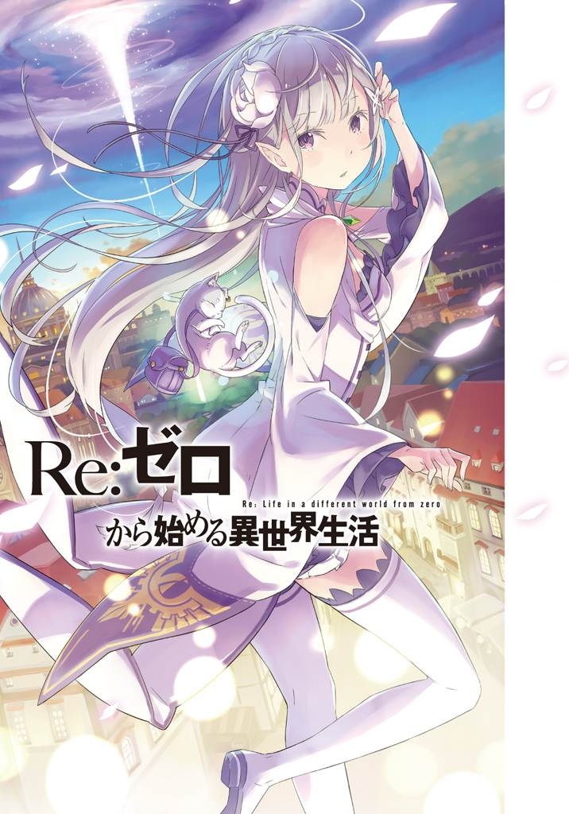
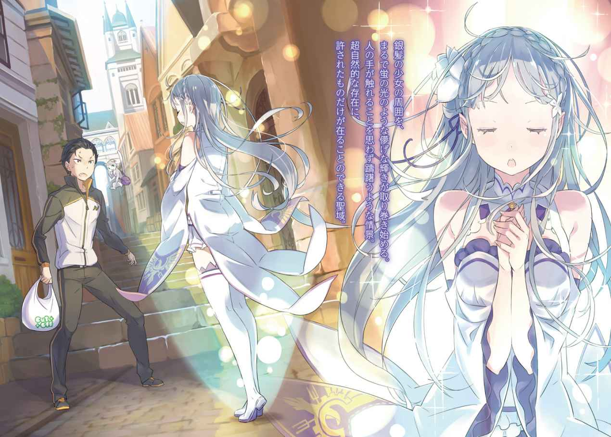
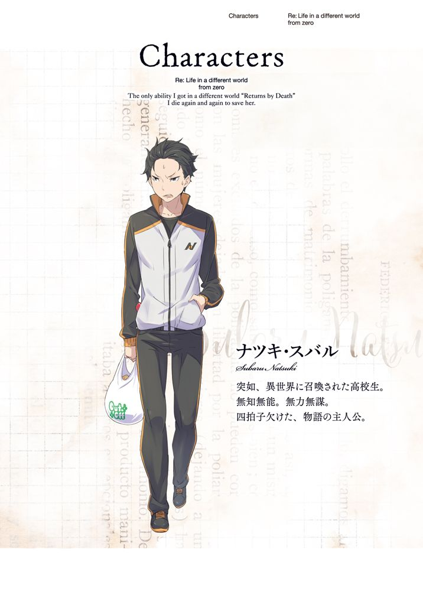
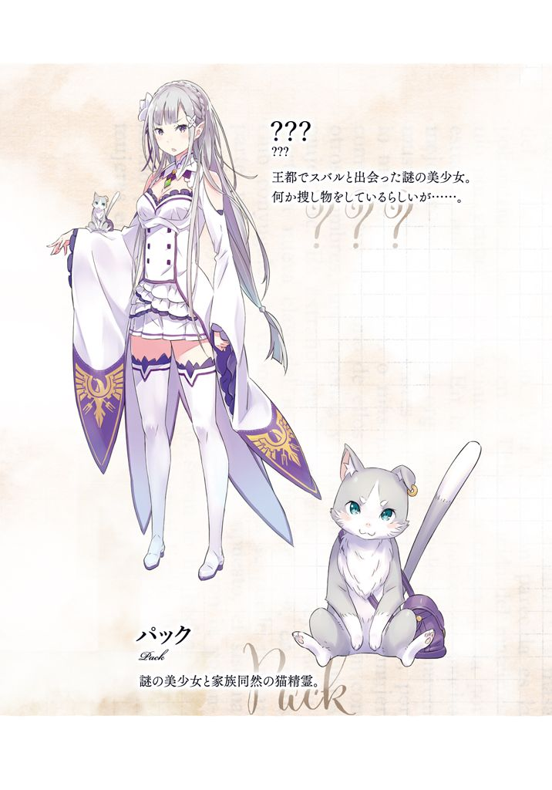
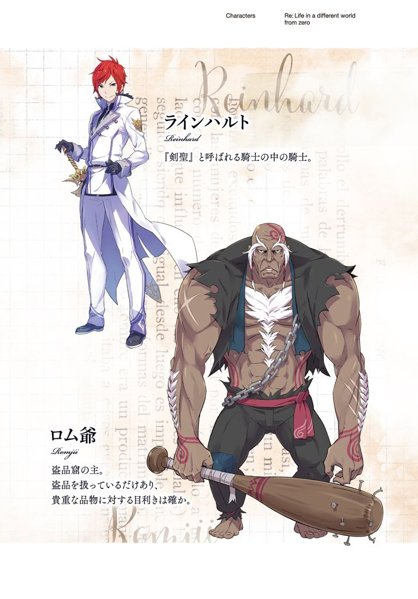
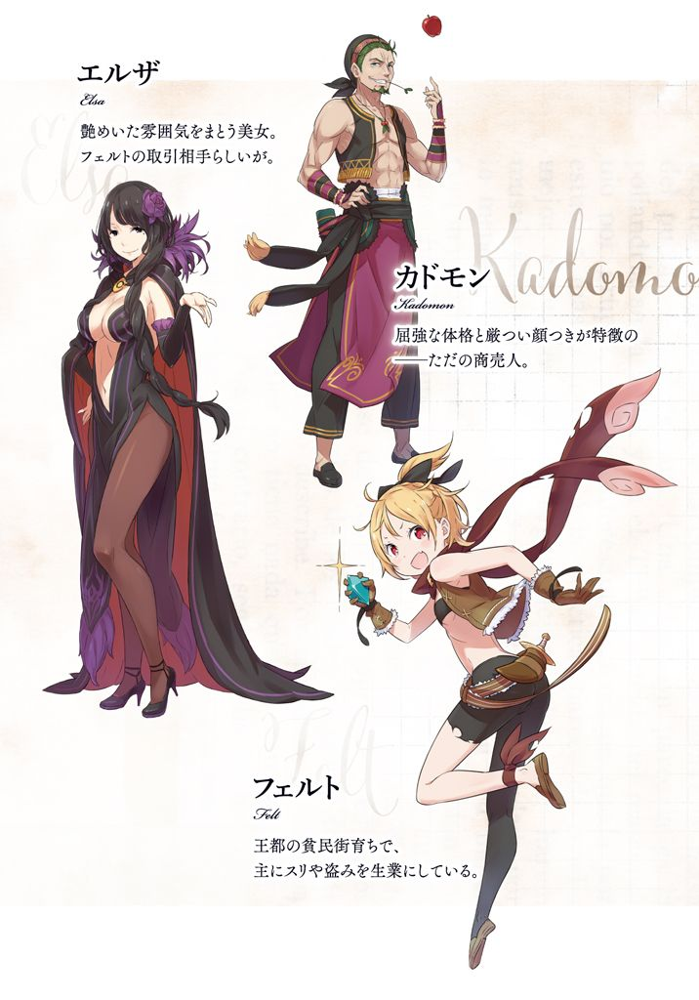
ＭＦ文庫Ｊ
Ｒｅ：ゼロから始める異世界生活１
長月達平
口絵・本文イラスト●大塚真一郎
編集●池本昌仁
プロローグ 『始まりの余熱』
──これは本気でヤバい。
固い地べたの感触を顔面に味わい、彼は自分がうつ伏せに倒れたのだと気付いた。
全身に力が入らず、手先の感覚はすでにない。ただ、『熱』だけが全身を支配していた。
──熱い、熱い、熱い、熱い、熱い、熱い、熱い。
せき込み、喉からこみ上げる命の源を思う様に吐き出す。ごぼごぼと、口の端に血泡が浮かぶほどの吐血。ぼんやりとした視界に、真っ赤に染まった地面が見える。
──ああ、これ全部、俺の血かよ。
体の中の血が全て溢れてしまったような錯覚に陥りながら、体を焼き尽くす『熱』の原因を求めて震える手を伸ばし、腹部の裂け目を指先が捉えて納得した。
どうりで熱いと感じるわけだ。『痛み』を『熱』と錯覚していたらしい。鋭い裂傷は胴体をほぼ真っ二つにして、皮一枚でかろうじて繋がっている状態だ。
つまるところ、どうやら人生の『詰み』というやつに直面したらしい。
理解した瞬間に、急速に意識が遠のいて行く。
眼前、鮮血の絨毯を敷き詰めた床を、黒い靴が波紋を生み出しながら踏みつける。
誰かがいるのだ。そしてその誰かがおそらく、自分を殺したのだろう。
なのに、その誰かの顔を拝んでやろうとは思わなかった。そんなことはどうでもいい。
──ただ願ったのは、彼女が無事でありますようにということだけだった。
「──バル？」
鈴の音のような声が聞こえた気がする。その声を聞くことが、その声を聞けることが、なにより救いだったことを覚えている。だから──、
「──っ！」
短い悲鳴が上がって、血の絨毯がまた誰かを迎え入れる。
倒れ込んだ体はすぐ傍らに。そしてそこにはだらしなく伸びた自分の腕があった。
力なく落ちたその白い手と、血塗れの自分の手がかすかに絡む。
かすかに動いた指先が、自分の手を握り返したような気がした。
「......っていろ」
遠ざかる意識の首根っこを掴み、無理やりに振り向かせて時間を稼ぐ。
「俺が、必ず──」
──お前を、救ってみせる。
次の瞬間に彼──菜月昴は命を落とした。
第一章 『始まりの終わり』
１
──これは本気でマズイことになった。
一文無しで途方に暮れながら、彼の心中はそんな言葉で埋め尽くされていた。
一文無し、というのは正確ではない。ポケットの財布には全財産が入っており、ちょっとした買い物ぐらいはできるだろう。にもかかわらず、無一文と表現するしかない状況だ。
「やっぱ、通貨の価値観とかって全然違うんだよな......」
手の中の十円玉──希少な『ギザ十』を指で弾いて、少年は深いため息をこぼした。
これといった特徴に乏しい少年だ。短い黒髪に高くも低くもない平均的な身長。体格は鍛えているのか筋肉質で、安物のグレーのジャージがやけに似合っている。三白眼の鋭い目つきだけが印象的だが、今はその目尻も力なく落ちていて覇気がない。
群衆に紛れれば一瞬で見失いそうな凡庸な見た目──が、そんな彼を横目にする人々の視線には『珍奇』なものでも見るような色が濃い。当然といえば当然の話。なにせ少年を眺める彼らの中には一人として、『黒髪』のものも『ジャージ姿』のものもいない。
彼らの頭髪は金髪や赤髪、茶髪を始めとして緑髪から青髪まで様々で、さらには格好も鎧やら踊子風の衣装やら黒一色の全身ローブやら、それらしすぎる。
無遠慮な視線の波にさらされて、少年は腕を組みながら認めるしかない。
「つまり、これはアレだな」
指を鳴らし、自分の方を見る人々にその指を向けながら、
「──異世界召喚もの、ということらしい」
目の前を、巨大なトカゲ風の生き物に引かれた馬車的な乗り物が横切っていった。
２
菜月昴は太陽系第三惑星地球で生を受けた、極々平凡な中流家庭出身の日本男児である。
彼のおおよそ十七年の人生を簡略的に語るのであれば前文だけで十分であり、いくらか補足するのであれば『公立高校三年生にして不登校気味』といったところだ。
進学と就職。人生の岐路に立たされたとき、人は決断を迫られる。誰しもに訪れるそれを人生と呼ぶのだが、彼は少しばかり人より嫌なことから逃げるのが得意だった。結果、ずるずると自主休校が増えていき、気付けば立派に親を泣かせる不登校児となり、
「挙句の果てに異世界召喚されて高校中退確定か。......もはや意味わかんねぇな」
出来の悪い夢でも見ている気分だが、頬をつねっても壁に頭突きしても目は覚めない。
ため息をこぼすスバル。好奇の視線を浴びていた表通りから場所を移し、今は通りを一本外れた裏路地、その舗装された地面の上に腰を落としている。
「現状がファンタジー異世界と仮定して、文明はお約束の中世風ってとこか。見たとこ機械類はないけど、地面の舗装の仕事ぶりは悪くない。......金はもちろん使えない」
現地人とのコミュニケーションの可否と、物の価値観への認識について。異世界召喚されたと気付いたスバルは迅速に確認を行っていた。
幸い、言葉は無事に通じたし、商いも金銀銅貨といった貨幣のやり取りなのは確認できた。最初にコンタクトした果物屋には嫌な顔をされてしまったが。
こういう状況の理解が早い点に関しては、アニメ・ゲームに毒された現代日本の若者で良かったとつくづく思う。『異世界召喚』なんて現象は、思春期男子にとっては一種の夢であるといっても過言ではない。もっとも、
「もうちょっと福利厚生充実してないと、俺みたいなゆとりは納得できないよ？」
置かれた状況と、あまりに貧相な初期装備を鑑みてそんな弱音が漏れ出す。
ケータイ（電池切れそう）、財布（レンタルビデオ屋の会員証多数）、コンビニで買ったカップラーメン（とんこつ醤油味）、同じくスナック菓子（コーンポタージュ味）、愛着しているグレーのジャージ（未洗濯）、使い古しのスニーカー（二年もの）の以上だ。
「なんでエクスカリバーの一つも持ってねぇんだ。完全に終わった。どうしろと」
異世界召喚がコンビニ帰りに起きたのだから仕方ない。まさに瞬きの一瞬だった。
唯一、異世界で役立ちそうなスナック菓子も空腹に負けて半分食べてしまい、貴重な食料と後々で気付いたが、後悔先に立たずである。
せめて大がかりな素人ドッキリであることに一縷の望みをかけようとしても、それを裏切るように通りを横切って行くトカゲ風の馬車と、往来を行く人々の見た目。
「みんなスルーして突っ込みなしってことは一般的なんだろな。トカゲも亜人も」
ぼやくスバルの視界に入るのは、奇抜な服装にカラフルな頭髪の人々。そして何よりスバルに異世界召喚の現実を押しつけるのが、亜人の存在だ。
ざっと見渡した限り、『犬耳』と『猫耳』は発見した。変わり種だと『リザードマン』っぽいのもちらっと見かけた。かと思えばスバルと変わらない人間もいるのだ。
「亜人ありありの世界観で、たぶん戦争とか冒険もありあり。見覚えある動物がいるかどうかは別だけど、馬車引いてるトカゲといい役割的には変化なし──ってとこか」
それだけ整理して、スバルはため息とは違う長い息を吐く。これが妄想通りの展開なら、スバルはこれから現代知識を駆使して右へ左へ大活躍するはずだ。
──だが、納得がいかない。
「事態は八方ふさがりで、召喚の原因は完全に不明。鏡くぐった覚えも池に落ちた記憶もないし、そもそも召喚ものなら俺を召喚した美少女どこよ？」
異世界ものにあるまじきメインヒロインの不在。二次元世界ならありえない職務怠慢だ。召喚しておいて無目的で放置されたとあっては、やり捨てにされたようなものである。
事実、現状確認が終わったスバルは早くも現実逃避以外にやることがない。
「まぁ、それ言い出すと元の世界で部屋にこもってるときと変わらねぇか」
ちらと両親の姿が脳裏を過ったが、ホームシックを患っている余裕もない。とにかくまずこの場をどうにかせねば、とスバルは立ち上がって大通りへと足を向ける。と、
「あっと、すんません」
路地から出ようとしたところで、スバルはちょうどそこを通りがかる人影とすれ違う。ぶつかりかけた相手へ謝罪の言葉を投げ、その横を抜けようとして、
「──う、おっと！」
後ろから肩を思い切り掴まれて、体が道を引きずり戻された。たたらを踏みながら振り返れば、路地へスバルを投げ込んだのは見上げるほど大柄な男だ。男は背後に二人の仲間を連れており、男たちは路地を塞ぐように立ち位置を移動する。
その手慣れた動きに嫌な予感。
「ええっと......いったいなんのおつもりなのかお聞きしてもよろしいでしょうか？」
「立場わかってるみたいじゃねえか。まあ、出すもん出しゃあ痛ぇ思いはしねえよ」
「あー、やっぱりそんな感じッスか......まぁ、そーッスよね。はは、こりゃ参ったな」
侮蔑と嘲弄まじりの視線。男たちの年代は二十代そこそこで、内面の卑しさが薄汚い身なりと顔にそのまま表れている。亜人っぽくはないが、善人でもありえない。
わりとこの手の展開でありがちな日常的な脅威、チンピラとの遭遇。つまり、
「やべぇ、強制イベント発生だ」
３
薄笑いを浮かべる男たちに、愛想笑いで場を持たせながらスバルは思考する。
ピンチな状況だが、古来より異世界に招かれた人間は超常の力を発揮するのがお約束。スバルが数ある異世界トリップものと同じ条件で召喚されているなら、スバルにも何か特殊な力が与えられている可能性が高い。そう考えると、体が軽い気がしてきた。
「なんか重力が元の世界の十分の一とかそんな気がしてきた。いける、いけるぜ！ バッタバッタなぎ倒して、俺の輝かしい未来の糧にしてやる、経験値共め」
「なーんかぶつぶつ言ってるぜ、こいつ」
「なに言ってんのかわかんねえけど、俺らを馬鹿にしてんのはわかった。ぶち殺す」
「そりゃこっちのセリフだ......後悔させてやる、ぜ！」
言い切って、スバルは先頭の大柄な男に渾身の右ストレートを放った。拳は鼻面を見事に直撃。だが、相手の前歯が当たった拳から血が出る。
──初めて人を殴った！ 思ったよりもこっちも痛い。
シミュレーションに余念はなかったが、実戦は初めてだ。殴られた男は地面に倒れ込む。そのまま勢いに任せてスバルは驚いている別の男にも躍りかかった。
弧を描く足先が男の側頭部を打ち抜き、壁に叩きつけて二人目を悶絶させる。
思いのほか好調な出だしに、スバルの中で『異世界無双』が確信に変わりつつあった。
「やっぱこの世界だと俺は強い設定か！ アドレナリンだばだばでこれはもらった──」
勇んで振り向き、最後の男を叩きのめそうとスバルは身をかがめた。
が、その最後の男の手の中に見つけたのは、きらりと光るナイフ。
そのままスバルの体は膝から地を滑り、綺麗に上体を折り畳んで額を地面に擦りつける。
「すみません俺が全面的に悪かったです許してください命だけは平にご容赦を──！」
土下座。それは相手に対して最大限の降伏を示す、最低の和の心。
さっきまで盛り上がっていた気分もどこへやら。全身から血の気が引く音が聞こえる。スバルは必死で温情に縋りつこうと体を小さくして謝り続ける。
だって刃物は無理。刺されたらどんなに鍛えてても終わり。諸行無常。
気付けば倒したはずの二人も復活していた。鼻血の垂れる顔を押さえていたり、頭を振っていたりするが、揃って意外と元気そうだ。
「あれ!? 俺の一撃必殺でその程度ってどゆこと!? 召喚もののお約束は!?」
「なにわけわかんねえこと言ってやがる！ よくもやりやがったな！」
召喚もののお約束、完全に手違い。特に強くなってなかった。
土下座する顔面を上から踏みつけられ、額で地面を削って血が流れる。そのまま顔を蹴りつけられ、必死で丸まる体に次々と暴行が加えられた。
先に手を出したのはスバルだ。そのため、男たちには容赦がない。
──やべぇ、すげぇ痛ぇ。死ぬかもしれない。いやマジで。
元の世界と違って、チンピラが命を取らない保証もない。いっそ、なぶり殺しになる前に玉砕覚悟で反撃を──、
「動くんじゃねえよ、ボケ！」
「痛い！ あががが、痛い痛い痛いって！」
男は立ち上がろうとするスバルの手を踏みにじり、ナイフを逆手に持ち替える。
「動けないようにしてから身ぐるみ剥いでやるよ。ふざけた真似しやがって......」
「か、金目の物が目当てならぶっちゃけ無駄だぜ。なにせ俺は一文無し......！」
「なら珍しい着物でも履物でもなんでもいいんだよ。路地裏でネズミの餌になれ」
あ、この世界にもネズミっているんだ。大きくないといいな、化け物みたいに。
振り下ろされそうなナイフを他人事のように眺めて現実逃避。
走馬灯とかは特に見えない。世界がゆっくりに映るといった現象もなし。
ただぷつりと、糸が切れるように終わるのだろう。
──そのときだ。
「ちょっとどけどけどけ！ そこの奴ら、ホントに邪魔！」
切羽詰まった声を上げて、誰かが路地裏に駆け込んできた。
ギョッと顔を上げる男たちと同じく、スバルも動かない体で視線だけ持ち上げる。
目の前をセミロングの金髪を揺らす小柄な少女が横切って行く。
意志の強そうな赤い瞳に、イタズラっぽく覗く八重歯。
小生意気な印象が先立つが、微笑めば人並み以上に愛嬌のある顔立ちの気がする。
見計らったようなタイミングに、消えかけた希望の灯がスバルの目に点る。
この展開を待っていた。
着古した汚い格好の少女は、今まさに強盗殺人が行われる現場に出くわしたのだ。
流れ的にこの少女は義侠心溢れる性格で、今にも儚く散りそうなスバルの命を助けてくれる的な展開が──、
「なんかすげー現場だけどゴメンな！ アタシ忙しいんだ！ 強く生きてくれ！」
「って、ええ!? マジで!?」
だがしかし、そんな希望はあっさりと砕け散った。
少女はスバルに申し訳なさそうに手を上げ、走る勢いそのままに細い路地を駆け抜ける。男たちの後ろを素通りし、行き止まりのはずの奥へ──そのまま袋小路に立てかけてあった板を蹴り、身軽に壁を掴むとあれよという間に建物の上へと消えた。
少女の姿が見えなくなり、自然と場に沈黙が落ちる。
まさに台風のように一過していった少女。唖然としたのはこの場にいた全員。
だが、スバルの状況が変わっていないのもまた事実だ。
「今ので毒気が抜かれて気が変わってたりしませんかね!?」
「むしろ水差されて気分を害したぜ。楽に逝けると思うなよ」
いまだ体は男たちに踏みつけられたままで動けない。
男の手にしたナイフのきらめきに、間近に迫る『死』の実感がわき上がる。
──いやいや、嘘だろ。まさか、こんなあっさりと。
引きつるような笑みが浮かび、誰かがこの状況を否定してくれるのを必死で焦がれる。しかし、そんな都合のいい展開は訪れず、刃の先端が近づいてくる。
諦めの気持ちが胸中を支配し、涙がこぼれそうになるのがわかった。
恐怖、ではない。ただ、何もない空っぽのまま終わること、それが耐え難い。
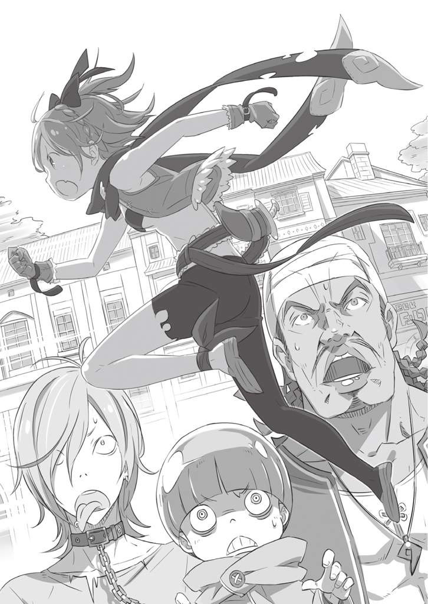
その全てに見放されるような、圧倒的な絶望感の中──、
「──そこまでよ、悪党」
その声は雑踏の喧騒も、男たちの野卑な罵声も、スバル自身の荒い呼吸も、その何もかもをねじ伏せて世界を震わせた。
４
時が止まる、というのはこういうことだろうか。
路地の入口に、一人の少女が立っている。
美しい少女だった。編み込みの入った、腰まで届く銀色の髪。理知的な紫紺の瞳でこちらを見据えている。柔らかな面差しには艶と幼さが同居しており、どことなく感じさせる高貴さが危うげな魅力を生み出していた。
身長はスバルより頭一つ低い、百六十センチほど。白を基調とした服装には華美な装飾はなく、シンプルさが逆にその存在感を際立たせる。唯一目立つのは彼女の羽織る白いコート。『鷹に似ている鳥』を象った刺繍が施されており、荘厳な印象を与えている。
だがその衣装すら、少女という存在を輝かせるための添え物にすぎない。
「それ以上の狼藉は見過ごせないわ。──そこまでよ」
銀鈴の声音は鼓膜を心地よく叩き、スバルに今の状況を忘れさせる。ただひたすら、銀髪の少女の存在感に打ちのめされる。男たちにも、同じ動揺が広がった。
「あ......てめえは、いったい......」
「今なら許してあげる。私の不注意もあったもの。だから、潔く盗った物を返して」
「おい、着てるもんが高そうだ。貴族とかじゃ......へ？ 盗った物？」
「お願い。あれは大切な物なの。あれ以外なら諦めもつくけど、あれだけは絶対にダメ。お願い。いい子だから大人しく渡して」
懇願の気配すら漂わせている少女──。
だが、現場には不可解な圧迫感が高まりつつあった。言葉にし難い何かが起きている。
「ちょ、待て！ は、話が食い違ってると思うんだがっ」
「......なんのこと？」
男たちは足蹴にしているスバルを指差し、
「こ、こいつを助けにきた......ってわけじゃねえんで？」
「......変な格好の人ね。仲間割れの途中？ 三対一なんて感心しないけど......私と関係あるのか聞かれたら、無関係って答えるしかないわ」
話をはぐらかされていると思ったのか、少女の口調にかすかな苛立ちが感じられた。少女の態度に焦りを覚えた男たちは、慌てた様子で口々に弁明を始める。
「待ってくれ！ 目的がこいつじゃないなら、俺らは別口だ！ さっきのガキだろ！」
「盗まれたって言ってたろ！ 壁だ！ 壁蹴って屋根伝いに逃げてった！」
「奥だ奥！ その向こう！ あの勢いなら通りをもう三つは抜けてる！」
男たちの続けざまの言葉に、少女の視線がスバルへ向けられる。男たちの言葉の真偽を問う視線に、思わずスバルも頷いてしまった。
「ううん......嘘じゃ、ないみたい。それじゃ、盗った子は路地の向こう？ 急がないと」
スバルに背を向けて、少女の足が路地の外へ向かう。男たちの露骨な安堵。スバルは見捨てられる現実に呆然としかけ──
「それはそれとして、見過ごせる状況じゃないの」
振り返りざまに掌をこちらへ向けた少女──その掌から輝きが乱舞して放たれていた。
硬球が肉を打つのに似た音が響き、男たちが苦鳴を上げて吹っ飛ばされる。
そして、スバルの傍らに甲高い音を立てて、拳大の氷の塊が落ちた。季節感や物理現象を無視して生じた氷塊は、すぐさま大気に食まれるようにして霧散する。
「──魔法」
今の現象を説明するのにもっとも適した単語が、とっさに口からこぼれる。
詠唱も何もなかったが、それは確かに彼女の掌から生まれて打ち出されていた。
魔法──こうして実際に目の当たりにして、初めてわかったことがある。
「思ったより幻想的な感じじゃないな......なんかガッカリなリアル感だ」
光が散ったりだとか、エネルギーがはっちゃけたりとか、そんなイメージだったのに。実物は無骨な氷が急に生じて、物理ダメージを与えて急に消える。情緒もクソもない。
「やって......くれやがったな」
スバルの魔法への感想はさて置き、氷塊のリアルな一撃を受けた男たちが立ち上がる。
足をふらつかせて立てたのは二人だけで、打ちどころの悪かった一人は昏倒中。ただ、仲間がやられたことがかえって男たちの怒りに油を注いだらしい。ナイフ男とは別の男も棍棒のような鈍器を手に、臨戦態勢に入っている。
「こうなりゃ、相手が魔法使いだろうが貴族だろうが知ったことかよ。収まりがつかねえ。囲んでぶっ殺す！ 二対一で勝てっと思ってんのか、ああ！」
片手で鼻血の滴る顔を押さえるナイフ男。その罵声に少女は片目をつむった。
「そうね。二対一は厳しいかも」
「──じゃ、二対二なら対等な条件かな？」
少女の声を引き継ぐように、中性的な高い声が新たに路地の空気に割り込んできた。
スバルは驚き、視線をさまよわせる。男たちも慌てて周りを見渡すが、路地の入口にも路地の中にも、声を発した人物らしき姿はない。
すると、困惑するスバルたちに見せつけるように、少女が左手を伸ばす。
上に向けられた掌、その白い指先の上に『それ』はいた。
「あんまり期待を込めて見られると、なんだね。照れちゃう」
そう言って、はにかむように肉球で顔を洗ったのは、掌サイズの直立する猫だった。
毛並みは灰色で垂れた耳。スバルの知る知識ではアメリカンショートヘアという種類の猫が一番近い。鼻の色がピンク色で、体長ほどもある尻尾の長さを除けばだが。
その掌サイズの猫の姿を見て、ナイフ男が戦慄を顔に浮かべて叫んだ。
「──せ、精霊術師か！」
「ご名答。今すぐ引き下がるなら追わないわ。すぐ決断して。急いでるの」
少女の言い分に男たちは倒れた仲間を慌てて担ぎ、路地の外へ向かう。途中、隣を抜ける際に少女に聞こえるように舌打ちをして、
「面ぁ覚えたぞ、クソアマ。次、このあたりで見かけたらただじゃおかねえ」
「この子に何かしたら末代まで祟るよ？ その場合、君が末代なんだけど」
チンピラの精一杯の恫喝だが、対して小猫の返事は軽い口調ながら辛辣だった。
手乗り猫はへらへらした態度だが、男たちはそれまででもっとも顔色を青くして、今度こそ無言で雑踏の方へ逃げ込んで行く。
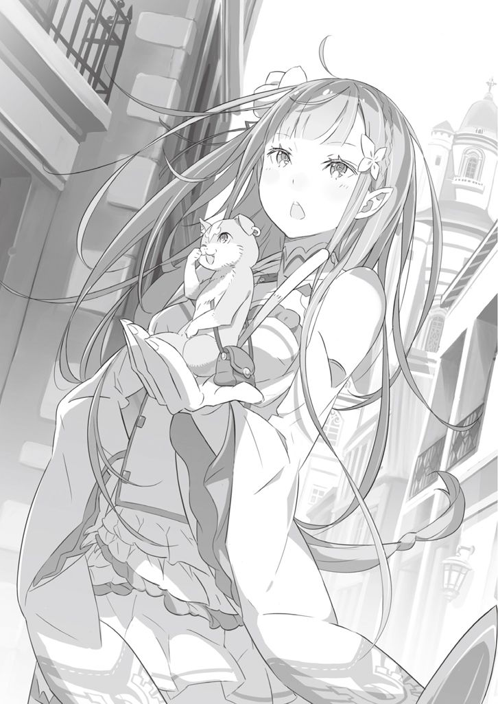
チンピラたちの姿が見えなくなり、スバルと少女たちのみが路地に残された。
とにかくお礼の言葉を言わなければと、スバルは体の痛みも忘れて上体を起こそうとすると──
「──動かないで」
銀髪の少女が情を感じさせない冷たい声でそう言い放った。
少女の瞳には警戒の色が濃く見える。スバルが男たちと別口だとは理解していても、それが心を許す理由にはならない。そう判断している目だ。
そんな目を向けられているというのに、スバルの方の反応は場違いなものだった。
こちらを見る彼女の紫紺の瞳。それはまるで、魅入られるように美しい。美少女慣れしていないスバルは見つめられるだけで、思わず顔を赤くして目をそらしてしまう。
そんなスバルの仕草に、銀髪の少女は不敵に笑う。
「ほら、やましいことがあるから目をそらしたんだ。私の目に狂いはないみたいね」
「どうかなー。今のは男の子的な反応ってだけで、邪悪な感じはゼロだったけど」
「パックは黙ってるの。──あなた、私から徽章を盗んだ子を知ってるでしょ？」
子猫を黙らせて、少女はスバルへ問いかける。自信満々な顔も愛らしい。しかし、
「期待されてるとこ悪いけど、全然まったくこれっぽっちも知らない」
「え、やだ、嘘!?」
自信が顔から剥がれると、少女の作り物でない素の表情がちらと覗いた。
先ほどまでの凛々しい態度もどこへやら、慌てふためく彼女は掌の猫と向き合い、
「ど、ど、どうしよう。まさか、本当にただ回り道しちゃっただけ......？」
「その状態も刻々と進行中だけどね。急いだ方がいいと思うよ。逃げ足がすんごい速かったから、きっと変な加護とか持ってるよ、犯人」
「むう。なんでそんなに他人事なの、パックは」
「手出し口出し無用って言ったのはそっちなのに。それと、あの子はどうする？」
思い出したように話題の焦点が戻ってきてスバルは苦笑する。「あっ」とスバルの存在と状態にようやく思い至ったような少女。
そんな彼女にスバルは虚勢を張って立ち上がり、
「助けてもらっただけで十分だよ。急いでるんだろ？ 早く行った方がいい」
──なんなら手伝うけど、どうする、お嬢さん？
なんて髪をかき上げて歯を光らせながら言う算段だったのだが──
「あれれ？」
ふいに頭がふらつき、壁に着こうとした手が空振ってそのまま顔面から地面に倒れる。
「あー、無理して立ち上がんない方がー、って言うのが遅かったね」
一歩遅い小猫の警告。受け身ゼロで倒れ込んだ結果、鋭い痛みにスバルの意識が彼方へ持っていかれる。
「──で、どうしよっか」
「関係、ないでしょ。死ぬほどじゃないもの。放っておくわよ」
遠ざかり始める意識の彼方で、そんな二人の会話がわずかに聞こえる。
さすがは異世界ファンタジー。人情に関してもシビアな見解を持ってらっしゃる。
このまま路地裏に捨て置かれるのか、というネガティブな思考。
まぁ、死ぬところだったのが命あるだけ恩の字だわな、というポジティブな思考。
そんな両論を得ながら、スバルの意識は段々、段々と遠くへ──。
「ホントにー？」
「ホントに！」
ぷつりと意識が途切れる瞬間に、赤い顔をして振り返る銀髪の少女が見えた。
「──絶対の絶対、助けたりなんかしないんだからっ」
──怒った顔もすんげぇ可愛いな、異世界ファンタジー。
そんな感想を最後に、今度こそスバルの意識は闇の中へと落ちていった。
５
眠りから目覚める感覚は、水面から顔を出す感覚に似ているとスバルは思う。
瞼を開ければ傾いた陽光が瞳を焼き、眩しさに顔をしかめながら目を擦る。寝起きはいい方で、一度目が覚めればすぐに意識が覚醒するのがスバルの体質だった。
「あ、目が覚めた？」
声は真上、寝ているスバルの頭上から降ってきた。
声の方向に顔を向けようとして、スバルは自分が地べたに寝転がり、何か柔らかいものを枕にしている事実に気付く。
「まだ動かないで。頭も打ってるから、安心できないの」
こちらの身を案じる声は優しく、スバルは意識を失う寸前の出来事を思い出し、今、自分が男の子的にものすごく恵まれた展開にいるのではと思い当たる。
膝枕──その天啓に従い、スバルは寝返りを打つふりをしてそれを堪能。円運動で頬が至福の感触に辿り着き、想像以上にふわっふわな毛並みの柔らかさが顔を押し返した。
「あふぅ。なんか美少女って思ったより毛深いんだね......って、そんなわけあるか！」
ノリ突っ込みを入れつつ上を向き、今度こそ戻った視力がはっきり世界を映し出す。
スバルの眼前、逆さの視界の中には、ものすごいでかい猫の顔があった。
「せめて目が覚めるまで、幸せに過ごさせてあげようという粋な計らいだよ」
「とりあえず、その不快な裏声やめて。猫とヒロイン間違えるとかありえないから」
人間大の猫に膝枕されるかつてないシチュエーション。ただ、せっかくなので、そのふわふわ毛皮を頬で楽しむことにする。
「ヤバい、至福すぎる。なにこの快楽。猫がハゲるまで愛したくなる気持ちがわかる」
「いやぁ、こんなに喜ばれるとボクもわざわざ巨大化した甲斐があるよ。ね？」
照れた仕草で頭を掻きながら、同意を求めるようにウィンクする巨大猫。その視線の先、路地の入口に立つのは、澄まし顔で腕を組む銀髪の少女だ。
意識を失う直前、スバルの記憶と眼と男心に鮮烈に焼きついた少女に間違いない。
少女はスバルの覚醒と相方の目配せに小さく吐息し、こちらへ歩み寄ってくる。
「なんか、悪かったな。けっきょく、目が覚めるまで付き合ってくれたみたいで......」
「勘違いしないの。聞きたいことがあるから仕方なく残っただけなんだから。それがなかったらあなたのことも置き去りにしたわ。そう、してたの。勘違いしないこと」
念を押すように、強い語調で美少女が言ってくる。美少女耐性のないスバルでは太刀打ちできない女子力。内容を無視して頷くしかない強制力だった。
「私があなたの体の傷を治してあげたのも、目覚めるまでパックを枕にさせてあげてたのも、私のためだったの。だから、その分に応えてもらうんだから」
「恩着せがましい感じを演出しつつ、普通のお願いじゃね？」
情けは人のためならず、を地で行くような論法だ。
そんなスバルの返答に対し、少女は厳しい顔つきのままで首を横に振る。
「そんなことない。一方的な命令だもの。──あなた、私の盗まれた徽章に心当たりあるでしょう？」
声の調子を落として、少女がそう問いかけてくる。が、その内容に聞き覚えがあるものだから、スバルは首を傾げざるを得ない。
気を失う寸前、同じやり取りをしたはずなのだ。徽章というと、いわゆる弁護士や検事のような身分を表すバッジのことだろう。心当たりはない。
「俺が意識のない間に、頭を強く打ったりとかした？」
「十分くらいだけど、そんなことなかったわよ。それより、質問の答えは？」
「いやぁ、それでしたら、ちょっと心当たりとかないかなぁなんて」
知らないものは知らないのだ。スバルの答えはさっきと寸分も変わらない。
しかし、少女はスバルの答えに失望した様子もなく頷いた。
「そう。それじゃ仕方ないわね。でも、あなたはなんにも知らないって情報を私に教えてくれたわけだから、ちゃんとケガを治した分の話はしたものね」
と、詐欺師もびっくりな論法で自分の丸損を表明したのだった。
呆気にとられるスバルを置き去りに、少女は吹っ切るように大きく手を叩き、
「じゃあ、急いでるからもう行くわね。ケガは一通り治ってるはずだし、厳しく脅したからあの人たちももう関わってこないと思うけど、こんな人気のない路地に一人で入るなんて危ないわよ。あ、これは心配じゃなくて忠告。次に同じような場面に出くわしても、私があなたを助けるメリットがないもの。だから、期待しちゃダメだからね」
少女は機関銃のように早口でメチャクチャにまくし立てる。そして押し黙るスバルの態度を肯定と受け止めたのか、「よし」と満足そうに頷いてから身をひるがえした。
長い銀髪が少女の仕草に合わせて揺れ、薄暗い路地の中で幻想的にきらめいた。
見惚れていると、ふいに頭の下から毛皮の感触が抜け、スバルは慌てて上体を起こす。
「ゴメンね。素直じゃないんだよ、うちの子。変に思わないであげて」
笑いを含んだ口調でフォローして、元のサイズに戻った猫が少女の肩に乗る。少女の手がその感触を確かめるように背中を撫でると、猫の姿は銀髪の中にもぐるように消えた。
こちらを一瞥もせず、颯爽と少女は歩き出す。その背中を見送りながら、スバルは思う。
あの小猫の言った、素直じゃないらしい少女の言動の意図を。
物盗りにあって、急いでいたのにスバルを助けてくれたのだ。そして倒れたスバルを治療して、今も負い目を感じさせないようにヘタクソすぎるフォローをしていった。
素直じゃないなんてレベルじゃない。ただ損するばかりで、目も当てられない。
少女は自分の目的の邪魔をしたスバルを責めることだってできた。なのに、彼女は文句の一つもつけなかったし、スバルに謝罪も感謝も求めなかった。
なぜなら彼女にとって、スバルを助けたのは自分本位な目論見通りのことなのだから。
「そんな生き方、メチャクチャ損するばっかじゃねぇか」
言いながら立ち上がり、スバルは砂埃で汚れた己のジャージを叩いて走り出す。
愛用のジャージは汚れこそ目立つが、その内側の肉体から痛みはほとんど感じない。あれだけ蹴られて殴られたのに、だ。改めて魔法の非常識さを実感した。
そしてこれだけの恩を売っておいて、対価を受け取ろうとしない彼女の奇特さも。
「──おい、待ってくれよ！」
路地の入口、大通りへ面した位置で行き先に迷う少女、その背中に声をかける。長い銀髪に手を当てて、彼女は少しだけ困ったような顔で振り返る。
「なに？ 言っておくけど、これ以上は私もちょっとしか付き合ってあげられないから」
「若干甘さ見えてるけど!? それより大切な物なんだろ？ 俺にも手伝わせてくれ」
スバルの申し出に、少女は驚いた様子で目を瞬かせる。
「でも、あなたは何も知らないって......」
「確かに、盗んだ奴の名前も素姓もどこ中かも知らねぇけど、少なくとも姿かたちぐらいはわかる！ 八重歯が目立つ金髪の子猫ちゃん！ 身長は君より低くて胸もぺちゃってたから二つ三つ年下！ そんなとこでいかがでしょ！」
てんぱると早口で自分でもなに言ってるのかわからなくなるのがスバルの悪癖だった。
今回もそれが全力で発揮され、自分で自分の発言にどん引きである。
沈黙が痛い、苦しい。冷や汗で背中がぐしょぐしょ。脇汗と手汗で腕回りがヤバい。動悸息切れと眩暈に貧血、鼻詰まりと偏頭痛に花粉症が併発して四面楚歌。が、
「──変な人」
口元に手を当てて、珍獣でも見るように少女が小首を傾けていた。
彼女はそうして唇に指を当てたまま、値踏みするようにスバルをジッと見つめて、
「言っておくけど、なんのお礼もできません。こう見えて私、無一文なので」
「安心しろ、俺も無一文みたいなもんだ」
「ちなみにボクも素寒貧だけど、ひどいね、この集まり」
銀髪の中から直接的な茶々が入るのを意識的に無視し、スバルは自分の胸を叩いた。
「それにお礼なんていらない。俺が君に礼をしたい。だから手伝いたいんだ」
「お礼をされるようなことしてない。傷のことならちゃんと対価は貰ってるんだから」
あくまで譲らない少女。
そんな彼女の頑固な態度にスバルは苦笑して、「それなら」と前置きする。
「俺も俺のために君を手伝う。俺の目的は、そうだな。うん、一日一善だ！」
「一日一善？」
「そう、一日に一個いいことをする。すると死んだあとに天国へゴーだ。そこでは夢の食っちゃ寝ライフが俺を待ってるらしい。だからその私利私欲のために君を手伝う」
自分でも何を言っているやらな雰囲気だが、言いたいことは言った。
やり切った顔のスバルに少女は思案顔。しかし、そんな彼女の頬を肩に乗る小猫が肉球で柔らかにつつく。
「悪意は感じないし、素直に受け入れてもいいと思うよ？ まったく手掛かりなしで探すなんて、王都の広さからしたら無謀でしかないし」
「でも、こんなことに巻き込んだりしたら......」
「意地っ張りなのも可愛いと思うけど、意地を張って目的を見失うのは馬鹿馬鹿しいと思うよ。ボクはボクの娘が馬鹿な子だと思いたくないなぁ」
スバルへの小猫の援護が入るが、それでも少女は気後れした態度を崩さない。しかし、小猫はふいに表情を消すと真剣な声で、
「それに、もう日も傾き始める頃だからね。夜になったらボクは手を貸せなくなっちゃう。暴漢ぐらいが相手なら心配しないけど......弾除けは多い方がいいよ」
「物騒な役割が割り振られた感があるな！ けど、なに？ 今の話だと、お前って夜だと出られない感じの雇用条件なの？」
一歩、距離を詰めつつ小猫にスバルは問いかける。猫は己のヒゲを前足で軽く弾き、
「出てこれないっていうか、ボクはこんな可愛い見た目だけど精霊だからね。表に出てるだけでけっこうマナを使っちゃうんだ。だから夜は依り代の結晶石に戻って、お天道様が出てる間に備えてるんだよ。まぁ、平均的には九時から五時が理想かな」
「九時五時とか公務員みてぇだな......精霊の雇用形態も案外シビア......！」
ナチュラルに精霊関連のトークができているが、そこはアニメ・ゲームに毒された現代オタクの読解力のおかげだ。国家的変態性も役立つことがある。
スバルと小猫間で会話が成立する傍ら、なおも少女の懊悩は継続中。ただ、さっきのやり取りで天秤は揺れたらしく、「あうー」「ううん」「でもっ」と色っぽく悩んだ挙句、
「──本当に、なんのお礼もできないからね」
そう言って、スバルの申し出を受けてくれたのだった。
６
異世界で初めての友好的な交流──そんな心温まるやり取りを経て、約一時間。
「──ちょっと、どういうことなの」
捜査は順調に滞っていた。
少女の冷たい視線を浴びながら、スバルは気まずさを誤魔化すように頭を掻く。
「まさかこんな難事件に出くわすとは、俺の目を持ってしても見抜けなかったぜ......」
「すごーく自分を高評価してるみたいだけど、結果が伴ってないの。もう、にっちもさっちもどうにもならないじゃない」
「にっちもさっちもってきょうび聞かねぇな......」
言い回しを指摘された少女の視線が鋭くなるのを感じ、スバルはさらに体を小さくした。
小一時間の捜索を経たにもかかわらず、なぜか変わらずスバルたちは路地裏の中。もちろん深い理由がある。発覚したいくつかの問題点が事態を難航させているのだ。
まず、土地勘がない。
これに関しては、異世界召喚されたばかりなので許してほしいとしか言えない。どうやら少女もこのあたりの地理には疎いらしく、揃って相手が詳しいに違いないと信じて十分ほど時間を無駄にしたのも笑い話だ。スバルを見る少女の目は笑ってないけど。
そして第二に、そこら中に記されている文字──それがまったく読めないのだ。
会話が通じて油断していたが、改めて周囲を見るとそこかしこに手書きの象形文字のようなものが存在している。『巷で流行りの魔よけの呪い』などでない限り、おそらくあれがこの世界における標準文字なのだろう。スバルには案内板も読めない。
つまり召喚もののお約束、『なぜか通じちゃう言葉と文字』は片方のみの適用。言葉も通じなければ野垂れ死に確実だった点を踏まえると、不運と取るかは難しいところだが。
「それにしたって、難易度無意味に爆上げしすぎだろ......世界優しくねぇ」
至れり尽くせりどころか、あちこち不備が見つかるずさんな事前準備ぶりだ。
とほほ、とここまで良い所なしの足跡を振り返って落胆するスバル。と、そんな彼を余所に一人、同行していた少女が壁際に佇みながら瞑目しているのに気付く。その小さな唇が何事か呟くのを見て、スバルは首を傾げる。
「なーにをしてんのかな......」
「あれはねー、微精霊とお話してるところなんだよ」
ふいに目の前に出現した灰色の小猫に言われて、スバルはぎょっと眉を上げる。
「見ないと思ってたけど、直帰しないでちゃんといたのかよ」
「定時までもう少しあるからね。そこらの微精霊と違って、ちゃんと仕事するよ、ボク」
「職業意識が高くてけっこうなこったよ。......その微精霊ってのはなんなんだ？」
字面的に精霊よりワンランク落ちる立場だろうか。
スバルの想像を裏付けるように、小猫は浮遊したまま長い尻尾を揺らして、
「微精霊っていうのは、精霊になる前の知恵付き始めの存在ってとこかな。これがもうちょっと時間を経て、力と自意識に芽生えるとボクみたいな精霊になるんだよ」
頷きながら説明を聞いていると、次第にぼんやりと少女の周囲に淡い光が浮かび出すのがわかった。銀髪の少女の周囲を、まるで蛍の光のような儚げな輝きが取り巻き始める。
人の手が触れることを思わず躊躇うような情景。超自然的な存在に、許されたものだけが在ることのできる聖域。そんな風景にスバルは──、
「すげーな、これ。このいっぱいふわふわしてんのみんな精霊？」
「──ひゃっ」
わりとずけずけと侵入し、幻想的さをぶち壊しにして少女に話しかけていた。
驚きの声を上げる少女の目には、反射的に浮かんだ涙の滴が光っている。そして、彼女を取り巻いていた輝きたちにも動揺は伝染し、
「おー、パニくってるパニくってる」
数多の光がおたおたするように左右に揺れて逃げ惑い、やがて霧散するように大気の中へと溶けてしまう。
「──あ」
二人で同時に口をポカンと開けて、消えてしまった微精霊の姿を求める。が、慌てた少女が先と同じ手順を踏むが、その呼びかけに彼らが反応する気配がない。
「あー！ いなくなっちゃったじゃない！ どうするの!?」
「うわーぅ、ごめん！ ほら、精霊見るのとか俺って初めてだったからちょっと舞い上がっちゃってさぁ。見た感じ、危ないようには見えなかったし」
「制御下にあるから大丈夫だっただけ。未熟な精霊術師に今みたいなことしたらひどいんだから。最悪の場合、精霊の暴走を招いて......ぼかん、よ」
「ぼかんて」
軽率なスバルをたしなめる少女だったが、出てきた言葉が『ぼかん』だ。
「そんな大げさな。あんなきらきらしたのが危ないとか、そんなんあんの？」
「そうだね、たとえばボクはこんな可愛いけど......二秒で君を粉微塵にできるよ」
「精霊恐ぇ──!!」
長閑な抹殺宣言に戦慄するスバルが少女を見る。
「まさか本気でお怒りでいらっしゃって、その猫ちゃんをけしかけてきたりは......」
「そんなことにパックを使ったりしません。暴力に訴えるんなら自分でやります。......ダメ、やっぱりもう答えてくれないみたい」
微精霊との再コンタクトに失敗し、しゅんとした少女が力なく首を横に振る。
「その精霊が消えちゃったあとで聞くのもなんだけど、なにしようとしてたの？」
「探し物の心当たり聞き出せないかなって。その前に消えちゃったけど」
「うえ!?」
想像以上の自分の落ち度に喉が詰まるスバル。それを見た少女が「あ」と声を上げ、
「で、でもほら、時間がちょっと経っちゃってたし、微精霊の子たちってちゃんとした精霊ほど意識もはっきりしてないから期待薄だったの......って言ったら嘘になっちゃう」
素直な性格が災いし、フォローしようとしてフォローし切れず葛藤する少女。少女の懊悩にスバルは改めて自分の馬鹿さ加減を意識した。このままでは最初から最後まで少女の足を引っ張るだけで終わってしまう。
「恩義的にも異世界での貴重な繋がり的にもそれだけはマズイ。この関係、どうにか縋りついて逃がしゃしねぇぜ......！」
「邪なこと考えてる顔してるけど、何か思いついたの？ えっと......」
わりと身勝手な決意を固めるスバルの前で逡巡する少女。少しだけ眉根を寄せる彼女の態度にスバルは首を傾げるが、その意を酌んだのは灰色の猫であった。
「ああ、そういえばまだ名前も聞いてないよね。自己紹介、しておく？」
「お、そういやそうだな。んじゃ、ここは俺から名乗らせていただこう！」
失態を誤魔化すように空元気に振舞い、スバルは指を天に向けてポーズを決める。
「俺の名前はナツキ・スバル！ 無知蒙昧にして天下不滅の無一文！ ヨロシク！」
「それだけ聞くともう絶体絶命だよね。うん、そしてボクはパック。よろしくー」
友好的に差し出した手にパックが体ごと飛び込んでダイナミック握手。傍目からはスバルがパックを握り潰しているように見える。その大胆な接し方に少女は目を瞬かせる。
「精霊とこんなに気軽に接する人なんてホントに珍しい。......珍しいって言ったら名前もだけど。黒い髪と瞳の色も、どこからきたの？」
「ふっ、いずれ聞かれると思ってたぜ。まぁ、パターンからすると東のちっさい国だな！」
異世界ネタなら使い古されたパターン。世界の東側に存在するジパング的な隠れ里。
他国との国交が少なく、そこから流れ着いたと聞けば誰もが納得してくれる魔法のように便利なお約束。しかし、
「ルグニカは大陸図で見て一番東の国だから......この国より東なんてないけど」
「嘘、マジで!? 東の果て!? じゃあ、ここが憧れのジパング!?」
「今、自分のいる場所がわかってなくて、お金も持ってなくて、字が読めなくて頼れる人もいない。この子、ひょっとして私より危ない立場なんじゃ......」
予想外の展開に愕然とするスバルに、少女もそわそわと落ち着かない態度を取り始める。
行動の端々から世話焼きな性分がにじみ出る少女だ。無防備というよりノーガードすぎるスバルの生き方に気が気でないのだろう。
彼女は改めてじろじろと、スバルの姿を上から下までじっくりと眺める。
「こうして見ると、けっこう体鍛えてるみたいね。えっと......スバルって」
「お？ おお、イエス、俺の名前」
躊躇いがちに名前を呼ばれて、スバルもなぜか新鮮な感動に返事が裏返る。その動揺を誤魔化すように咳払いし、スバルは軽く腕に力こぶを作る。
「毎日、筋トレだけはね。半ば引きこもりだったし、そんぐらいはしとかねぇと」
「その、引きこもりっていうのはよくわからないんだけど、スバルってかなりいい家柄の出でしょう？ 武術とか習ってたんじゃないの？」
「いや、俺はマジ普通の中流家庭出身だけど......俺が名家出ってどこ情報？ 高貴な家柄っぽい雅な雰囲気が溢れ出してた？」
「好奇な感じは、ちょっとするわね」
うまいこと仰る、とスバルは両手を挙げておどけてみせる。
と、少女がその掲げたスバルの両手を素早く掴み取ってきた。意図せぬ勢いで女の子に指を触られ、スバルの喉が「あぅ」と凍る。
「この指もそうだけど、肌とか髪の見た目が理由。庶民とは暮らしが違いすぎる手だもの。筋肉のつき方も仕事でついた感じじゃないし」
ふにふにと掌を弄ばれて、赤面しながらもスバルは納得。ただの異邦人、では済まない見た目の範疇を話題にされて、彼女の観察眼にスバルは感嘆する。その間に少女は、
「黒髪黒瞳。南方の流民に多い特徴らしいけど、ルグニカでその状態ってことは上等な暮らしができる証拠。見たことないこの服も作りは立派だし......どう、当たりでしょ？」
押し黙るスバルに勝ち誇るような少女の微笑み。その美しい見た目相応に妖艶な雰囲気にそそられるものを感じつつ、内容を吟味してスバルは難しい顔をして、
「違うか違わないかで言ったら全然違うんだけど、どう言ったら傷付かない？」
「違うなら違うではっきり言ってくれなきゃ、私が恥かくだけじゃないっ」
さっきまでの自信をそのまま羞恥にして顔を赤く染める少女。消沈する彼女を眺めながら、スバルは自分の素姓をどう説明したものかと頭を悩ませる。
素直に「異世界召喚された穀潰しッス」と発言してもいいのだが、この手の召喚ものでその発言をするのは、『頭おかしい人』認定される登竜門のようなものだ。
ここまでの自分の発言を振り返り、スバルは正直に話すリスクに頭を悩ませる。
「そんなに考え込まなくてもいいのに。言えないなら詮索なんてしないから」
口ごもるスバルに対し、彼女の方が先に自分を納得させて追及の手を緩めてくれた。またしてもフォローされる情けなさにスバルは顔をしかめるが、彼女は「でも」と呟き、
「やっぱり、かなり厳しいかも」
と、これまでにない弱々しい響きでその瞳を曇らせた。
「────」
その隠し切れなかった弱音を見て、スバルの心に小さく頼りない火が灯る。
「馬鹿か俺は。いや、馬鹿だ俺は。俺は本当に、何をやってんだ......」
目の前の少女には、命を救われた恩義があるのだ。それを返すために助力を申し出たのではなかったのか。だというのに、これまでの体たらくはなんだというのか。
「スバル？」
表情を変えて黙り込んだスバルを見て、少女が不思議そうに首を傾ける。銀色の髪がその動きで肩から流れ落ちるのを横目に、スバルはめまぐるしく頭を回転させる。
路地裏で足蹴にされながら見上げた、盗人の姿を回想する。一瞬の景色を切り取って、何か一つでも頼りになるものを見つけ出さなくては──。
「ちょっといくつか確認したいことがあるんだけど、いいか？」
「え、うん、と......その、どうぞ」
「サンキュ。何回か耳に入ったけど、ここは王都......ってやつでいいんだよな。王様のお城がある町で、超でかい場所ってことで」
ちらほらと、少女がその単語を口にしていたことを思い出したスバルの質問。その内容がおかしなものであることを理解しつつも、彼女はそれを追及せず「ええ」と顎を引く。
「そんなでかい都市で、スリやって生計立ててるような女の子がいる。服装からしていい暮らしできてないのは間違いない......当然だけど、そういう連中が住む場所があるはず」
「............」
「治安悪い場所か、もしくはスラム街みたいなもんがあるか......？ 盗んだもんを金に換えるってのはツテがねぇと厳しいだろうし、可能性は十分だよな」
記憶に焼きついた盗人の少女──彼女の姿を頭から足下まで分析して、スバルは持ち得るファンタジー知識も総動員して推論を立てる。
「そんなわけで、闇雲に探し回るよりは可能性高いと思うんだけど......どったの？」
「ちょっと驚いてたの。スバルって、すごーく頭が回るのね」
「いや、わりと論理的な帰結というか中世ファンタジーのお約束というか。こんぐらいで見直されても失点の挽回にゃ程遠いんだけど......」
感心する少女の言葉にそう応じつつも、満更でもないスバル。
頭を掻いて照れ臭さを誤魔化そうとするスバルを余所に、少女は何度も頷いて、
「その線で考えてみましょう。それなら通りに出て、詳しそうな人に話を聞かないと」
「ただでさえ寄り道してっからな。巻き進行で行こう」
互いに顔を見合わせて合意に達すると、まずは路地を出て表通りを目指すことになる。そうして人通りの多い場所を目指して駆け出す。その直前に、ふとスバルは気付いた。
「そういえば、飼い猫の名前は聞いたけど、君の名前は聞いてなかったなーなんて」
気勢を削ぐ覚悟の発言に、しかし少女はかすかに驚いたように目を見開いた。それから少女は瞑目し、ほんの数秒の沈黙のあとで、
「──サテラ」
「お？」
沈黙に発言の迂闊さを呪っていたスバルは、その小さな呟きへの反応が遅れる。それを受け、少女はスバルから顔を背けるように、
「家名はないの。サテラと、そう呼ぶといいわ」
無感情な声音。名乗っておきながら、そう呼ばれるのを拒絶するような態度だった。
サテラ──そう名乗った少女の、これまで見せたことのない距離を感じさせる態度。
できれば呼びやすい家名を教えてほしかったスバルは、はっきりとその名を呼ぶこともできずに押し黙る。とりあえずは二人称で呼んでいこう、とヘタレな決断。
そんな二人のやり取りを眺めながら、銀髪にもぐり込むパックがふと一言、
「──趣味が悪いよ」
とだけ呟いたのは、スバルはおろか少女にすら届かなかった。
７
喧騒を頼りに人気のない路地を抜け、二人が表通りに辿り着いたのは十分後のことだ。
きょろきょろと視線をさまよわせ、まずは誰に声をかけるべきかとスバルは逡巡する。と、スバルの袖をふいに隣に立つサテラが引いた。
「ねえ、スバル」
呼ばれてそちらを見ると、サテラは通りの向こうに視線を送っていた。つられてその視線を辿り、彼女が見ていたものにスバルも気付く。
──嫌な予感がする。
そんなスバルの予感を裏付けるように、サテラが真剣な顔で言った。
「──あの子、迷子になってる気がしない？」
発覚したいくつかの問題点の、最後の一つがひょっこりと顔を出していた。
「......あー」
ここに至るまでの道のりでわかっていたことではあるが、スバルの隣に立つ銀髪の美少女は、それはもうどうしようもないほどのお人好しなのだ。
なんの呪いなのか本人は頑としてそれを認めようとしないが。
スバルは大きくため息をこぼす。
「落ち着こう」
「そんなこと言ってる間に、あの子がどこかいっちゃったらどうするの。早く声をかけてあげないと......」
「その優しさは超美徳だし、それに助けられた俺が言うのもあんまり過ぎて言いたくないんだけど、今の置かれた状況とかわかってるの？」
視線の先、通りを挟んで向かいの建物側に立つ一人の童女。歳の頃は十歳前後か、肩口で揃えた茶髪が愛らしい。笑えば周囲にまでその感情を分け与えるような愛嬌のある顔立ちだが、不安げな瞳と今にも泣き出しそうな顔つきがそれを台無しにしている。
十中八九、彼女の見立ては正しい。正しいだろうが、
「俺のヘマもあって、君からブツを盗んだ奴とは差が広がるばっかりだ。ここでさらに時間を食ったら、それこそ売り払われて手元に戻せなくなるかもしれないぞ」
「それは、そうかもしれない......けど」
「だったら」
あの子が不憫であるのは確かだが、これだけ人がいれば他の誰かが手を差し伸べる可能性が高い。一方こちらは切迫した事情で捜し物をしている最中なのだ。
どう考えたって、あの童女よりこちらの方が優先度が高い。なのに、
「でもあの子は、今、泣いてる。そうでしょ、スバル？」
「────」
「付き合いきれないって言うならそれでもいい。ここまでありがと、スバル。あとは自分でなんとかしてみるから......あの子を、どうにかしてあげてから」
口をつぐむスバルを見て、サテラはこちらと決別する意思を固めたらしい。
それはわからず屋のスバルに愛想を尽かしたというより、自分のわがままにこれ以上スバルを付き合わせられない、といった配慮が感じられる言い方だった。
銀髪を躍らせて、サテラが小走りに通りを横切って童女の下へ。泣きそうな顔で下を向いていた女の子は、ふいに誰かが自分の前に立ったことに気付き顔を上げる。童女の目に希望の色があったのは、探し人が自分を見つけてくれたと思ったからかもしれない。
「その探してた相手じゃなくて、ごめんね？」
サテラが腰を折り、童女にそう声をかける。驚きに目を見開く童女。その瞳に浮かぶのは安堵、ではなく怯えの感情だ。見知らぬ他人に声をかけられたことに、童女の心が萎縮したのが傍目にもわかる。
「余計なお節介かもしれないけど、お父さんかお母さんは？ 一緒じゃないの？」
サテラも童女の怯えに気付いたらしく、かける声はこれまでのどれよりも優しい。しかし、サテラの配慮も保護者を見失って心細さに震える幼子には伝わらない。
「えっと、その、泣かないで？ お姉ちゃんはあなたに何もしたりしないから」
童女の閉じかけの心をどうにか解そうと試みるが、結果は振るわず幼子は首を振るばかり。次第にその瞳に大粒の涙が溜まり始めて、今にも溢れ出しそうになり──。
「ここに取り出しましたるは、一枚のギザ十にございまーす」
「え？」
唐突に割り込んだ口上に、サテラが呆気にとられた声を出す。視線を上げた彼女の隣、灰色のジャージの少年が立っていた。
スバルはサテラの反応に苦笑し、それから笑みを彼女ではなく童女へ向ける。サテラと同じく、突然の闖入者に驚いていた女児。スバルはその子へふいに右手を伸ばす。
「さぁて、この右手にコインがあるのが見えるかな？ 見えてるね。よし、それではこれをギュッと手で握り潰してやります。ぐっぐっぐ、っとな」
「ちょ、スバル......何を」
「すると、あら不思議！」
サテラの呼びかけに取り合わず、スバルはギザ十を握った拳をパッと二人に見えるように開く。すると、そこに握られていたはずのコインが消えていた。
「なんと、握られていたコインが消えてしまいました。どこにいったんでしょーか」
目を瞬かせる童女はスバルの右手をしげしげと見回す。が、掌を見ても手の甲を見ても望みのものは出てこない。童女の反応に気を良くした顔でスバルは頷き、そっと今度は左手を伸ばしてその女の子の茶色の髪を優しく撫でると、
「はい、隠れたコインはこんなところにおりました」
髪を撫でた左手の指先に、コインが挟まっているのを見て童女が驚嘆。サテラも、その手管がわからず目を白黒させている。そんな二人の前で優雅に一礼すると、スバルは手にしていたギザ十を童女の手の中に落とす。
「プレゼントしたげよう。貴重品だから大事にしてね」
渡されたコインを大事そうに抱えて、童女がぶんぶんと首を縦に振るのを微笑ましく見守る。と、そんなスバルのわき腹が横から突かれる。
「ちょっと、スバル......」
「いやいや、そんな険のある目で睨まないでって。そりゃ、俺のさっきの言い方が悪かったのは認めっけどさぁ......」
「今のってどうやったの？」
「あ、そっち？ 行動の真意じゃなくて手品の種の方？」
興味津々なサテラにはあとでネタ晴らしする約束をして、スバルは改めて童女に向き直る。童女は物珍しそうに十円玉を眺めていた。どうやら、不安な気持ちも今の超魔術で落ち着いてくれたらしい。腰を折るスバルの質問にもはきはき答えてくれる。
「なるほど、やっぱりお母さんとはぐれちまったのか。なに、大丈夫大丈夫。お兄ちゃんとお姉ちゃんに任せとけって。すーぐにバシッと見つけてあげっからな」
もう一度、頭を撫でてやってから手を伸ばすと、おずおずと童女の手がスバルの手に絡んだ。それを見るサテラは目を丸くする。
「すごーく、慣れた手際。スバルって、子どもを手懐ける仕事してるの？」
「そこだけ切り取ると超人聞き悪いな！ そして俺は無職だけど」
正しくは学生という便利な身分。もっとも、近頃の不登校ぶりから考えるとそれも怪しいところだ。こうして異世界召喚された今では剥奪されたも同然と思っている。
ただ、ともあれ、
「心細そうにしてる女の子の手を取ってやったら？ お姉さん」
片目をつむってスバルが気障ったらしく言う。童女がスバルと繋ぐのと反対の手をサテラの方に差し出していた。サテラは一瞬だけ驚いた顔で息を止めたが、すぐに小さな吐息とともにその小さな掌を握る。
「うん、お姉ちゃんに任せなさい。絶対に、お母さんを見つけてあげるから」
微笑みを作って、黙って頷く童女の手を二人で引いて歩き出す。左右から幼子を挟んで歩く三人。そのまま表通りの人波にまぎれて進んでゆく。
「こうしてると、何も知らない人たちからは若夫婦とその子どもみたいに見える気がしない？ 照れるな！」
「......？ 贔屓目に見ても、スバルとこの子が兄妹にしか見えないと思うけど......」
「ドライな意見なのか天然なのか判断つかねぇな！」
そのやり取りの真ん中で、両手を繋がれた童女の笑みが小さく弾けていた。
８
幸い、目立つ風体の二人のおかげか、迷子の女の子の保護者は程なく見つかった。この場合、目立つのはスバルばかりではなく、銀髪に人並み外れた美貌のサテラも同様だ。
「本当にありがとうございました」
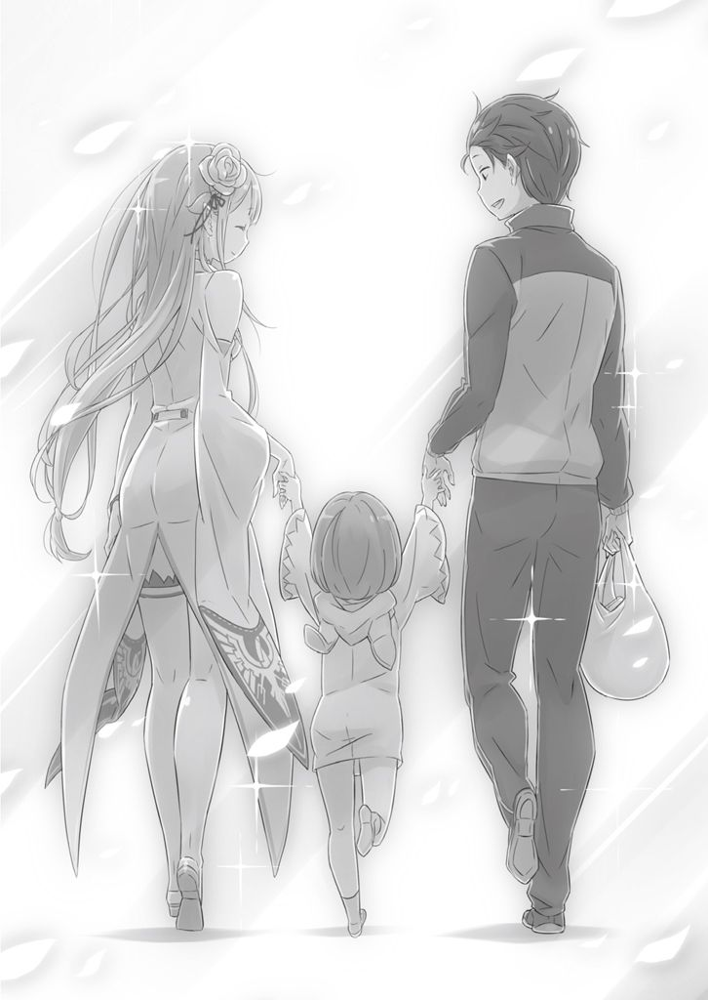
我が子と無事に合流した母親はひとしきり再会を喜んだあと、大したことはしていないと笑うスバルたちに何度もそうお礼を言っていった。
別れ際、見えなくなるまでこちらに手を振っていた童女に手を振り返してやりながら、スバルは隣に立つサテラを見る。親子を見送るその表情は晴れ晴れしいものだった。
「それで？ だいぶ遠回りになっちゃった気がすっけど、そこんとこお姉さん的にはどんなメリットがあったんだと主張なさるんでしょー、か！」
指を鳴らして、スバルは少女のお人好しぶりをそう揶揄してみせる。とはいえ、これは嫌味というよりはからかい半分の物言いだ。スバルを助けるときにあれだけ迂遠な言い訳をしてみせたサテラである。さぞ、聞き応えのある答えがあるものと期待する。
「......簡単よ」
そんな意地悪な魂胆のスバルの前で、サテラはその頬を柔らかにゆるめると、
「これで私たちは気持ちよく、捜し物の続きができるでしょ？」
「............」
「徽章を取り戻せてたって、あの子を放り出してたらきっと後悔したもの。あの子も助けてあげて、捜し物も無事取り戻せる......ね？ それが一番いいでしょ？」
強がりでもなんでもなく、サテラは清々しいぐらいの顔つきでそう言い切る。
そう言われてしまえば、スバルはもうお手上げだ。そして一つ考えを改める。
この少女は損ばかりするお人好しなだけでなく、とんでもなく欲張りな少女なのだ。
「そう、だね。その通りだ。確かにこのファインプレーのおかげで、『小さな女の子が迷子になって不安と寂しさで泣きそうになってるのを見捨ててきたけど、徽章は無事に取り戻して万事めでたしだぜ！』って言わなくて済むもんな！」
「なんだかそれ、すごーく嫌な言い方」
極端なスバルにサテラは唇を曲げ、それから思い出したようにこちらをじと目で睨む。
「それより......どうして、手伝ってくれたの？ スバル、反対してたのに」
「手品を見せびらかしたかった、ってーと嘘になんね。言ったろ？ 君の徽章探しを手伝って、俺は一日一善して天国に行くんだって」
「女の子を助けてあげられたから、それで一善なんじゃないの？」
「正論すぎる切り返し！ いや、ほら、いいことは一日に何回やってもいいじゃん。明日の分の前倒しだよ！ 今週のノルマを先に消化しちゃう腹積もりだよ！」
一日一善の本来の意味合いからずれている気がするが、無理やりに辻褄を合わせるスバル。そんなスバルにサテラは呆気にとられた顔をする。
「スバルって......すごーく、損する性格してるのね」
「他の誰でもなく君にだけは言われたくねぇな！」
そっくりそのまま返してやりたいと声を上げるが、サテラはきょとんとした顔で小首を傾ける。どうやら本気で自覚がないらしい。
「悪い子じゃ、ないのよね......」
「ちょいちょいその年下扱いが気になんな。東洋人が童顔扱いされる展開はよくあるけど、さすがに俺と君ってそこまで歳の差ないと思うぜ？」
ざっと見たところ、スバルはサテラの年齢を十七、八と推測する。早生まれで十七のスバルからすれば、年下の可能性すらあるだろう。
しかし、サテラはそのスバルの物言いにほんの少しだけ紫紺の瞳を細めた。
「その予想、当てにならないと思う。......私、ハーフエルフだから」
「────」
思わず、スバルは言葉を失って黙り込んでしまう。それを見たサテラの双眸に複雑な感情が過った。サテラの瞳に浮かぶのは、諦観と失望が入り混じる不可解なものだ。
「なるほどな、どうりで可愛いと思った。エルフが美人ってのはお約束だもんな」
「......あれ？」
直後のスバルの納得したような頷きに、当てが外れた顔でサテラは目を瞬かせる。
「ん？ どったの？」
「どうしたのっていうか......あの、ほら、私、ハーフエルフ......」
「聞いたよ？」
サテラが何を問題にしているのかイマイチ伝わらず、スバルはそう答えるしかない。しかし、そのスバルの答えを聞いたサテラの反応は劇的だった。
「────ぁ」
かすかに喉を震わせたかと思えば、サテラはスバルからバッと顔をそらして後ろを向く。そして壁際にしゃがみ込んで、銀髪に手をやって頭を抱え込んでしまった。
その奇行にスバルはかける言葉を見失う。
「てい」
「痛っ！ いや、急になにすんの!?」
神出鬼没の灰色小猫がスバルの頬をその肉球でファンシーに殴りつけてきた。
パックはその殴った手で己のヒゲを撫でつけながら「んー」と喉を鳴らす。
「なんとなく、堪え難いむずむず感を形にしたくて」
「そんな理由じゃ殴られた側は納得いかねぇよ。プニプニだったから許すけど」
「ボクも別に怒って叩いたわけじゃないよ。どっちかっていうと、逆だね」
「逆？」と眉根を寄せるスバルにパックは「そう、逆」と頷きで肯定。その真意を問い質すより先に、話を中断させてしまったサテラが戻ってくる。
自分の長い銀髪の先端を指に絡めながら、サテラはスバルを上目に睨みつけた。
「......もう、スバルのオタンコナス」
「オタンコナスってきょうび聞かねぇな。そしてなぜに俺は罵倒されてるの？」
「ふんだ、知らない。それより捜し物の続き、始めなきゃ」
理不尽な待遇を一言で切り捨てられ、スバルは不服顔をする。だが、それもより親しげなサテラの態度の前にすぐ霧散した。サテラの態度の変化の切っ掛けはピンとこないが。
「しっかし、さっきの迷子事件で痛感したけど、この町って捜し物するには広すぎね？」
「ルグニカ王国の王都だもん。一番大きくて、一番人が住んでる場所よ。えっと、住んでる人は確か......三十万人くらいいて、人の出入りも激しい場所なんだから」
スバルの疑問に、サテラはどこか自慢げな表情ですらすらと応じる。
「ほうほう、三十万か。やっぱりけっこう広いな......そして本で仕入れたばっかりみたいな情報と提供の仕方をありがとう」
「むぅ......」と図星を突かれた風な少女はさて置き、スバルは聞かされた答えをもとにルグニカの都市像を思い描く。人口三十万ともなれば、中世風ファンタジー世界の都市人口としてはかなりの規模だ。当然、その数は都市に暮らす人々だけを数えた結果であり、出入りする冒険者や商売人を含めるとさらに膨れ上がるだろう。
道の端で行き交う人々を眺めて、スバルはその多種多様さと密度に息が詰まる。獣人や亜人、人間が入り乱れるこの場所は本当の意味で異人種のサラダボウルだ。
路地裏で小一時間迷ったことも、単なる笑い話と片付けるべきではない。広すぎて、入り組み過ぎて、真面目に大通りへの道を見失ったのだ。
「つまり、今の俺たちにはもう失敗は許されない。すでにだいぶアドバンテージ許してるし、次に迷ったらアウトと思っていい。慎重な選択をしよう」
「慎重な選択......っていうと？」
「ノープランで動き回ってもいい結果はついてこないってこと。たとえば、その徽章を盗まれたときの場所に戻ってみたら、もっと詳しい情報が手に入るかも。見てた人とか、いたりしたりしなかったの？」
「あ......いたりしたり、したかも」
思い当たる節があるのか、サテラが口に手を当てて心当たりを口にする。
サテラによると、スリにあったのは白昼堂々の大通りのど真ん中だったらしい。大胆不敵な犯行であるが、今の通りの混雑を見れば間違った判断ではないだろう。
人が多いということは、それだけ紛れる場所も多いということだ。
「どこらへんで盗まれたのかって思い出せる？」
「ん、と。たぶん、こっちの方......だったと思う」
サテラの案内に従って通りを抜ける。多人種でごった返す表通りの猥雑さは、路地裏の迷宮に負けず劣らず、人から距離感と方向感覚を奪うものだとスバルは体感する。
自分がどこを歩いているのかがわからなくなるような錯覚。知らないはずの場所なのに、一度見たことがある場所を歩いているような不可解な感覚がまとわりついて離れず──。
「いや、これは本当に一回見たことある場所だわ」
サテラに案内された場所を見て、スバルは頬を掻きながら半笑い。
サテラが徽章を盗まれたと案内した通り──それは、スバルが召喚された表通りの一角に他ならなかった。
「ここで途方に暮れて、頭冷やそうとして人気のないとこまんまと入って、チンピラＡＢＣとエンカウント戦闘になったんだっけか」
二時間ほど前の出来事を回想し、スバルは思わぬ偶然もあったものだと感慨深く思う。
ともあれ、事件現場がこの場所であるのなら話は早い。幸い、ここならば声をかける相手の心当たりがあるのだ。
「そんなわけで、俺に任せろと勇ましく宣言してやってきました、果物屋」
店先でくるりと身を回し、スバルが手で指し示すのは大通りに店を構える一軒の果物屋だ。色とりどりの果物が商品棚に陳列されており、その瑞々しさは見ているだけで喉が鳴る。そしてそれらを取り扱う店主といえば、
「......なんだ、客かと思ったらまたお前かよ、一文無し」
とても客商売する立場とは思えないほど冷めきった目で、スバルにそう言い放った。
バンダナを巻いた、筋骨隆々の男性だ。厳つい顔つきに低くドスの利いた声。極めつけは顔の左を縦に走る白い刃の傷跡と、どう見てもカタギの人間ではない。
それが何を間違ったのか、果物屋のカウンターに収まっているのだから驚きだ。
「そう冷たくすんなよ、オッチャン。さっきは色々と親身になってくれたじゃねぇか」
「それはお前がまだ客だと思ってたからだよ。最初から文無しってわかってりゃとっとと追っ払ったに決まってんだろ。今みたいにな」
馴れ馴れしいスバルに対し、店主の態度はどこまでもドライだ。虫でも払うような手つきで遠ざけるアクションをされて、スバルは「おいおい」と肩をすくめる。
「いいのかよ、そんな態度で。さっきの俺と違うことに、気付かないのかい？」
「あにぃ？」
勝ち誇って鼻の穴を膨らませるスバルに店主は困惑顔。その店主に見えるように横に一歩ずれると、スバルは後ろに立っていたサテラを両手で示した。
「どうだ、連れだぜ、連れ！ 途中で無一文が発覚した俺には掌返してくれたけど、こうしてもう一人、お得意様候補を連れてきた今はどうよ！」
「あの、スバル......変に期待してくれてるんだけど、私もお金、持ってないわよ？」
「え、あれ、マジで!? じゃあなに、素寒貧と無一文で大都市歩いてたの!?」
文無し二人を見て店主はため息をつく。
「で？ 無一文が二人になっただけの状況で、なにが言いたかったんだ、兄ちゃん」
「実は捜し物してんだけど、ちょっとお話聞かせてもらいたいなー的な？」
「文無しに付き合ってられねえって皮肉言ってんだよ！ 理解しろ！」
怒鳴り声を浴びせられて、スバルの鼓膜に痛烈なダメージ。
「や、やっぱり悪いんじゃないかしら」
肩を小さくしたサテラも、スバルの袖を引きながら及び腰だ。
確かに品物も買わずに質問だけ、というのはいかにも身勝手なやり口だ。かといって、先立つものがない現実は変わらない。と、この場での情報収集を諦めかけたときだ。
「あら？ お二人は......さっきの？」
ふいに横合いから声をかけられて、スバルとサテラが振り返る。視線の先に立っていたのは茶色の長い髪を揺らすご婦人で、それは二人にも見覚えのある人物だった。なにせ、その女性の手には小さな掌、二人を嬉しそうに見上げる童女が繋がれているのだから。
「奥さんこそ、なんでまたこんなとこに？ ここには心の狭い強面しかいないよ？」
「ふふっ。主人のお店なので、ちょっと立ち寄ったんですよ」
「主人？」
思わぬ返答に顔を見合わせるスバルとサテラ。二人はゆっくりと店の方を振り返り、腕を組んでふんぞり返るスカーフェイスを確認する。
「オッチャン......まさかこの店、この奥さんの旦那さん殺して奪ったのか？」
「神妙な面してなに言いやがる。正真正銘、俺の店で俺の嫁だ！」
振り返り、困った顔で微笑む婦人にスバルは驚愕。線の細い、温和な顔立ちの美人だ。こんなご婦人の主人がこんな強面の男。何かの間違いではないのか。
まさか脅されているのでは、と不安視するスバル。失礼なスバルの横を母親の手から離れた童女が駆け抜け、傷面──父親に駆け寄り、抱き上げられた。
「おー、よしよし、元気だな......と、それよりもお前、この文無し二人と知り合いか？」
「あなた。文無しだなんて、そんな失礼なこと言わないでください」
棘のある店主の物言いに、婦人が眉をつり上げて苦言を申し立てる。それから婦人はスバルたちと童女との関係を説明する。ここまでの経緯を聞いた店主は娘を下ろした。
「それはすまねえ。恩人にずいぶんな口を利いちまった。許してくれ」
「いえ、そんな。私たちがお金を持ってないのは本当のことですから......」
「そうだぜ、オイ！ ちょっと反省してもらわなきゃ困るってもん......あれ、ちょっと、可愛い顔が恐いよ？」
調子に乗りかけるスバルを視線で黙らせたサテラ。すると、サテラに父の腕から下ろされた童女が手を伸ばした。その小さな掌に握られているのは、赤い花を模した飾り物だ。
サテラは息を詰めると、童女と花飾りを交互に見つめて困ったような反応をする。
「もらってあげてください。娘なりにお礼をしたいと思っているみたいなので」
戸惑うサテラの背を婦人が押す。それを聞いたサテラは小さく顎を引いて、童女の指先から花飾りを受け取った。そして、サテラは花飾りを自分の左胸、白いコートの上に留めると、童女に見えやすいように膝を追って視線を合わせる。
「ありがとう。すごーく、嬉しい」
サテラの極上の笑顔に、思わずそれを横目にしていたスバルも見惚れる。童女もその笑みの前に照れたように顔をそらし、そんなサテラに店主は一つ咳払いを入れる。
「娘の恩人だ。礼がしたい。なんでも聞いてくれ」
力強く頷いて、強面の店主が精一杯の友好的な笑顔でそう言ってくれた。
それを聞いたサテラは驚いたあと、今度はスバルを見る。そしてサテラは先の極上の笑顔とは違う、まるで勝ち誇るような笑みを浮かべた。
「ほらね。ちゃんとめぐりめぐって、私たちのためになったじゃない」
そう、数奇な偶然を自分の手柄のように自慢したのだった。
９
──そこは通りを一本外れただけにもかかわらず、ひどく陰鬱な空気の渦巻く場所だった。
静まり返った小道。人の気配が、生き物の気配が遠い。
あれほど多くの人で賑わっていた表通りとそれほど距離があるわけではない。にもかかわらず、あの喧騒がまるで夢の彼方のようだ。
「盗品をさばくなら貧民街って話だったけど......」
呟きながら、スバルは表通りに通じる小道から噂の貧民街に続く路地へ顔を突っ込む。
「空気と雰囲気と、あとたぶん住んでる人間の性格も悪い。ホントに行くの？」
「ここだろうってスバルが言い出したんじゃない。それに、さっきのお店のご主人だってここだろうって言ってたし......」
「そのあとに、できれば諦めた方がいいって言ってたのも忘れない方がいいよ？」
果物屋でのやり取りを反芻するスバルは渋い顔をする。
果物屋での偶然の再会と窮地からの逆転を経て約三十分──二人は今、王都の盗品の多くが持ち込まれると噂の貧民街の入口へと辿り着いていた。
愛娘の恩人とあって、強面の主人はスバルたちに親身になって話を聞いてくれた。結果、貧民街の情報を得ることはできたものの、二の足を踏んでいるところだ。
「今さらだけど、人呼んだ方が確実じゃないか？ 警察......こっちだと衛兵か？ そういう人たちに頼んで捜索してもらうとか。人海戦術が使えれば一発だぞ？」
「ダメなの」
しかし、スバルの提案はぴしゃりと切って捨てられる。その断言ぶりにスバルは目を白黒させる。
「ごめんなさい。でも、ダメなの。こんな小さな盗難に衛兵が動いてくれると思えないし......そもそも、衛兵には頼れない事情があるから」
きゅっと唇を結び、サテラは「理由は言えないけど」と縋るようにスバルを見た。
事情を聞かれたくないのだろうな、とその視線にスバルは軽く手を上げて応じる。
「さて、それじゃどうする？ 二人で人海戦術する？」
「二人と一匹、だよ」
気落ちさせないよう、あえて軽い調子で尋ねるスバルに小猫が合わせる。
ふいにサテラの肩に出現したパックは、その手で顔を洗いながら二人を見回し、
「とはいえ、無駄話をしてる時間はそろそろないよ。二人と一匹で人海戦術したくても、ボクもあと一時間ぐらいで時間切れだから」
空を見上げるパックにつられて上を見れば、建物の切れ間から覗く空の大部分に橙色が差しているのに気付く。貧民街の雰囲気が薄暗いのも、湿って饐えた臭いばかりが原因ではない。日没が近づいている。そしてそれはパックの制限時間も意味する。
「進むにしても戻るにしても、決断は早めにね」
「人海戦術はわからないけど、進むに決まってるでしょ。どの道、今を逃して手の届かないところにいかれちゃうわけにいかないもの」
パックの求めにそう応じて、それから彼女はスバルに向き直る。
「じゃあ、行くけど......この先の路地は今まで以上に警戒して。荒事慣れしてる人たちとかが住んでる場所だろうし、もし恐いならここで待っててくれてもいいから」
「ここで待機とか俺どんだけチキンだよ！ 行くよ！ 背後霊のように密着して！」
「前に出る選択肢はないんだ。その方がすごーく助かるけど」
勢いのある逃げ腰発言に、サテラがもう何度目になるかわからないため息をこぼす。
出会ってから、サテラの表情を曇らせてばかりだなとスバルは思う。たまに微笑んでみせてくれるのも、スバル以外の要因ばかりだ。マイナス感情の発露でこれだけ可愛いのだから、スバルの方に笑いかけてくれたら最高だろうに。
「うっし、ここいらで一つ、そろそろいいとこ見せましょうかね」
「急にどうしたの？ そんな風に鼻息荒くして」
「決意のシーンが台無しになる表現ありがとう！」
いくらか気勢を折られつつも、スバルは前を行く背中に遅れないように足を速めた。
目的に向かって進む少女に置いていかれないよう、今は空の手を大きく振りながら。
10
さて、再開された捜索は次のステージである貧民街へ突入し、相変わらずの難航の兆しを見せる──かと思いきや、ここにきて意外な人物が役立つこととなった。
「誰？ そう、俺！ なぜか不自然なほど貧民街の人々が優しい。なんの確変が起こったんだ......まさか、このタイミングで俺の魅力値に調整入ったか！ 幼稚園以来の！」
小さい頃のスバルはそれはそれは可愛らしい容貌で、髪が長かったこともあってよく女の子に間違えられたものだ。──それが十余年も経つとこうなるのだから残酷だ。
「どっかさっきまでと変わったとこあるかな？ 俺の顔、なんかついてる？」
「目つきの悪い目と短い耳と低い鼻がついてるけど......」
「目つきと低いって注釈いらなかったよね!?」
うなだれるスバルに、サテラは「うーん」と悩ましげに唇に指を当てると、
「たぶん、身なりが原因なのかも。土埃で汚れてるし、ちょっと血の跡もついてるもの。ここの人たちも苦労してるみたいだから、哀れなスバルを見るに見かねてじゃ......」
「今一番哀れなほど心抉られてるけどね！ でも納得しましたよチキショウ！」
同病相憐れむというやつだ。貧民街でのスバル好感度が思わぬ形で高いのは収穫だが、逆にサテラ好感度は思いのほか低い。その原因もまた、彼女の身なりにあるのだろう。
「あのチンピラたちも思ったみたいだけど、格好が綺麗でビシッと決まってんもんなぁ」
「やっぱり、目立ってるかな......？」
自分の羽織る白いコートの袖を伸ばし、彼女は不安げにスバルにそう聞いてくる。が、どうやら服装だけを問題視している彼女は自身の整った容姿には無頓着らしい。
「あの、ちょっと聞きたいことがあるんですけど......」
「あぁ？ 綺麗なおべべ着てこんなとこうろついてんじゃねえよ」
今もまた、声かけをすげなく切り捨てられるサテラ。その成功率の低さは容姿×服装で二倍どころか二乗だ。かといって、薄汚れた格好を勧めるわけにもいかず、
「せめてそのコート脱ぐだけでも違うかもしんないけど......」
「......うん、わかってるんだけど」
両手でコートの肩を掴むサテラだったが、コートを脱ぎ捨てようとはしない。その態度に不可解なものを感じながらも、スバルはあえて問い質しはしなかった。
俯くサテラの手先が、左胸の赤い花飾りに落ちつかなげに触れる。その指先の感触に安堵を得る様子がどこか微笑ましく、スバルはかえってやる気をみなぎらせる。
彼女の手が及ばない場面で、スバルの小汚さが役立つのなら願ったり叶ったりだ。路地裏でチンピラに袋叩きにされた甲斐もあるというものである。
「まぁ、それならそれで俺に任せてくれりゃいいさ。それより、俺の功績で徐々に追い詰めつつある犯人の行方を追おう。俺の、功績で、追い詰めつつある、犯人の、行方を！」
「役に立ったのが嬉しいのはわかるけど、力いっぱい強調するのすごーく格好悪い」
一音ごとにポーズを決めたのに、手柄自慢する小者みたいになってしまった。
見直しかけて損した、という顔のサテラと苦笑いするスバル。ほんの二時間ばかりですっかりお馴染みになってしまったやり取り。ただ、その終わりが今回は違う。
「ゴメン、ボクもう限界だ」
そう言って、パックがサテラの首に弱々しくもたれかかる。その灰色の毛並みはぼんやりと淡い光を帯び、今にも消えてしまいそうに像がぼやけていた。
「なんか死にそうな消え方するんだな」
「一人娘を目つきの悪い男から守ろうと無理しちゃったからね。限界まで体を酷使したから、消えるときは霧散するよ、ボク」
「なんてこった。よし、お前が消えたあとは俺に任せとけ。危ない男なんか近づけねぇ」
「それ、ボクが消える前に君を消していいってこと？」
「よくねぇよ!?」
自分の体を抱いて下がるスバルに、パックは「冗談だよ」と小さく噴き出す。それからパックがサテラに目配せすると、彼女は自分の胸の内から緑に輝く結晶を取り出した。
「無理させてごめんね、パック。あとは頑張るから、ゆっくり休んで」
サテラの掌の上で、緑の結晶は淡い光を放っている。宝石と呼ぶにはニュアンスが少し異なる。スバルの知識だと、クリスタルと呼ぶのが一番しっくりくるだろうか。
パックはサテラの肩から腕を伝ってクリスタルへ辿り着き、小さな体を思い切りに伸ばしてそれを抱きしめる。そして、最後にサテラを振り返ると、
「わかってると思うけど、くれぐれも無茶しないように。いざとなったらオドを使ってでもボクを呼び出すんだよ」
「わかってます。子どもじゃないんだから、自分のことぐらいちゃんとできるもの」
「どうかなー。ボクの娘はそのあたりちょっと怪しいからね。頼んだよ、スバル」
親が子を見る慈愛の眼差し。それを向けられるサテラは照れつつも不満げだ。その流れで自身に水を向けられて、スバルは力強く己の胸を叩く。
「オーライ、任せろ。俺のシックスセンスに期待してな。危険が危ないデンジャー！ って判断したら即引き返すぜ」
「なんか半分くらいなに言ってるのかわかんないけど、お願いね。──それじゃあ、おやすみなさい。気をつけて」
最後にサテラを一瞥し、今度こそパックの姿が世界から消失する。
パックの小さな体は光の粒子となって世界に溶けるように消えていった。喋る猫、という部分以外で初めて精霊らしい幻想を目の当たりにして、知らず知らずの内にスバルの胸中に感動めいた情動がわき上がってくる。
スバルがひそかに感動する傍ら、サテラは掌のクリスタルを大切そうに撫でると、しっかりと己の懐の中にしまい込んだ。
話の流れ的に、今はパックの精神体みたいなものがその中にいるのだろう。
「二人きりになるけど......変なこと考えちゃダメだからね。魔法は使えるんだから」
そんなスバルに対し、先のパックの発言を真に受けたようにサテラの警戒。
「おいおい、女の子と二人きりなんて小学生以来のシチュエーションだ。とてもじゃねぇけど何もできねぇよ。これまでの俺の人間力を見てなかったのか？」
「なんかすごーくしょうもないのにすごーく説得力ある。......うん、いいわ。進みましょう。ただし、パックがいないから今まで以上に慎重にね」
胸を張って意気地なしなスバルに毒気を抜かれたのか、サテラは羽織るローブの前を締め直すと前へ出る。
「私が前衛で、スバルが後ろの警戒。何かあったらすぐに私を呼んで。自分でなんとかしようとか思っちゃダメよ。別にスバルを傷付けたくないけど......弱いんだし」
「その前置きしちゃうから憎めねぇんだよなぁ......」
突き放すつもりがあるのなら、「弱いんだし」の前の部分は不要だ。
本音が隠せないあたり、やはり彼女は根が甘い。とろけそうなほど。
物言いたげな顔のサテラを促して、二人きりになっての捜索を再開する。
といっても、やることは特に変わらない。貧民街の住人を見つけては、お尋ね者の特徴を伝えて心当たりがないか聞いて回る地道な聞き込み。
聞き役のスバルも数をこなした分だけこなれてきて、テンポもいい感じになってくる。
「ひょっとして、フェルトの奴かもしれないな。金髪のはしっこい小娘だろ？」
有力情報にぶつかったのは、二人きりの聞き込みを始めて小一時間の頃だった。
相手は馴れ馴れしくスバルが「よう、兄弟。景気はどうよ」と声をかけた男だ。
「もしフェルトの奴なら、盗んだもんは盗品蔵の中だろうさ。札付けてその蔵に預けて、あとでまとめて蔵主の爺さんが余所の市場でさばいてくんのさ」
「変なシステムだな......その蔵主って奴がまとめて持ち逃げするとか心配しねぇの？」
「それをしないって信用があるから蔵主なんだよ。ただまあ、盗まれたもんだって言っても『はいそうですか』と返しちゃくれんだろう。うまく交渉して買い戻しな」
盗まれた方が間抜けなんだから、とそれが当たり前のように男は笑った。
件の盗品蔵の場所は聞き出せたので、程なく目的地には辿り着けるだろう。
ただし、代わりに浮上するのが別の問題。即ち、二人して無一文の現実だ。
「買い取りって言ってもな。どうする？ こっちに弱味がある以上、かなり吹っ掛けられる展開の臭いがぷんぷんするけど」
「盗まれた物を返してもらうのに、どうしてお金払わなきゃいけないのかしら......」
問題が資金難の方向へ傾くと、にわかに困った顔をし出したのはサテラだ。
サテラの呟きは正論すぎるほど正論だが、それが相手に通じると思うのは虫が良すぎる。穏便に、しかも確実に済ませるには男の助言に従うのが賢明だろう。とはいえ、
「またもや今さらな質問だけど、その盗まれた徽章って見るからに高そうだったりする？ 吹っ掛けられるにしても、相場がわからないことには交渉以前の問題だぞ」
「......真ん中に小さいけど、宝石が入ってるの。私もお金でどのくらいの価値になるのかわからないけど、安いものじゃないのは確かだと思う」
「宝石かぁ......そら厄介だ」
知識がない輩であっても、一発で高価な代物とわかる便利アイテムの宝石。イミテーションのような模造品を作る技術がこの世界にあるとは思えないので、宝石に見えるものは全て宝石で間違いあるまい。つまり、自ずと高値がつくことになる。
楽観できる要素が何もない一方で、スバルはサテラの発言に違和感を覚えた。自分の持ち物である徽章、その価値がわからないとサテラは言ったのだ。
貰い物の可能性もあるが、多少、引っかかりを覚えなくもない。
「とりあえず、盗品蔵ってとこに行ってから考えよう。こっちの交渉次第じゃマシな値段で譲ってもらえるかもしれねぇし......」
最悪の場合、スバルにとっては痛手だが、資金をどうにかできる手段はある。その最終手段についてはサテラに直前まで知らせたくない。
あーだこーだと徽章の返還について押し問答して、まとまらないまま歩くこと十分。
──盗品蔵、と呼ばれている建物の前に着き、二人は顔を見合わせていた。
「なんか思った以上にでかいな。盗人猛々しいにもほどがあんぞ」
「小屋じゃなくて蔵、って呼び方の理由がわかるわね。この中、全部が盗んだものばっかりだったら......いくらなんでも救えないけど」
もちろん、定期的に処分しているのだから盗品でぎっしりということはないだろうが。
盗品蔵はその野卑な俗称に見合わぬ威容でどっしり構えている。平屋だが、建物の坪数はちょっとした集合住宅並みだ。高い防壁を背にして、貧民街の最奥に居を構えている。
「あそこに見える高い壁ってのは......」
「王都の防壁だと思う。いつの間にか、王都の真ん中から端っこまできてたみたい」
サテラの物言いに、スバルはぼんやりと頭の中に王都の地図を思い浮かべる。
おそらく、四方をこの手の防壁に覆われた真四角の立地なのだ。その内側、中心か最北のどちらかに城があり、そこから離れた位置にこの貧民街が位置している。
捜索が始まって三、四時間が経過していることを考えると、王都の広さはスバルの想定よりもう少しばかり広いようだ。
「さて、噂通りなら中に盗品まとめてる蔵主ってのがいると思うけど......こっちの立場としてはどんな感じで行く感じ？」
「正直に行くわよ。盗まれたものがあるから、中を探して見つけたら返してって」
その正論は通らないと主張したのだが、サテラは聞く耳を持ってくれない。
基本的に根が真っ直ぐすぎるのだ。曲がったことを、曲がったままにしておけない性質。そんなサテラだからこそ、あの場面でスバルを助けてくれたのだといえるのだが。
「あー、わかった。じゃあ、ここは俺に任せてくれ」
こじれる可能性があまりに高いものだから、仕方なくスバルは自分から申し出る。
最後の手段──出番が早すぎて切り札っぽくないが、切るタイミングを見失って事態がややこしくなるのも問題だ。こういう決断にスバルは迷わない。
スバルの申し出にきょとんとした顔をするのはサテラの方だ。その素の表情が可愛いなと思いつつ、スバルはすぐにサテラが口にするだろう懸念への言い訳を紡ごうと──、
「わかった。スバルに任せてみる」
「そりゃ簡単に頷けないと思うよ。ここまでの俺が君の信頼を勝ち取れてると思うほど馬鹿じゃないから。でも、考えがあるから信じてって......えええ!?」
「な、なんでそんなに驚いてるの？」
「だって今の流れは完全に一回もめるパターンじゃん？『ここまで役立たずだった二酸化炭素発生装置に任せる？ へそで茶が沸いて鼻が大爆笑しちゃう。犬の方がずっとマシだわ』的な発言に俺が傷付きつつも決意を新たにする展開を夢想してたぜ!?」
「そんなひどいこと私言わないわよっ」
誇大被害妄想を垂れ流すスバルにサテラはご立腹だ。しかし、サテラは一度咳払いするとそのアメジストの双眸でスバルをジッと見据える。
「確かにスバルに足を引っ張られてないって言ったら嘘になっちゃう。真面目な顔してるかと思ったら、すぐにがっくりきちゃうこと言い出したりするし」
「がっくりってきょうび聞かねぇな」
茶々入れつつも、反論できない評価にスバルは肩を落とすしかない。
「だけど、そんな風に悪ふざけもするけど、あの女の子を泣かせないで済んだのはスバルのおかげだし、考えなしだとも嘘をつく人だとも思ってない」
ここまでの、やや回り道の多かった道のりを振り返り、「だから」と彼女は息を継ぎ、
「スバルを信じてみる。......うまくいったら儲けものぐらいの気持ちで」
「そこは後半を『私のために頑張って』ぐらい上目遣いで言った方がやる気出るぜ？」
「そんな無理してなんて言えないもの。でも、頑張って」
あらゆる意味で、嘘がつけない少女なのだ。
「──ん、頑張る」
スバルは破顔してサテラの言葉に答えて、盗品蔵の入口へ向かう。
サテラに語れなかった切り札──現代世界から持ち込んだスバルにとっての唯一と呼べる財産。この世界に存在しないだろうそれならば、物々交換が成立する可能性があった。
スバルにとっては痛手となるが、この世界で携帯電話以上の価値がサテラの盗まれた徽章にあるとは考え難い。この世界ではこんな機会でしか切れないカードだった。
「えーっと、どなたかご在宅ですかー......って、開いてるし」
饐えた香りの漂う盗品蔵の入口。その木造の扉をノックしようとして、スバルはわずかな隙間から扉が施錠されていない事実に気付いた。ちらと中を覗くと、やたらと暗い。
「街灯ないとこんな不便なんだな......盗品蔵の中も、建物の存在理由考えたら当たり前だけど、後ろ暗さに比例して暗いな」
頭を突っ込んで中を探るが、月明かりも届かない貧民街の最奥地の闇は真面目に一寸先も見えない。スバルは中に入る覚悟を固め、その前にとサテラを振り返り、
「返事がないけど、俺が先に入るから君は外見張っててもらっていい？」
「大丈夫？ 私が中に入った方がいいんじゃ......」
「万が一、奇襲でもされたときに君が真っ先にやられると全滅確定。俺がやられる分には回復も反撃も君なら自由。理に適った役割分担。頼まれてお願いプリーズ」
スバルの言葉に考え込む素振りをするサテラ。サテラはしばしの黙考のあとで懐に手を差し入れると、白い結晶を取り出して壁にぶつける。にわかに、白い光が溢れ始めた。
「せめて灯りは持っておいて。誰もいなくても、誰かいても呼んでね」
「わかってる。パックにも言われたし、慎重にだろ。これ、便利な石だね」
「ラグマイト鉱石なんてどこにでもあるのに、すごーく物知らずよね、スバルって」
呆れを含んだ口調で言って、彼女はそのラグマイト鉱石をスバルに手渡す。ほのかに熱を持つ結晶はぼんやり輝き、蝋燭程度の光源は確保してくれていた。
「おけ。じゃ、ちょっと見てくる。帰りは遅くならないけど、先にご飯食べてていいよ」
「バカなこと言ってないの。気をつけてね」
「ういうい。サテラも、俺が声かけるまで入ったらダメだぜ？」
中に踏み込むための勇気が、わずかに背を押して彼女の名前をスバルに呼ばせた。
ここまで、気恥ずかしさが足踏みさせて声に出せなかったサテラの名前。さらっとそれを音にできたことに拳を握り、ちらとサテラの顔をうかがう。
「......どったの？」
こちらの想像と違い、サテラはスバルの呼びかけに目を丸くして硬直していた。予想のいずれとも違う反応にスバルが首を傾げると、少し遅れて彼女は首を横に振る。
「ううん......なんでもないの。徽章を取り戻せたら、ちゃんと謝るから」
「何を謝ってくれる気なのかわかんないけど、ごめんなさいよりありがとうの方が嬉しいね。さらに笑顔がついてくるなら最高だ」
「バカ」
短い二文字で送り出してくれるサテラの口元に、微笑が浮かぶのを目に焼き付けた。スバルのつまらない冗談でも、こうして彼女を笑わせてやることができる。
万事、完璧に交渉をこなした暁には、その笑みを明るい場所でもっと見たいと思う。
「さって、鬼が出るか蛇が出るか。ファンタジーだとどっちも冗談じゃ済まねぇな」
軽口を叩きつつ、ラグマイトを片手に恐る恐る中へ足を踏み入れる。
薄明かりの中、入口をくぐった目の前にあったのはカウンターだ。もともと宿場かなにかだったのだろう。建物の一階は酒場だったスペースをそのまま利用しているらしい。
受付の役割を果たしているらしきカウンターの上、そしてその向こうに所狭しと様々な物品が並べられているのがわかった。
小箱や壺、刀剣の類や安っぽい貴金属までそれこそ多種多様にある。これらが全部、盗品であるのだと、それぞれに小さな木札がついていることから判断できた。
「木札回収して衛兵に渡したら、なんか一斉検挙とかできそうなシステムだな」
もっとも、この手の生業は国の腐敗した暗部かなにかと裏で繋がっているのがお約束だ。ここから売り払われた盗品の行き着く先も疑わしいものである。
そんなことを考えて、スバルは目的のものを捜して奥へ──そんなときだ。
「ん？」
ふいに靴裏に生じた違和感にスバルは立ち止まった。
何か固いものを踏んだ、というような違和感ではない。むしろそれとは逆で、踏んだ地面に足を引かれるような──粘着質な何かを靴裏に感じたのだ。
足を持ち上げ、スニーカーの裏に指先で触れると、そこにはべったりと液体が付着していた。妙に粘っこいそれは指先で軽く伸び、本能的な不快感を刺激する。
「なんだ、これ」
指に鼻を近づけて臭いを嗅ぐが、そもそも屋内の空気がよどんでいるせいではっきりと嗅ぎ取れない。ただ、当たり前だが舌で確かめる勇気もない。
嫌な感触のそれを壁になすりつけて、スバルは不快感に促されるようにラグマイト鉱石を前へ。そうして進もうとした先に、スバルは原因を見つける。
「......あ？」
思わず間抜けな声が出て、スバルはようやく『それ』を認識した。
淡い光の範囲、最初に見えたのは地面にだらしなく転がる『腕』だ。指先が何かを求めるように開かれたそれは、不思議なことに肘から繋がるべき体が存在しない。
その繋がる先を求めるように光を動かし、さらに奥に投げ出された足が見つかる。足はちゃんと胴体に通じており、胴体には他のあるべきパーツも付随していた。
──首を大きく切り裂かれ、片腕を失った大柄な老人の死体が。
「ひ」
その死体に気付いた瞬間、スバルの口からは意味のない空気が漏れていた。
このとき、スバルの脳裏は完全な空白に支配された。思考は真白の彼方へ吹き飛び、手足が凍りついたように動かなくなる。ただひたすらに、無為な空白。そして、
「──ああ、見つけてしまったのね。それじゃ仕方ない。ええ、仕方ないのよ」
女、の声だったと思う。
低く冷淡で、どことなく愉しげな女の声がした気がした。
「ぐあ──っ！」
振り返る暇はなかった。
声がした方に顔を向けようとした瞬間、スバルの体は衝撃に吹き飛ばされる。壁に背中から叩きつけられ、ラグマイトが手から弾かれて視界が闇に染まった。
だが、スバルの意識はそんなことには向いていない。彼の意識を支配したのは、
「ぐぅぅぅ......あ、熱ッ」
──全身を支配する、圧倒的な『熱』がナツキ・スバルを焼き焦がしていた。
──これは本気でヤバい。
固い地べたの感触を顔面に味わい、スバルは自分がうつ伏せに倒れたのだと気付いた。
全身に力が入らず、手先の感覚はすでにない。ただ、『熱』だけが全身を支配していた。
せき込み、喉からこみ上げる命の源を思う様に吐き出す。ごぼごぼと、口の端に血泡が浮かぶほどの吐血。ぼんやりとした視界に、真っ赤に染まった地面が見える。
──ああ、これ全部、俺の血かよ。
体の中の血が全て溢れてしまったような錯覚に陥りながら、体を焼き尽くす『熱』の原因を求めて震える手を伸ばし、腹部の裂け目を指先が捉えて納得した。
どうりで熱いと感じるわけだ。『痛み』を『熱』と錯覚していたらしい。鋭い裂傷は胴体をほぼ真っ二つにして、皮一枚でかろうじて繋がっている状態だ。
つまるところ、どうやら人生の『詰み』というやつに直面したらしい。
理解した瞬間に、急速に意識が遠のいて行く。
さっきまでのたうち回るのを強要していた『熱』すらどこかへ消え去り、不快な血の感触も内臓に触れる手の感覚も、全ては遠ざかる意識の付き添いに連れていかれる。
置いてけぼりにされるのは、『魂』の同行を拒否された肉体だけだ。
眼前、鮮血の絨毯を敷き詰めた床を、黒い靴が波紋を生み出しながら踏みつける。
誰かがいるのだ。そしてその誰かがおそらく、自分を殺したのだろう。
なのに、その顔を拝んでやろうとは思わなかった。もう、そんなことはどうでもいい。
──ただ願ったのは、彼女が無事でありますようにということだけだった。
「──バル？」
鈴の音のような声が聞こえた気がする。その声を聞くことが、その声を聞けることが、なにより救いだったことを覚えている。だから──、
「──っ！」
短い悲鳴が上がって、血の絨毯がまた誰かを迎え入れる。
倒れ込んだ体はすぐ傍らに。そしてそこにはだらしなく伸びた自分の腕があった。
力なく落ちたその白い手と、血塗れの自分の手がかすかに絡む。
かすかに動いた指先が、自分の手を握り返したような気がした。
「......っていろ」
遠ざかる意識の首根っこを掴み、無理やりに振り向かせて時間を稼ぐ。
『痛み』も『熱』も全ては遠く、無駄な足掻きの負け犬の遠吠えだ。
だが、それでも──、
「俺が、必ず──」
──お前を、救ってみせる。
次の瞬間にナツキ・スバルは命を落とした。
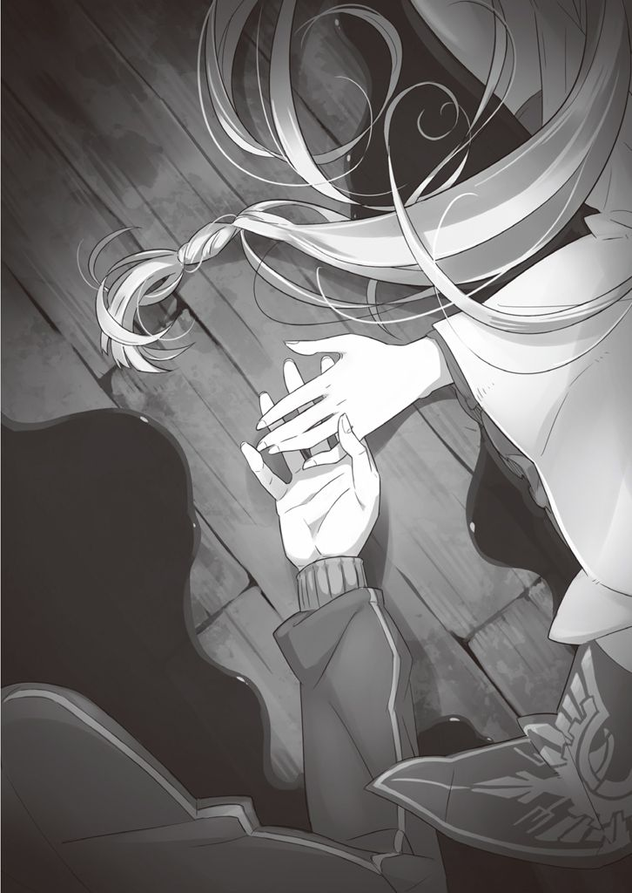
第二章 『遅すぎる抗い』
１
「──どうしたよ、兄ちゃん。急に呆けた面して」
「は──？」
厳つい顔、白い刀傷の目立つ男に声をかけられ、思わず間抜けな反応が出てしまう。
こちらの応答に男はその傷跡を盛大に歪める。
「だーかーら、けっきょくどうすんだよ。リンガ、買うのか買わないのか」
「は──？」
「リンガだよ！ 食いたいんだろ？ 自分でそう話しかけてきといて、急に目がイっちまうんだからビビったぜ。......で、どうすんだよ」
筋骨隆々のスカーフェイスが、その掌にちょこんと可愛らしい赤い果実を乗せている。突き出されるリンゴに酷似した果物。それと中年の顔を見比べて、
「いや、だから俺、天魔不滅の一文無しだって」
「っだよ！ じゃあ、ただの冷やかしじゃねえか。なら行った行った！ こっちゃ商売してんだ。冷やかしにゃ付き合ってられん」
おざなりな手振りでその場からどかされて、よろよろと店の横手へ抜ける。
そして彼──ナツキ・スバルはあたりを見回しながら、
「え？ え？ ──どゆこと？」
疑問と当惑に、誰へ向けたものでもない問いを吐き出すのが精いっぱいだった。
２
大通りは相変わらず人でごった返しており、たまにトカゲの馬車が通りかかる以外では常に道幅いっぱいに歩行者が広がっている。
まだ日差しの明るい時間だ。気温は高いというほどでもないが、目の前を通り過ぎる人狼っぽい人種の毛皮などを見ると、「うわぁ、暑そう」という感想がぼんやり浮かぶ。
「とか、そんなおのぼりさんみたいなほのぼの感想してる場合じゃねぇぞ!?」
頭を抱えて腰をツイスト。その場で渾身の苦悩のポーズを披露するスバルに、格好の物珍しさもあって周囲から好奇の視線が集中する。だが、今はそれを気にする余裕もない。
「だって......さっきまで夜だった、よな？」
日が高い、のだ。少なくとも、スバルの認識では夜を迎えていたはずだったのに。
夜から昼への一瞬の逆転──それはスバルにとって、異世界への召喚時のことを思い出させた。ただ、そのときと今回では明確に違う条件がある。
「腹の傷......ねぇな」
ジャージの裾をまくって、スバルは腹部を確認する。
大型の刃物と思しき凶器に切り裂かれ、死を免れないほど大量に出血したはずなのだ。だが、腹部には傷跡どころか血の痕跡も見つからない。
それどころか、愛用のジャージには土埃や泥による汚れも見当たらなかった。
手の中のコンビニ袋は健在で、ズボンのポッケにはそれぞれ携帯電話と財布が収まっている状況なのも変わらない。あらゆる意味で万全の初期状態。
──頭がおかしくなりそうだった。
記憶の混濁を自覚して、スバルは意識を失う寸前のことを懸命に思い出す。
そう、腹を切り裂かれて殺されかけたのだ。女の声、がしていたと思う。
盗品蔵で死体を見つけて、あの死体の人物を殺したと思しき相手にスバル自身も襲われた。そして死に瀕する状況下で──
「......そうだ、サテラ！」
スバルを案じて盗品蔵に入ってしまったサテラもまた、凶刃の餌食となったのだ。
思い至った瞬間、スバルの臓腑が絞り上げられるような痛みを感じる。それは自身を傷付けられたことを意識したときより、ずっと厳しく己の罪を自覚させた。
「サテラを頼むって......言われたんじゃねぇのかよ、俺」
消える寸前、スバルを見てそう告げたパックの姿を思い出す。
小猫と交わした約束、それは決して軽い言葉ではなかった。それなのにスバルは、再三の忠告にもかかわらず、その機を単なる見落としによって逃した。
サテラの言いつけ──何かあれば声を上げること。そんな指示すら怠った。
「馬鹿か......いや、馬鹿だ俺は。うなだれてる暇なんざどこにあんだよ。とにかく、サテラとパックを探さないと......」
二人とも死んでいるかもしれない。そんな想像をスバルは頭を振って追い払う。
なんの取り柄もなくて、欠片も役に立たない。言ってみればモブキャラか賑やかし担当であるところの自分ですら命を拾っているのだ。
それならば、あの、魔法が使えて、お人好しの世話焼きで、素直じゃないけどやたら真っ直ぐな美少女と、飄々と掴みどころのない変わり者の精霊が死んだとは思えない。
──いや、死んでいてほしくないのだ。
「とにかく、今は盗品蔵へいかないと......」
あの場所が意識の終着点ならば、ヒントはそこにある気がする。
思い立ったが即行動だ。ここでもスバルの決断力の早さが光る。元の世界では「今日は学校行くのやめよう」と諦めの決断に用いられることがもっぱらだったが、今のスバルにとっては迷いを断ち切るという意味で大きな意味を持つ。
だが、スバルのそんな勢い込んだ決断は──、
「よお、兄ちゃん。少し俺らと遊んで行こうや」
路地を塞ぐように立ちはだかる、三人の男によって邪魔される憂き目を見せた。
声がした方を見て、スバルは唖然として思わず口を開けてしまう。
「おいおい、呆けた面してどうしたよ」
「状況がわかってないんだろ。教えてやったらいいんじゃないか」
と、三人の男たちが下品な笑みを浮かべてスバルを嘲笑する。その男たちの姿をまじまじと眺めて、スバルはまるで滑稽な芝居を見せられているような心境でいた。
男の数は三人。お世辞にも整っているといえない身なりに、育ちと性格の悪さがにじみ出たような典型的なチンピラ面。
その全てに対し、スバルはどうしようもない見覚えがあった。
「お前ら......ひょっとして、俺の知らないところで頭でも打った？」
つい数時間前に、スバルがサテラたちと出会う切っ掛けを作った輩だったのだから。
モブ的な立ち位置には間違いないだろうが、いくらなんでも似た顔の三人組が揃って同じ犯行に及んでいるとは考え難い。
「ってことは、俺が一人と見てさっきの仕返し......か？ 弱いとこ狙いたくなる気持ちはわかるけど、タイミングの悪さが鬼がかってんぞ、お前ら......」
「なに言ってんだ、お前。頭おかしいんじゃねえのか」
穏便に話し合いでまとめたいスバルを男たちは嘲弄。その態度にさすがのスバルもカチンとくるものがあった。穏便に済ませよう、というのはあくまで状況的に急いでいるからであって、本来のスバルはかなり短気な人間だ。
「いいさ、兄ちゃん。とりあえず持ち物全部置いてけ。それで勘弁してやっから」
「ああ、はいはい。持ち物全部ね。急いでっから、それでいいや、ホント」
「あと犬の真似な！ 四つん這いで犬の真似して、助けてくださいーって鳴けよ」
「調子乗んなや、コラァ──ッ！」
男たちからあまりに調子こいた発言が飛び出したせいで、早くも堪忍袋の緒が千切れる。
突然にぶち切れたスバルの動きに男たちが動揺。その呆然とする男たちの中、スバルは痩せぎすの男に狙いを定める。さっきの争いで敗因になった、ナイフ所持の男だ。
「まずはお前だ！ 命の大事さを知らない奴なんざくたばれ！」
渾身の掌底で男の顎を跳ね上げ、そのままがら空きの胴体に拳を打ち込む。男は壁に叩きつけられて轟沈。スバルは即座に次なる男へ足払いをかける。
とっさの事態に反応できず、蹴りを受けた男が転倒する。その隙にスバルは最後の一人に突貫。低空からのタックルで男の体を担ぎ、体ごと壁に突っ込む。背中を打って呻く男へ蹴りをぶち込んでトドメ。スバルは振り返り、転んだ男に手招きして挑発する。
「さあ、タイマンだ！ 正々堂々とかかってこいよ！」
「こんだけ不意打ちしといて正々堂々もクソもあるか！ クソガキがぁ！」
アドレナリンだばだば状態で強気のスバルに、怒りで顔を真っ赤にした男が掴みかかってくる。襟を掴んだ男は勢いのままにスバルを壁へ押し込もうとするが、
「超絶、甘ぇ！」
肩を掴む男の両手首を握りしめて、スバルは男の腕力を上回る腕力で引き剥がした。
男の顔に明らかな動揺が走るのを見て、スバルはその目つきの悪い顔を凶悪に歪める。
「不登校児のあり余った時間なめんな。日々、特に理由もなく木刀振って鍛えた俺の握力は七十キロオーバーだ。ベンチプレスも八十キロまでならいけんだ、ぞ！」
手首を握り潰される痛みに男が絶叫。姿勢が崩れた瞬間にスバルの膝が男を打つ。悶絶するチンピラ。その背後に素早く回り込んだスバルは相手の腰に手を回し、
「死んでも恨むな。いっぺんやってみたかった、地べた上の裏投げっ！」
バックドロップの要領で相手を持ち上げ、その途中でブン投げる。男はなすすべもなく壁に頭からぶつかり、地面に落ちて身じろぎ一つしなくなった。
男二人の沈黙を確認し、スバルは最後に一番最初に仕留めたナイフ男の下へ。
比較的ダメージの少ないナイフ男は脂汗を浮かべながら、スバルの接近にとっさに懐のナイフを抜こうとする。抜こうとしたのでスバルは容赦なく顔面を蹴った。轟沈。
「──し、楽勝！ この世に悪の栄えた試しなし！」
ガッツポーズを決めて、一人その場で勝利を祝うナツキ・スバル。
男たち三人が死んでいないことだけ確認し、スバルはそそくさと路地をあとにする。
「状況はなんにも変わってねぇけどな。とにかく、盗品蔵に急がないと」
通りから無傷で出てきたスバルを見て、微妙に「おお」とか通行人から予想外っぽい声が聞こえたのが気になるが、追剥ぎに気付いたんなら通報しろと説教したい。
もちろん、時間惜しさに今は小走りにそこを逃げ去るしかなかったのだが。
３
路地裏でのリベンジを果たし、スバルが貧民街の最奥──盗品蔵の前に到着したのは、すでに日も大きく傾いた夕刻になってのことだった。
「や、やっと見つけた。......手間取っちまったぜ、チキショウ」
額の汗を拭いながら、ようやく辿り着いた目的地の前でスバルはへたり込む。
なんだかんだ走り回り、ここにくるまでに二時間近く浪費してしまった。
「さっききたばっかのとこなんだから、迷わないでいけると思ったのになぁ......」
やはり案内板の文字が読めないのが、スバルにとって大きな障害だった。かといって貧民街の外で大っぴらに盗品蔵の名前も出せず、記憶を頼りにここまできたのだ。
「前回はサテラと話したり見惚れたりしてたもんな。そりゃ道もうろ覚えだっつの」
汗だくになりながら軽口を叩くスバル。
──だが、決して目をそらせないスバル最大の罪の現場が今、目の前にある。
軽薄な独り言で誤魔化そうとしても、自分の内心を誤魔化し切ることはできない。心臓が高鳴り、速度を上げる拍動がスバルの手先を重くしていく。唾液が渇いて舌がひりつき、ひどい耳鳴りが何度も何度も頭の中を殴りつけてきていた。
この盗品蔵の中に、スバルの求めている答えがあるのだ。
一瞬、瞼の奥にこの中で目にした光景がフラッシュバックする。老人の死体、切り裂かれた自分の腹と、その自分のせいで巻き込んだサテラの無惨な姿が。
「ビビんな、ビビんな、ビビんなよ、俺。馬鹿か......いや、馬鹿だ俺は。ここまできて答えを見ないで帰れるもんかよ」
そもそも、帰る場所などどこにもない。拠り所は今、たった一つしかないのだ。
意を決して前を向き、歩き出そうとして膝が笑っているのにスバルは気付いた。その震える足を殴りつけて落ち着かせ、今度こそ深呼吸してスバルは進む。
橙色の日差しの中、盗品蔵の無骨な扉は無言でスバルを拒絶しているようだった。
「誰か、いますか」
その自分の弱気による錯覚を押さえ込み、スバルは戸を叩きながら声をかける。
鈍い音が響くが、応答はない。居た堪れなくなる沈黙だけが返礼としてあり、その静けさが恐ろしくなってスバルは扉にさらに拳を向ける。
「誰か......誰かいるんだろ！ 頼むよ、返事してくれ......頼む」
儚い希望に縋るように、目にした光景が間違いだったと信じさせてほしくて。
スバルの激情を受け止めきれず、戸が軋んで蝶つがいが変形し始める。そして──、
「──やっかましいわぁ！ 合図と合言葉も知らんで、扉をぶっ壊す気か!!」
目の前の扉が勢いよく開いて、へたり込むように体重を預けていたスバルが吹っ飛ぶ。
盗品蔵の入口から五メートル近く後ろに飛ばされ、地面を無様に転がったスバルは目を白黒させて顔を上げた。驚愕の視線の先、顔を赤くする禿頭の老人が立っている。
薄汚いボロで鍛え上げられた巨体を包み、夕日の赤を磨き上げられた無毛の頭部が照らし返す。つまるところ、体のでかいハゲの超元気そうなジジイが立っていた。
「なんじゃお前！ 見覚えのない面ぶら下げてなにしにきたんじゃ！ どうやってここを知った！ ここに辿り着いた！ 誰の紹介じゃ！」
すさまじい勢いでジジイは距離を詰め、スバルの首根っこを軽々と掴み上げた。
両足が浮かされる感覚を味わい、スバルは自分の身の程を弁えた。よほどの相手でなければ負けないと思っていたが、よほどの相手が相手ではこれだ。
身長が二メートル以上あるジジイに担がれて、スバルはすっかり抵抗の気力もなくす。
「......俺の名前はナツキ・スバル。応接不暇の風来坊......とりあえず、下ろして？」
地に足をつけてお話しようと、遠回しに呼びかけるのが精いっぱいだった。
４
猛烈な悪印象の出会いだったが、スバルは無事に盗品蔵の中に招き入れられていた。
盗品蔵の情報を提供してくれた男の風貌を伝えて、その紹介だと説明したおかげだ。
入ってすぐのカウンター、そこに備え付けられた来客用の固定椅子に座り、居心地悪く尻の位置を直す。シートの部分がささくれ立っているせいで、いちいち尻に鋭い刺激があるのだ。肛門が暴発寸前なら引き金になりかねない危うさである。
「なんじゃさっきからもじもじしおって。キンタマの位置がそんなに気になるか」
「息子のポジション気にしてるわけじゃねぇよ。つか、シモから話に入るな」
長身というより巨大という言葉がぴったりな老人が窮屈そうに腰を折る。老人はカウンター下の棚から酒瓶を取り出すと、中身を杯に注いで口元に運んだ。
「騒がしく人の晩酌の邪魔しおって。これでつまらん用事ならひどいぞい」
「まだ日が沈み出したばっかだってのに酒なんてあおってんじゃねぇよ、早死にするぞ」
憎まれ口を叩きながら、スバルは頬杖をついてざっと盗品蔵の中を見渡す。
夕刻の盗品蔵──そこにスバルが味わった惨劇の痕跡は一切見当たらない。統一感のない、盗品らしき品々が雑然と並び、荒らされているのか整理されているのか判別不能。
そのスバルの視線に気付いたのか、目の前で老人が意味ありげに目を細める。
「なんじゃ小僧──盗品に興味があるのか？」
と、こちらの核心をついてきた。
大柄の老人──ロム爺と名乗った人物との交渉は、先にスバルの方が名乗ったのが功を奏したのか存外にスムーズに進んだ。
カウンターの向こう、ロム爺は薄汚れたグラスに追加で酒を注ぎながら小さく笑う。
「ま、ここにくる奴の目的なんぞ二つに一つ。盗品を持ち込むか、盗品自体に用があるかのどっちかじゃからの」
「......確かに、目的の片方はそれだ」
「片方、か。さて、となると別の用件もあるってことになるの？」
スバルの条件付きの肯定にロム爺の片眉が上がる。スバルは頷き、それから躊躇いがちに、馬鹿にされるのを覚悟で問いかけた。
「馬鹿げた話なんだが......爺さん、最近、死んだことないか？」
首と右腕をぶった切られて、と付け加えるのはやめておいた。ロム爺はしばし灰色がかった双眸を見開く。だが、ふと時間が動き出したように破顔した。
「がははは！ 何を言い出すと思えば。確かに死にかけのジジイなのは認めるが、生憎と死んだ経験はまだないぞ。この歳になれば、もう遠い話でもないと思うがな」
痛快なジョークでも聞いたように笑い、ロム爺は「飲むか？」とグラスをこちらにも勧める。アルコールを手振りで拒否し、スバルは「悪い」と言葉少なに詫びた。
詫びはしたが、スバルの中で違和感は膨らむばかりだった。
盗品蔵で見た死体──それは間違いなく、目の前にいる老人だったはずなのだ。
暗闇の中、そして初めて死体を見た驚きで、平静でいられたとは言えない。それでも、見間違えるのが難しいほど特徴的な老人だ。だが、彼は今もこうしてピンピンしている。
逆のことはスバルにも言えることだ。致命傷を負ったのは、自分も同じなのだから。
白昼夢でも見たのではないかと、スバルは自分の頭の中身が信用できなくなる。
「あの感覚が全部、夢だってのか......？ だったらどっからどこまでが夢で、俺はどうしてこんな世界にいるんだよ」
焼けるような痛みも、わずかに触れた少女の温もりも、憤死しそうなほどの自責の念すらも夢幻の中の名残でしかないのなら、なぜ自分はここにいるのだろうか。
どうせなら、異世界召喚から全てが夢だと言われた方がマシだ。
「ロム爺さん、ここで銀髪の女の子を見てないか？」
「銀髪......？ いや、見とらんな。銀髪なんぞ、悪い意味で目立つ特徴じゃしな。いくら儂の頭にガタがきとっても、そう簡単には忘れんからの」
がはは、とロム爺は豪気に笑い飛ばすが、それを受けるスバルの表情は優れない。
その態度に真剣さを感じ取ったのか、ロム爺はぴたりと笑いを止めると、
「飲め」
ずい、と再びスバルの前にグラスが突き出されていた。
空のグラスに酒瓶を傾け、なみなみと琥珀色の液体が注ぎ込まれる。それを黙って見守るスバルに対し、ロム爺はもう一度「飲め」と短く言った。
「悪ぃけどそんな気分じゃねぇよ。それに酒飲んで悪ぶるほどガキじゃねぇんだ」
「阿呆が。酒飲んで悪ぶれんのをガキと言うんじゃ。グイッと飲んで、腹の内側を燃やしてみろ。熱さに耐え切れなくなって、色んなもんが吐き出せる」
「だから飲め」とロム爺は三度、グラスをスバルの方へ押しやってくる。
その強硬な態度に気圧されるようにグラスを手に取り、琥珀色の液体を鼻に近づける。濃厚なアルコール臭が鼻孔を鋭く叩き、思わずむせそうになってスバルは渋い顔。
だが、そんな否定のスタンスを作る一方で、ロム爺の言葉に従ってしまいたい衝動にも駆られている。酒に逃げるなんて、格好悪い大人の代表格だと思っていたのに。
「ええい......ままよ！」
グラスを傾けて、酒を一気に喉に向かって流し込む。途端、酒の通り道になった内臓が焼けるように絶叫し、勢いのままにカウンターにグラスを叩きつけ、
「っぷはぁ！ があ！ マズイ！ 熱い！ クソマズイ！ んああ、マズイ！」
「何回も言うな、罰当たりが！ 酒の味がわからん奴は人生の半分損しとるぞ！」
こみ上げる熱を吐き出すスバルに、ロム爺は怒鳴りながら同じく酒を口にする。豪快に酒瓶をひっくり返してラッパ飲みだ。
スバルが飲んだ量のゆうに三倍以上を喉に通し、荒っぽいゲップをして老人は笑う。
「じゃが、いい飲みっぷりじゃった！ ちったぁ吐き出せそうな気になったか？」
「......ああ！ ちびっとだけな！ 爺さん、もう一個の目的の方を果たすぜ」
笑いかけてくる老人に悪い笑みを返し、スバルはこぼれた酒を袖で拭いながら蔵の奥を指差す。盗品蔵の奥、どうやら値の張る商品はそちらにまとめてあるらしい。
ロム爺の顔が真剣味を帯びるのを見て、スバルもはっきりと言った。
「宝石が埋め込まれた徽章を探してる。──それを譲ってもらいたい」
当初の目的──サテラの安否の確認とは別に、ここへ訪れた本来の理由だ。
サテラが盗まれた宝石入りの徽章。詳しい事情こそ聞いていないが、彼女にとっては危険を冒してでも取り戻す必要のある一品。
彼女の安否は不明なままでも、せめて徽章の存在が確かなら手掛かりにはなる。
そんな縋るような思いを込めたスバルの要求に対し、ロム爺は難しい顔をして、
「宝石の入った徽章......いや、悪いがそんな品物は持ち込まれておらんぞ」
「......本当にか？ よく思い出せよ。ボケてんじゃねぇのか、ガタがきて」
「酒が入って絶好調の今で思い出せんなら知らんとしか言えんな。じゃが」
最後の望みが断ち切られそうになるスバルに、ロム爺は意味ありげにニヤリと笑い、
「今日はこのあと、まだ持ち込みの約束があってな。しかも前もって上物と聞かされとる。──お前さんが探し物の可能性は十分あるじゃろうな」
「持ち込むのはひょっとして......フェルトって子か？」
「その通りじゃが......なんじゃ、盗った相手の名前までわかっとるのか」
スバルは思わずガッツポーズをとる。
ぷっつりと切れたかと思った線がここへきて繋がった。
徽章を盗んだと思われる少女、フェルトの名前がここで出たのだ。ならば当然、徽章を盗まれたサテラという少女の実在を証明することもできる。
少なくとも、あの銀髪の少女がスバルの妄想が生んだ都合のいいイベントキャラクターという可能性はなくなったと考えていいだろう。
「俺の銀髪ヒロイン好きが反映されたのかと思って焦ったぜ......」
「妙な安心しとるとこ悪いが、持ち込まれてきたもんをお前さんが買い取れるかどうかはまた別の話じゃぞ？ 宝石付きの品物となれば、それなりの値がつくじゃろうしな」
「はっ！ いくら足下見ても無駄だぜ。なにせ俺は万夫不当の一文無し！」
「話にならんじゃろうが！」
肩すかしを食ったようにロム爺が怒鳴る。が、スバルはそんなロム爺に対して立てた指を左右に振ってみせる。
「ちっちっち。確かに俺は金はない。だ・け・ど！ 世の中、物を手に入れる手段はお金だけじゃぁあーりません。物々交換って原始的な手段があんだろ？」
ロム爺から反論はない。続きを促す沈黙に頷きで応じ、スバルはズボンのポケットをまさぐった。そして、抜き出すその手が握るのは、
「......なんじゃ、これ初めて見るの」
「ここに取り出しましたるは、万物の時間を凍結させる魔器『ケータイ』だ！」
コンパクトサイズの白い薄型携帯電話。初めて見る謎の物体に目を白黒させているロム爺に対し、スバルは素早く操作を入力し──直後、薄暗い店内を白光が切り裂いた。
パシャリ、と撮影音が鳴り響き、光と音の連鎖に驚いたロム爺がカウンターの向こうに転げる。あまりに大げさなリアクションにスバルは笑うが、ロム爺はご立腹。
「なんじゃ今のは！ 殺す気か！ 怪しげな真似しおって、ジジイをなめるでないぞ！」
「待て待て、落ち着いて深呼吸して軽く踊ってからこれ見てみろって」
酒とは違う原因で顔を赤くするロム爺の前に携帯の画面を突きつける。と、胡乱な目つきでそれに従った老人の瞳が見開かれる。
「これは......儂の顔、じゃな。どういう手品じゃ？」
「言ったろ？ これは時間を切り取って凍結させる不思議アイテム。この道具でさっきのロム爺さんの時間を切り取って、この中に閉じ込めたってわけさ」
言いながらカメラの向きを変え、今度はスバル自身を撮影。再度ロム爺に画面を見せると、ピースサインを決めるスバルの静止画が表示されている。
「こんな感じで時間を切り取れるわけ。どうよ、珍しくね？」
「この格好つけた顔と姿勢は萎えるが、確かにこれは、ううむ......」
スバルのポージングには駄目出ししつつ、しかしロム爺の視線と興味は携帯電話に釘付けだ。想定以上の食いつきに、スバルは手応えありと拳を固める。
「初めて見るが......これが噂に聞く『ミーティア』というやつかの」
「『ミーティア』？」
いえ、ガラケーですけど。と答えかけるスバルに、ロム爺は「うむ」と頷く。
「魔法使いのようにゲートの開いていないものでも、魔法が使えるようにできるという道具の総称じゃ。もともと、降ってわいた贈り物というような意味らしいの」
魔法系アイテムの名称は『ミーティア』。不思議と耳に馴染む単語にスバルが頷く。ロム爺は手の中でしげしげ見ていた携帯電話をカウンターへ置き直した。
「こいつの価値は確かに計り知れん。儂も長いこと盗品蔵で仕事しとるが、『ミーティア』縁の商談なんぞ初めてじゃからな。......高値がつくことは間違いない」
希少な商品を扱うことに腕が鳴るのは、裏稼業とて同様らしい。興奮でいくらか早口になるロム爺は、顎に手を触れながらスバルを見下ろす。
「それだけに、宝石入りの一品とはいえ、単なる装飾品とこれを交換するのはちとお前さんに損が大きい。これならもっと高く、いや、こんな盗品紛いと一緒にする必要もない」
盗品を金銭に換える小悪党にしては、妙にこちらに親身になった忠告だった。
老人の魅力的な忠告を前にスバルは苦笑する。確かに傍から見れば、自分の行いはさぞ馬鹿馬鹿しく見えることだろう。でも、構わない。
「ああ、それでいい。この『ミーティア』は、フェルトって子が持ち込む徽章と交換する」
「なんでそこまでする？ この『ミーティア』より値が張るのか？ それとも、金に換えられん価値があるとでも言い出すつもりか？」
呆れ気味なロム爺の言葉。スバルも第三者なら、老人と同じ判断をしただろうと自分で思う。
「んにゃ。ぶっちゃけ俺はその現物を見たこともない。金に換えてもこの携帯電話より高いってことはないだろうし、俺の大損は間違いなしだぜ」
「そこまでわかっとるなら、なんでそんなことをする？」
「決まってんだろ。──俺は損がしてぇんだよ」
ロム爺が三度、目を白黒させるのをスバルは痛快な気持ちで見届ける。
そうだ、それが答えだ。
「俺は恩返しがしたい。貸し借りはきっちり返す。神経質な現代っ子なんでな。そうしなきゃ気分良く寝られねぇんだ。──だから、大損してでも徽章を取り戻す」
「ふむ......今のを聞くに、つまり徽章はもともとお前さんのもんじゃないんじゃな？」
「俺を助けてくれた銀髪美少女の持ち物だ。理由は知らんけど大切なもんなんだと」
「その恩人は？ 一緒におらんのか？」
「目下、捜索中！ っていうか、ひょっとしたら助けてもらったことも、その美少女の存在自体も俺の心細さが見せた妄想かもしんない！」
グッと拳を握りしめて、先ほど否定した不安を口に出すことで笑い飛ばす。
徽章を手に入れて、きっともう一度、あの少女に会おう。あの少女の笑顔が見たい。
「──お前さん、相当な馬鹿もんじゃのぉ」
決意を固めるスバルを見て、ロム爺はただ楽しげに笑ったのだった。
５
本交渉の前段階を踏み、スバルはそれからしばしロム爺と歓談して過ごした。特に『ミーティア』に関してはロム爺も興味津々であり、異世界でもハイテクに対する男のロマンは共有できるものだなんて思ったりもした。
「服装といい、物珍しいもんばっか持っとるもんじゃな。これも、うましうまし」
「うめぇだろ......って、食い過ぎだよ！ 俺のコンポタ！ 食い収めかもなのに！」
「ケチ臭いこと言いおって。こんなうまいもん一人占めなんぞ地獄に落ちるぞい」
「そんなうまい他人のもん勝手に食うジジイは地獄に落ちないのか。自分のことを棚に上げて文句言うのは団塊世代の悪い癖だぞ......食うなっつの！」
ちょっと仏心を出してスナック菓子を見せびらかし、まんまと食い散らかされて涙目になったりする一幕も。空になった菓子袋を泣く泣くコンビニの袋の中にしまって未練。
──そして、盗品蔵の戸が叩かれたのは、日もだいぶ傾く時刻になってからだった。
カウンターに身を預けてうつらうつらとし始めていたスバルが顔を上げると、ノックに反応したロム爺の巨体が身軽に扉の方へ向かった。老人は神妙な顔つきで戸に耳を当て、
「大ネズミに」
「毒」
「白鯨に」
「釣り針」
「我らが貴きドラゴン様に」
「クソったれ」
ロム爺の短い問いに、間髪入れずに品のない返答が差し込まれる。
独特の符丁。それが合図と合言葉、なのだろう。満足げに戸の鍵を外すロム爺。その背中を見ながら、スバルはくるべき時がきたかと渇いた喉を鳴らした。
「──待たせちったな、ロム爺。意外としつこい相手でさ。まくの手間取っちまった」
親しげに己の戦果を勝ち誇り、一人の少女がロム爺の横を抜けて蔵に入ってくる。
金色の髪を乱雑なセミロングにした少女だ。兎のように赤い瞳、口の端から覗く悪戯な八重歯。小柄な体を動きやすそうな、はっきり言ってボロい服に包んでいる。
スバルが思わず立ち上がる。がた、と音を立てて自分を見るスバルに気付き、少女はふいにその表情から笑みの色を消す。
「あ？ 誰だよ、オイ。ロム爺、アタシ大口持ち込むから人払い頼んどいたはずだろ？」
「お前さんの気持ちはわかるがの。あの小僧っ子はお前──フェルトに用があってここにおるんじゃ。ま、その大口と無関係ってわけでもない」
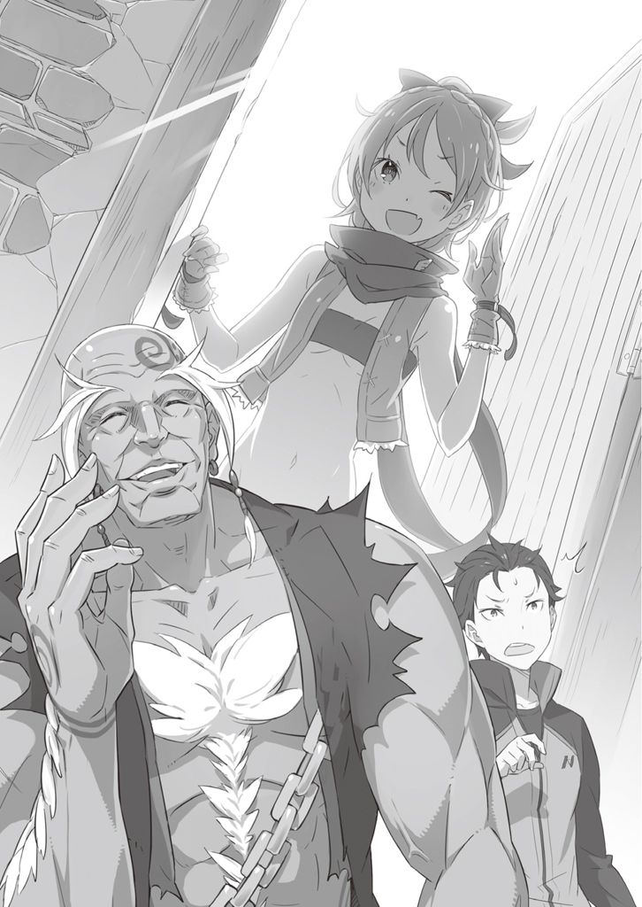
ロム爺の答えにますます顔を不審にしかめる少女──フェルト。
無意識に胸に手を当てているところを見るに、どうやら徽章はそこにあるらしい。フェルトはスバルに警戒の眼差しを向ける。
「なんだよ、あの兄ちゃん。まさか、アタシを売ったんじゃないだろうな」
「儂とお前の付き合いでそんな不義理はせんわい。お前さんにとって、悪い話にはならんと踏んでおる」
片目をつむり、ロム爺は「のう？」とスバルに同意を求めてくる。
ウィンクするジジイという貴重な気持ち悪さを体験し、スバルは緊張感を誤魔化す意味で軽くえずく小芝居を入れて、ロム爺の萎えた視線を浴びながら少女に向き直り、
「そんな恐い顔すんなって。まずは駆け付け一杯、ミルクでもどうよ」
「隙だらけの間抜け面......なに企んでてもかまやしねーけど、アタシはアンタの話がアタシにとって金になるかしか興味がねー。本題、入っていいぜ」
フェルトの冷たい反応。スバルは初対面の印象の悪さに肩をすくめながら、
「爺さんに無理言ってこうして時間作ってもらったわけだが......とりま、俺が用があるのはお前が懐にしまってるっぽい宝石入りの徽章だ」
ぴくり、と少女の眉が上がる。盗難の事実と、盗難物の詳細を知るスバルへ警戒のレベルを一つ上げた様子だ。だが、スバルはそんな彼女の警戒を解こうと両手を掲げ、
「手も足も出さない。出すのは口だけ。つまり、交渉しようぜ」
掲げた両手の指で、スバルはカウンター脇の小さなテーブルを指差すと、
「俺もお前も損しない。お互いにｗｉｎｗｉｎな結論を目指して、な」
話し合いを望むスバルの態度に、フェルトはほどなく頷いた。それから指定したテーブルに互いに向かい合って座ると、気を利かせたロム爺がグラスにミルクを注いで二人の前に並べる。
「場所とミルクは提供するが、交渉はお前さん自身でやるんじゃぞ。儂は知らん」
「ふんだくられんの覚悟の交渉だぜ。ぼられる気でいる俺のネゴシエイト見てろ」
拳を鳴らして自慢にならないことを自信ありげに語るスバル。ロム爺はそのスバルに鼻を鳴らす。一方、正面のフェルトはミルクの杯を傾けて顔をしかめた。
「おい、ロム爺。このミルク、水入れて薄めてねーだろーな。マズイぞ」
「どいつもこいつも人が好意で出してやっとるもんをマズイマズイと......」
散々な言われようのロム爺が、ふてぶてしい態度のフェルトの頭をでかい掌で撫でる。
フェルトの首がもげそうな絵面だが、ロム爺側に害意がないのは撫でるジジイのふやけた顔つきを見れば明白だ。フェルトも、慣れ切った様子で受け入れている。
「なんか予想と期待以上に親しげだな、お前ら。置いてけぼりでさびしい」
「ロム爺といい勝負の凶悪な面して、女々しいこと言ってんじゃねーよ」
「今まで色んなこと言われてきたけど、このジジイといい勝負させるか!?」
フェルトの言葉に愕然とし、スバルは禿頭の老人を見上げて打ちひしがれる。
ちょっと目つきの悪さで誤解されやすい性質はあるものの、二メートル超の巨大な爺さんと並べて比較されるレベルだとは思っていなかった。
「あー、さすがに今のは言いすぎたって。悪かったよ、兄ちゃん」
「そこはお兄ちゃん、と可愛らしく呼ぶことで示談成立としたいとこだが、とりあえずのところは許しておく。今後は心ない言葉で人を傷付けちゃ......どうした、ロム爺さん」
「お前さんら、二人して結託して儂を怒らせにきたんじゃなかろうな？」
笑顔だが額に青筋の浮いているロム爺に、スバルとフェルトは顔を見合わせて肩をすくめた。その息の合った様子にロム爺は深々とため息をつく。
「やれやれ......フェルトに同年代の知人がと思えば、また曲者なもんじゃのう」
「......ロム爺、頼むから小っ恥ずかしい気ぃ回すのやめてくんねーかな」
「それに同年代って......そりゃまぁ、爺さんから見りゃ何でも一緒だろうけど」
ちらと改めてフェルトを観察するが、その年齢は発育の貧相さも合わせて十二、三歳あたりに見える。贔屓目を駆使して十四が限度か。
友人知人として仲良くするには、照れが生じる年齢差である。
そんなスバルの分析を余所に、拗ねた顔のフェルトとロム爺の言い合いは続いている。
「そんなことで一匹狼を気取っとってどうする。いずれは儂も体にガタがきて、まともにお前さんの相手ができんときがくる。そうなっても、一人でおる気か？」
「何年前から言ってんだよ、それ。同じこと何べんも言ってる頭以外には、ロム爺はそうそうガタなんかきやしねーよ。そうなる前に......」
「前に？」
消えそうに尻すぼみになる言葉尻を捕まえるスバルに、フェルトがキッと顔を上げる。
聞いてはいけないこと、歓迎されてないムードを感じ取ってスバルは咳払い。だいぶ本題からずれている部分も含めて、そろそろ方向修正をしたいところだ。
「んじゃま、改めて交渉開始といこう。えーっと、フェルト。徽章、持ってるよな」
「......ああ、持ってるぜ」
ばっさり本題に切り込んでみせるスバルに、短く応じるフェルトも素直な肯定。
彼女は懐に手を入れると、そこから抜き出したものをテーブルの上へ静かに置いた。
──スバルが求め続けた徽章。それは竜を象った意匠が特徴的なバッジだった。
その大きさは掌に乗るワッペン程度。材質はイマイチ判断できないが、翼竜を象ったデザインは手が込んでおり、竜が開いた口に赤い宝石をくわえる姿がユニークだ。
徽章の中心、赤い宝石がぼんやりと輝くのにスバルは思わず目を奪われる。
「さあ──」
黙り込むスバルの意識を引き戻すフェルトの呼びかけ。フェルトは我に返るスバルに見せつけるように、テーブルの上の徽章を端へ押しやる。
「今度はそっちのカードを見せな。徽章はこんだけの代物で、しかもアタシはそれなりに苦労して手に入れた。それに見合うカードだと、お互いに嬉しいよな？」
「悪い笑顔でこっち試してみてるとこ悪いが、俺の出せるカードは一枚こっきりだ。なにせ俺は、栄枯盛衰の一文無し！」
胸を張るスバルにフェルトが渋い顔。
相変わらず、『無一文』と聞いた途端にみんな嫌な顔するなぁ、と思うスバル。
そんな胸中の感情はさて置き、宣言通りに切れる唯一にして最強のカードを切る。
叩きつけるようにテーブルに置かれた携帯電話を見て、予想通り困惑顔のフェルト。その反応に気を良くしつつ、スバルは携帯のカメラ機能を起動し、
「食らえ！ 秒間九発連続撮影！」
「わっ、わわわわわわ！ オイ、なんの音、眩しいっつの！」
白い光が閃き、機械的なシャッター音がすさまじい速度で連続する。
スバルのマナー違反な撮影にフェルトは文句を言いたげな顔をしたが、その口が開くより前に携帯の画面を彼女に突きつけた。表示された自分の姿に彼女は目を見開き、
「これって......」
「そう、お前を写し取ったのさ！ これは時間を切り取って形に残す『ミーティア』だ。その徽章と、この『ミーティア』とで物々交換を申し込むぜ」
初手から最大のカードを切って、勢いのままに交渉をこちら優位に進める。
交渉の定石の一つであり、場合によっては趨勢をそれだけで決められる強引な手段だ。
もっとも、この方法はこれ以上に強力なカードはないと相手に宣言するも同然であり、実質スバルは口頭でそれをやらかしてしまっているわけだが。
「なるほど、そりゃスゲーな。で、ロム爺。この『ミーティア』は売ったらどんなもんよ」
画面を覗き見て、ふんふんと頷いたフェルトの反応がものすごい淡泊で驚く。
目を輝かせるでもなく、携帯電話を手に取りもしない。彼女の興味は携帯電話の機能や希少価値でなく、そのものズバリどれぐらいの金銭になるかの一点のみ。
「こういうハイテクへのロマンって異世界でも男の子限定かよ、さびしい！」
「うるせー、ぴーぴー騒ぐなよ。アタシとしてはこの『ミーティア』？ みてーなもんがこの徽章より高く売れるなら万々歳だ。そこらへん、ロム爺は信用してっから」
「ま、正確な金額まではわからんがな。結論から言って比較にならん。その徽章もかなり金になると思うが......『ミーティア』には劣るじゃろう。つまるところ、この交渉はフェルト、お前さんがかなり儲かるってのが儂の結論じゃな」
「そっかそっか。ならま、いいんじゃねーかな」
ロム爺の太鼓判に気を良くした様子のフェルト。
やや予定と違う反応ではあるものの、目的は果たせそうでスバルも満悦。
しかし、それじゃ早速と手を伸ばしかけたスバルを「待った」とフェルトが制止する。
「カードの切り合いは互いに終了。だけど、アタシの吹っかけはまだ終わらねーぜ？」
「......自分から吹っかけるって宣言されるのゾッとしねぇな。ってか、これ以上に釣り上げようって言われても無理だぜ。なにせ俺は天下無双の一文無し」
「アタシもそこまでワルじゃねーよ。ロム爺がこんだけ言ってくれんだ。徽章の価値よりこっちの『ミーティア』のが上、それは認める。──アンタが切れるカードがないってのは嘘だろけど」
椅子に座るスバルを、立ち上がって見下すフェルト。
その赤い双眸が値踏みするように光るのを見て、スバルの背中を冷や汗が伝う。
交渉のカードとして最大の威力を持つ携帯電話というカードは切った。が、スバルの手元にはまだいくつか、この世界で価値を持つだろうものが残っている。最悪、見せ札の携帯電話以外にもいくつか切る腹積もりはあったが──。
「安心しなよ、言ったろ？ アンタからこれ以上、巻き上げるつもりはない。アタシはこいつが金に代わればそれで満足さ」
スバルの焦燥を笑い、フェルトは小さく手を叩く。フェルトの反応に息を呑み、スバルは呼吸を深くしながら動揺を悟られまいと目をそらした。
「で、吹っかけが終わらねぇってのはどういう意味よ」
「ん？ ああ、簡単な話。アタシの交渉相手は兄ちゃんだけじゃないってこと」
疑問符を浮かべるスバル。その疑問に答えるようにフェルトは指を立てる。
「そもそも、アタシがこの徽章をギッてきたのは頼まれたからなんだよ。これ一個で、聖金貨十枚と引き換えるって話でな」
「盗みの依頼が先約かよ！ 金貨十枚って、相場がイマイチわかんねぇけど......」
ちらりとロム爺を見ると、彼はスバルの意を汲んだように頷いてみせる。
「この徽章だと、儂ならうまく流して金貨四、五枚。叩かれて三枚の可能性もある」
「なら、単純に買い取り価格は倍ってことか」
「いや、聖金貨と言ったじゃろ？ 市場に流れとる金貨と違って、聖金貨は素材が希少な聖金を使っておるから、聖金貨十枚の価値は金貨二十枚近くある」
「四倍強かよ!?」
「何を驚いとる。お前さんが持ってきた『ミーティア』なら、最低でも聖金貨で二十枚。場合によってはもっと出す好事家もおるじゃろ。話にならんぞ」
イマイチ物価がわかりにくい世界だが、最上と思っていた金貨の上の貨幣が飛び出し、さらにそれで二十枚ともなれば驚きの一言だ。
「『ミーティア』のが高値がつくってんなら、盗みの依頼人にはなんて言って断るんだよ」
「だから、吹っ掛けるって言ってんだよ」
フェルトはその小生意気な顔つきを、さらに悪そうな笑顔に歪める。
「兄ちゃんがこんなバカ高いもんを出したんだ。徽章が欲しいなら、あっちもそれなりの報酬を追加してくるかもしれねーだろ？」
「......つまり、アレか？ 聖金貨で向こうが二十枚以上出してきた場合は」
「兄ちゃんはアタシに残りのカードも切って上乗せしなきゃ、勝負は成立しねーな」
悪そうな、を訂正して悪一直線の顔でフェルトが爽やかに言い切る。
ここへきて、雲行きの怪しくなる展開にスバルの顔色も曇り始める。
「んで、その依頼人ってのはどこで、いつ落ち合う予定なんだよ。その交渉のテーブルには一緒につかせてもらえるんだろうな？」
「もちろん。一方的に兄ちゃんが不利になるだけじゃ、アタシの儲けも減るかもわかんねーしな。それと、交渉場所なら心配すんなよ。──ここさ」
テーブルの端を指で叩いて、フェルトは背もたれに身を預けながらロム爺を見上げる。
「ロム爺がいりゃ、大抵の相手から暴力って選択肢消せっからさ。この見た目のジジイとケンカなんか、考えただけでする気なくなるし」
同意を求めてくるフェルトに、スバルもロム爺を一瞥してから「うんうん」と肯定。
一方でロム爺はそんな二人の評価に悪い気はしないらしい。
「儂がおらんとなんにもできんのか。まったく、嘆かわしい。ミルクのお代わりいるか？ 少しなら甘いもんもあるが」
ロム爺は孫を猫可愛がりするバカなお爺ちゃんみたいな感じになっていた。
上機嫌のロム爺になみなみとミルクを注がれているフェルト。彼女を見ながらスバルは呆れたため息をこぼす。
「しかし、最初からここにその相手を呼んでるってことは、俺のことがなくても値段交渉する気は満々だったのか」
「そらそーだろ。どんだけ苦労したと思ってんだ、これ盗るのに。それにアタシみたいなか弱いのが一人で相手して、踏み倒されたりしたらどーする。浮かばれねーだろ？」
「か弱い、ねぇ......」
華奢で小柄なフェルトの外見、そこから判断すれば決して間違った形容ではないが、その精神のたくましさと図太さをこうも味わうと、彼女を「か弱い」と形容するにはかなりの抵抗があった。さらに思い返せば、彼女はその徽章を盗む苦労の過程で一度、人生終焉のピンチにあったスバルのことを見捨てているのだ。
思い出すとムカムカし出して、恨み言の一つでも言ってやろうという気になってくる。
「って言うか、お前ってば俺のことひょっとして覚えてないか？」
「──？ どっかで会った？ っても、かなり衝撃的な出会い方してねーとアタシも暇じゃねーから覚えてねーよ。そもそも、兄ちゃんかなり地味な見た目してっかんな。髪の色と服装ぐらいしか目立たねーじゃん」
フェルトがけらけらと笑う。
フェルトの態度には嘘が感じられず、外見の凡庸さをディスられたのも合わせてスバルは愕然とする。
異世界では人情という言葉は完全に廃れ切っているのかもしれない。強盗殺人（未遂）の現場をさらっと忘れる精神性がその証拠だ。
その一方で、何の得にもならない状況でスバルを助けるサテラがいたり、小悪党の癖に憎めないロム爺もいるのだからわからない。
異世界でもやっぱり個人差があるのだろう。悪いところだけ見て評価、実に良くない。
「ま、フェルトの残念な記憶力はいいや。で、その待ち合わせ相手はいつくんだ？」
「なんか癪に障る言い方しやがんなー。アタシが日没までに仕事終わらせるって言ったら、日没後にここでって言ってたし......日も沈んだからそろそろくるんじゃね？」
その会話がフラグになったのかもしれない。
扉を鋭くノックする音がふいに響いた。三人が顔を見合わせる。
「符丁は？」
「あ、教えてねーや。たぶんアタシの客だし、見てくるわ」
ロム爺の言葉にフェルトは小さく舌を出す。そして跳ねるように立ち上がり、蔵の入口へ向かう。勝手知ったる他人の家、という感じのフェルトの振舞いである。
「いいのかよ、あんな勝手ばっかさせて」
「ま、知らん仲じゃないしの。付き合いも短くない......頼られてやるとするわい」
心なしかうきうきと、頼られるのが嬉しいお爺ちゃんが蔵の奥から棍棒を持ち出す。
長さは竹刀程度で、材質はたぶん木材。だが、先端からはちらほらと棘が突き出している。見るからに、殴られたら致命傷食らいそうな一品だ。
「釘バットっつーかなんつーか、やっぱ異世界でも棍棒って標準装備なんだな......」
二メートル越えのマッチョジジイの装備として、期待通りの姿だとスバルは思う。これで格好が破れて半裸状態のボロキレと腰巻きだけなら完璧だ。
「その文明人とは思えない姿に、さすがのスバルくんも苦笑い」
「ずいぶんと勝手なことを言いよるわい。ここまで話が持ってこれたのが誰のおかげじゃと思っておるのやら」
嘆かわしい、と首を振るロム爺。スバルは老人の態度に目線を落とす。
「ま、実際、感謝してるぜ。まだ詰めに入っちゃいないけど、その寸前まで話が持ち込めたのは間違いなく爺さんのおかげだよ。ありがとう」
「......急に素直になられると、こっちの調子が狂うのう」
スバルの感謝にロム爺は自分の禿頭を指で掻き、それから大きく息をついた。
「お前さんがここを見つけて、お前さんの持ち物を材料に引っ張り出した状況じゃろ。儂に感謝するようなことなぞ、ありゃせんわい」
「んなことねぇよ？ だってロム爺、もともとフェルトがここで徽章の取引きする予定だったの知ってたわけだろ？ それなら最初の時点で、俺の話なんて聞かずに放り出す選択肢だって持ってたはずなんだよ」
「............」
「話をするチャンスをくれたのは間違いなく爺さんだ。そのあとでチャンスをものにしたのは俺の功績だけど。俺の、功績、だけど！」
大事なことなので二回繰り返して宣言する。
親指を自分に向けるスバルの発言に、ロム爺は難しい顔で押し黙っている。いよいよ呆れられたか、とスバルは今の発言の浮つきっぷりを後悔する。
「感謝......それとはちと違うが、それを言うなら儂の方じゃろうな」
ふいに、顔に反省を浮かべていたスバルにぽつりとロム爺が呟いた。
老人はその皺だらけの顔をくしゃりと歪めて、顔の皺をさらに深くするように笑う。
「『ミーティア』を持っとることもそうじゃし、服装と中身の小奇麗さもそうじゃ。......お前さん、本当はけっこういい身分じゃろ？」
「いや、そんなことないけど......」
「隠さんでもいいわい。徽章がフェルトに盗られたことは、表沙汰にできんことなんじゃろ。穏便に収めようとしてくれとるだけでも、ありがたい」
素姓の窺い知れないスバルに対し、どうやらロム爺は勝手な人物像を思い描いたらしい。老人の頭の中では、スバルはずいぶんと気が利く紳士扱いのようだった。
「儂とフェルトは、フェルトがほとんど物心ついたような頃からの付き合いでな」
「ああ、そんな感じのこと言ってたな。......ずっと、ここ暮らしなのかよ」
スバルは顎をしゃくって、言外に貧民街を示してみせる。ロム爺は頷いた。
「こんな場所じゃ。どいつもこいつも、自分が生きるのに必死でな。幼子が生きていくには似た境遇の子らと徒党を組んだりするのが常なんじゃが......フェルトはそれに向かん」
「誰に対してもあの態度だってんなら、それもわかる話だけどな」
たくましいといえば聞こえはいいが、自分本位といえばそれまでのフェルトの態度。
利害で繋がる関係ならば、それこそいい目では見られない生き方だとスバルは思う。
「けど、それならそれでロム爺の接し方にも問題あんじゃねぇの？ 言ったらなんだけど、甘やかすロム爺がいるから増長したってとこもありそうに思えるぜ」
「......言い返す言葉もないわい。儂があの子を身内贔屓しとるのは確かじゃからな」
ロム爺は禿頭を撫でながら静かに呟いた。老人の目を伏せた横顔を見ながら、スバルはロム爺がフェルトに対して、肉親に近い情を抱いているのだと感じ取る。二人の間には血縁はないだろうが、少なくともロム爺側には確かな絆がありそうだ。
「一方通行の片思い、じゃなきゃいいけどな」
「それならそれで構わん。......いや、その方がいいんじゃ」
主語のないスバルの呟きを聞きつけて、ロム爺がぽつりとそうこぼすのが聞こえた。
ロム爺の態度にスバルは別の言葉を続けかけたが、そうしてる間にタイムアップだ。
「男二人で小さい声でくっちゃべってんじゃねーよ、感じわりーな」
戻ってきたフェルトが、会話していたスバルとロム爺を見て憎まれ口を叩いていた。ヘタクソな愛想笑いをしているフェルトの後ろに、別の人影が立っている。
「やっぱアタシの客だったよ。こっちだ、座るかい？」
スバルをどけるように手振りで指示して、フェルトの愛想は背後の相手へ向かう。次なる交渉相手、と心持ち緊張して視線を上げ、スバルは少し驚いた。
フェルトが招き入れたその人物が、見目麗しい女性だったからだ。
身長の高い女性だ。スバルと同じぐらいの背丈で、年齢は二十代前半だろうか。
目尻の垂れたおっとりとした雰囲気の美人で、病的に白い肌が薄暗い蔵の中でもひどく目立つ。黒い外套を羽織っているが、前を開けているので肌にぴったりと張り付いた同色の装束が目についた。細身ながらも出るところの出たナイスバディだ。
そしてスバルと同じく、この世界では珍しいとされる黒い髪の持ち主。背を越して腰まで届く長い髪を編むように束ねて、指先でその先端を弄んでいる。
どことなく妖艶な佇まいの大人のお姉さんだ。元の世界でも女性に縁のなかったスバルにとっては未知の存在すぎて、超ドギマギせざるを得ない。
精神的優位を失い、素直に席を譲ってしまうスバル。空いたその席にフェルトが座り、その左隣に棍棒を持つロム爺、右隣に緊張を隠せないスバルが立った。
物々しい出迎えを受け、しかし女性は不快そうにするでもなく小首を傾げる。
「部外者が多い気がするのだけれど」
「踏み倒されたら困るかんな。アタシら弱者なりの知恵だよ。んで、兄ちゃん飲み物」
手振りして扱き使おうとするフェルトに反論もできず、スバルは比較的綺麗なグラスを棚から選んで持ってくると、ミルクを注いで二人の前へ。
給仕するスバルに「ありがとう」と礼を言い、それから女性は値踏みするように、
「そちらのご老人はわかるのだけれど、こちらのお兄さんは？」
立ち振舞いと雰囲気から、スバルが場馴れしていない感を読み取ったのだろう。
警戒、ではなく純粋な疑問の言葉に、フェルトは悪い顔を作る。
「この兄ちゃんはアンタのライバル。アタシのもう一人の交渉相手さ」
と、宣言通りに吹っかけを始めたのだった。
６
「なるほど、事情は飲み込めたわ」
グラスを傾けて、薄い唇の上の白い跡を舌で舐める女性。
エルザ、と名乗った彼女の仕草は一つ一つが艶っぽい。フェルトが状況説明をする間もたびたび投げかけられる流し目に、スバルはドギマギしっ放しだ。
「ま、そんなわけで値段の釣り上げ交渉ってわけだ。別にアタシはどっちが徽章を持ってくんでも構わねーし、高い方に高く売りつけるさ」
「いい性格だわ、嫌いじゃない。──それで、そちらのお兄さんはいくら付けたの？」
聖金貨十枚、それがエルザが前もって提示していた金額だ。
それと張り合うのだから当然、それ以上の金額を出したと向こうも思っている。
日和見な態度はマイナスだろうと決断し、スバルは三度、携帯の撮影機能を発動。焚かれたフラッシュが蔵を切り裂き、エルザの姿を画面に切り取る。
突然の行動に眉を寄せるエルザに、スバルは携帯の画面を見せつける。
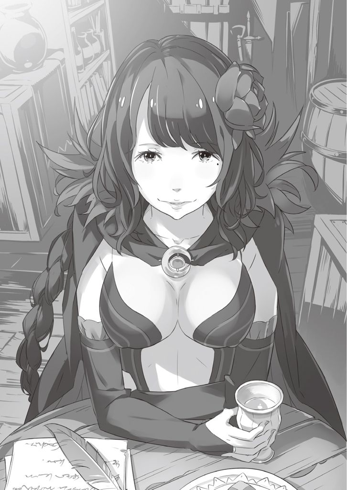
「俺が出すのはこの『ミーティア』だ。たぶん、世界に一個しかないレアアイテム。そこの筋肉爺さんの話じゃ、聖金貨で二十枚は下らないってお墨付きだぜ」
「『ミーティア』......」
画面に映る自分の姿を眺めて、エルザは納得の頷きを作る。
スバルの手段が物々交換で、しかもハッタリでないことは伝わったのだろう。エルザは懐から小さな革袋を出した。──おそらく、そこに報酬の聖金貨が入っている。
革袋をテーブルの上に置く。金属同士が擦れ合い、重厚感のある音が袋越しに届く。
猫のように目の瞳孔が細まるフェルトと、それをたしなめるロム爺。エルザはテーブルの上でその白い指を組んだ。
「実は私も、依頼主からある程度、余分なお金を渡されているの。もしも相手が渋るようであれば、少しの上乗せも考える意味でね」
「依頼主......ってことは、エルザさんも徽章を受け取るように頼まれただけってことか？」
「そうなるわね。欲しがってるのは依頼主の方。......あなた、ひょっとしてご同業？」
「俺と同業ってことは、無職ってことになるぜ！」
「で、その無職のお兄ちゃんは飛び出るような値段をつけた。アンタの飼い主はどんぐらいの値段が付けられるんだい？」
フェルトの挑発めいた口ぶりに、エルザは黙って袋の口を開ける。
逆さになった革袋から吐き出されるのは、眩い白銀の輝きを放つ聖金貨だ。
重なり合う金属音にフェルトが瞳を輝かせ、ロム爺すらもかすかに喉を鳴らす。対するスバルはその輝きではなく枚数に目がいく。その数に間違いがなければ──
「二十枚、ジャスト」
「私が雇い主から渡されている聖金貨はそれが全て。上はそれで払い切れるとあなたを値踏みしていたようだけど......少し厳しいかしら」
問いかけはフェルトの隣、ロム爺に向けられていた。
ロム爺は聖金貨の枚数を数えると、不安げな顔をしているスバルを見下ろして笑う。
「そんな幼子みたいな顔するもんでない。男がみっともないったらないじゃろ。......確かに聖金貨二十枚、法外な報酬じゃ。じゃが、儂は聖金貨二十枚は下らんと言ったはず」
でかくてごつごつした掌が、乱暴にスバルの短い黒髪を掻き回す。
「儂の見立てじゃ、この交渉はこの小僧に傾く。お前さんと雇い主には悪いが、この金貨は袋に戻して帰ることじゃな」
無骨な掌で聖金貨を押し返すロム爺の言葉に、スバルは歓喜に喉を鳴らす。
フェルトは異存なしと手を万歳し、エルザもまたさほど気落した様子もなく肩をすくめた。思わずガッツポーズを決めたスバルだったが、その反応が周りからちょっと浮く。
「な、なんだよ！ いいだろ、別に！ 嬉しかったんだよ！ ある意味じゃ、こっちで初めての目的達成だっつの！ ガッツポーズぐらい、なぁ!?」
「別に何も言ってねーだろ。存分にはしゃげよ。アタシは儲かればそれでいーし」
「私の雇い主も、その徽章が手元にある必要はないから、食い下がることはないの」
赤面するスバルに対して、フェルトとエルザの態度は淡々としていた。
ただ、交渉敗北の負け台詞を期待するほど性格が悪いわけではないが、依頼を果たせなかったのに気にした風でもないエルザの態度が気にかかった。
「あー、悪いな、エルザさん。たぶん、怒られたりしちまうよな」
「仕方のない話よ。私に落ち度があるならともかく、この場合は雇い主が支払いを少なく済まそうなんて考えたのが悪いのだし」
「聖金貨二十枚持たせて少ないじゃ、ちょっち浮かばれんのぅ」
「ま、アタシの運気が絶好調すぎたんだな！ こりゃアタシの時代が到来したか？」
エルザに同情的な男性陣に反して、フェルトの態度は空気が読めてなさすぎだ。
ともあれ、スバルはこの場にきた目的の一つを果たした。それはとりもなおさず、サテラへの義理立ても成りそうだという希望の芽を残した。
本来であれば、徽章を盗んだフェルトやそれを依頼したエルザのことをサテラに報告すべきなのだろうが、彼女らを豚箱へぶち込む強靭な精神はスバルにはない。
日和見主義、ここに極まれりである。
「それじゃ、交渉は残念な結果だったけれど、私はこれで失礼するわね」
立ち上がるエルザは最後に残ったミルクを飲み干す。またもエロい舌動作でミルクの水滴を舐め取ってからふとスバルを見た。
──黒瞳が締めつけるように、スバルを絡め取る。
「──そういえば、あなたはその徽章を手に入れて、どうするの？」
どこか低い、感情の凍えた問いかけだった。
その響きは甘くスバルの鼓膜を脅迫し、偽証を禁じさせるような錯覚を与えてきた。
「......ああ、元の持ち主探して返すんだよ」
言ってしまってから、スバルは自分の明らかな失言に気付いた。
盗んだ少女と盗みの依頼者の前でそれを持ち主に返すと宣言したのだ。スバルの言葉は、
「──なんだ、関係者なのね」
──エルザの冷たい殺意を実行に移させるのに、十分な意味を持っていた。
「う──ッ!?」
横合いからの突然の衝撃。
腰を打つ威力に体が横滑りし、スバルは受け身も取れずに地面を転がる。痛みと衝撃、回る視界でとっさに地面を叩いて顔を上げると、腰にフェルトがしがみついていた。
「何を──っ」
「バカか!? 避けろよ、死ぬ気か!?」
しやがる、という罵声はそれを上回る怒声によって掻き消された。
驚愕するスバル。そんな低い姿勢からの視界に、こちらを向くエルザが見える。
「あら、避けられてしまったわね」
と、不思議そうに小首を傾けるエルザ。
エルザの手には、不釣り合いな凶器が鈍い輝きを放ちながら握られている。
──ククリナイフ、という凶器がスバルの知識の中からふっと浮かぶ。刃渡り三十センチ近いナイフの刀身はくの字に折れている俗に内反りとされる刀剣の一種だ。先端の重みで斧のように獲物を断ち切る武器であり、その威力と凶悪さは想像に難くない。
刃を振りかざし、エルザは先ほどまでと変わらない微笑みを浮かべている。
体勢からして、一度はその刃が振り切られたのだろう。だとすれば、その軌道上にあったスバルを助けたのは、飛びつくように守ってくれたフェルトということだ。
遅すぎる恐怖が手足を震わせ、吐き気がこみ上げる。だが、事態はそれを待たない。
「おおおおおおお──ッ!!」
雄叫びを上げて、凶刃を振るったエルザに飛びかかったのはロム爺だ。
彼は交渉の間も手放さなかった棍棒を振り回し、棘付きの凶器でエルザの頭蓋を叩き割りにかかる。重さ十キロは下らないそれを小枝のように扱い、風を破る打撃が蔵を叩く。
衝撃に床が弾け、建物全体が揺れるような錯覚。散らばっていた盗品類が大立ち回りを始める二人の周りで吹き飛び、へたり込むスバルの前で戦闘が始まった。
「巨人族と殺し合うのは初めてよ」
「抜かせ、小娘。──挽肉にして大ネズミの餌にしてやるわ！」
罵声を飛ばすロム爺の棍棒に速度が存分に乗る。その威力の前では下手な防御など紙の盾以下。足場の少ない蔵の中にあっては、逃げ場を塞ぐように棍棒を打たれるだけで致死の脅威だ。だが、それと向かい合うエルザの技量も異常の領域にあった。
片手にぶら下げたククリナイフを揺らしながら、致死の暴風にエルザの黒影は滑るように回り込む。本当の意味での紙一重の生死を潜り、エルザはロム爺を翻弄する。
マズイ、と本能的にスバルは思う。──何かが、決定的な警鐘を鳴らしている。
「ヤバい......」
「大丈夫だ。ロム爺がやられるはずがねー！ アタシが物心ついてからずっと、ロム爺がケンカで負けるとこなんか見たことねーんだから！」
唇を震わせて不安を口にするスバルに、フェルトは自分を鼓舞するように信頼を叫ぶ。
フェルトの言葉には月日が積み重ねた、覆し得ない信頼があった。軽口を叩き合いながらも親しげだった二人の関係が、それをスバルに語らずとも信じさせる。
だが、信頼を叫ぶ彼女と違いスバルは悲観的だ。その原因が、スバルにはわからない。
「──食らえい！」
スバルの不安が形になる前に、戦闘の方に変化が生じた。
ロム爺が雄叫び、テーブルを蹴り上げる。さっきまで交渉の舞台となっていた木製のテーブルが砕け散り、壁を背にするエルザの視界を破片が塞いだ。
棍棒が渾身の力を込めて打ち下ろされる。直撃すれば即死は免れない。だが、
「──ロム爺!!」
悲痛なフェルトの叫びが、盗品蔵の大気を揺らした。
そしてその叫びの結果をスバルは見た。
くるくると、回転しながら吹き飛ぶ何かを。
それは、棍棒を握りしめたままのロム爺の右腕だった。
肩口から切断された腕は宙を舞い、血をまき散らしながら壁に叩きつけられる。部屋中に血の雨がぶちまけられ、スバルもフェルトもそれを頭から浴びた。フェルトの絶叫。
「せめて、相打ちに──ッ」
右腕を肩から断たれて、ホースから水を流すように血をこぼすロム爺。彼はその巨体を前へ飛ばし、傷口を押さえることもせずに残った腕でエルザを狙う。
粉砕されたテーブルが床に落ち、その向こうでエルザは刃を振り切った姿勢でいる。
ククリナイフの刃がひるがえるより、ロム爺の巨躯がその細身を押し潰す方が早い。
そんな儚い、ロム爺の命懸けの吶喊は、
「言い忘れていたけれど──ミルク、ごちそうさまでした」
エルザの反対の手に握られていた、割れたグラスの一閃によって阻まれた。
グラスの鋭利な先端には血の滴が浮かび、それは元を辿ればロム爺の喉に行き着く。腕を失い、喉を切り裂かれた老人は大量の血泡を口から吹き、その灰色の瞳から光を失って地面に倒れた。痙攣する体にすでに力はなく、命すらも掠れるように消えていく。
倒れた巨体に対し、エルザはまるで敬意を払うように優雅に一礼する。
まだかすかに震えるロム爺の足下、そこに最後の凶器となったグラスを丁寧に置き、
「お返しするわ。もう、必要ないから」
酷薄に言って、手の中のククリナイフが旋回。赤く染まる刀身の先端を改めてこちらへ向けてくる。だが、へたり込むスバルは言葉も出せない。
ただただ、目の前で行われた残酷な殺戮に意識を奪われてしまっていた。
ほんの数分前まで、言葉を交わしていた相手が死んだのだ。それも事故や病によって奪われたのではなく、明確な他者の悪意によって。
「──あら、あなたの方が勇気があるのね」
動けないスバルは、エルザのその感心したような声を聞いて顔を上げた。
呆然自失のスバルの前に、震える膝を鼓舞するように叩いて立ち上がるフェルトの姿があった。フェルトは血に濡れた金髪を後ろに撫でつける。
「よくも、やってくれやがったな......」
背後のスバルからはフェルトの表情は見えない。ただその声は決して涙声ではなかった。
「余計に手向かうと痛い思いをするかもしれないのだけれど」
「反撃しなくても殺す気だろーが、このクソ異常者が......！」
「動かれると手元が狂うかもしれないの。私、刃物の扱いが雑だから」
手の中のナイフを器用に回転させ、ナマス切りの予行演習をしてみせるエルザ。対するフェルトの両手は空で、勝ち目などあるはずがない。
声を出すべきだ、とスバルの脳は結論を出していた。少しでもエルザの注意をこちらへ引きつけ、フェルトの逃走時間を稼がなくてはならない。
フェルトが誰かを呼ぶ時間を、あるいはフェルトだけでも逃がす時間を作らなければ。
そう意識は結論を出しているのに、スバルの体はただカタカタと震えるだけだった。
「......悪かったな、巻き込んじまって」
動けないスバルにフェルトが投げかけたのは、小さくか細い謝罪の言葉だった。
「お、俺は......っ」
それを聞いたスバルは弾かれたように顔を上げ、本来ならば出さなければならなかった叫びも忘れて、まるで許しを乞うような泣き言の走りだけを口にする。
そして、そんなスバルの感傷をフェルトは永遠に置き去りにして駆け出した。
踏み込みの音が高く鳴り、直後に蔵の中を突風が吹き荒れた。疾走するフェルトの姿がスバルの視界から消えたように見えた瞬間、エルザが身をひねっていた。
甲高い音が響き、エルザの傍らに出現したフェルトが舌打ち。フェルトの手にはいつの間にかナイフが握られており、エルザは超反応でその奇襲をかろうじて回避したのだ。
飛び退き、フェルトの体は跳ねるように風に乗る。空間の限られた蔵の中で、壁すらも大地とする彼女の動きは変則的だ。さしものエルザもその曲芸じみた技に驚く。
「風の加護。ああ、素敵。世界に愛されているのね、あなた。──嫉ましい」
恍惚を孕んだ微笑が一転、どす黒い憎悪を瞳に宿し、エルザの腕がしなってうなる。
「──あ」
──空中で肩から撫で切りにされたフェルトが、受け身も取れずに地面をもんどり打って転がっていく。
傷口は左肩から右の脇まで抜けており、その深さは骨を断って内臓にまで達している。
仰向けに倒れる体からは拍動に合わせて噴水のように血が噴き出し、痛みと斬撃のショックでフェルトの意識はすでにないのだろう。ぴくりとも動かない。
そのまま数秒で血は勢いを失う。それは彼女の生命の終わりをも無言で明示していた。
体は動かない。
倒れるフェルトの傍に行って、その傷口を塞いでやりたい。
それがあまりにも遅すぎるというなら、せめてその開いた瞼を閉じさせてやりたい。
それすらスバルの手足は拒否し、何もできずに震えるだけの無様をさらしている。
「お爺さんと女の子は倒れ、なのにあなたは動かない。諦めてしまったの？」
憐れむような声音でエルザは言って、退屈そうな目でスバルを見る。
近づいてナイフを一閃するだけで終わる。そんな結果が見えているからだろう。エルザの仕草には欠片の緊張もなく、いっそ欠伸を噛み殺すような態度すら垣間見えた。
そんなエルザの態度に、堪え切れない怒りを感じる。
出会って間もない、ほんの小一時間程度のやり取りしか交わしていない二人だ。
だが、それなりに会話して、それなりに心情をぶつけ合った。そんな二人をあっさりとスバルから殺して奪って、なんら呵責を感じていないその態度が許せない。
そしてなによりも、唾棄すべき相手を前に二人を見殺しにした自分が許せない。
「ああ、やっと立つのね。遅いし、つまらないけれど、悪くはない」
遅すぎる怒りの感情が、スバルの手足に動く原動力をもたらしていた。
震える四肢を地につき、獣のような姿勢でどうにか立ち上がるシークエンスに入る。体の震えは怒りと恐怖のどちらが理由か。あるいはどちらもか。──どうでもいい。
ククリナイフを構えるエルザに向かって、牙を剥くスバルが全身全霊で襲いかかった。
飛びかかり、己の限界を越えた腕力で叩き伏せる。その勢い任せの吶喊は、
「でも全然ダメ」
鼻面を叩き潰すようなエルザの肘打ちによって、真正面から返り討ちにされていた。
身を回し、最小限の動きで肘を叩きつけ、のけ反るスバルを長い足が弧を描いて直撃。軽々と背後へ吹っ飛ばされ、陶器類の棚へ激突してスバルが転倒する。
たった一瞬の攻防で、鼻と前歯がおしゃかにされた。蹴りの直撃を受けた脇腹も尋常でなく痛み、骨の何本かが持っていかれた感覚がある。
それでも拳を地面に叩きつけ、間髪入れずに立ち上がる。脳内麻薬が全身を駆け巡り、かつてない痛みを脳に認識させない。
興奮状態の荒い息に任せるままに、スバルは再び考えなしの特攻──だが、返り討ち。
振り乱した腕はエルザに届かず、しなる腕が峰を返したナイフでスバルの肩を砕く。
苦鳴が上がるのを煩わしいとでもいうように、エルザに顎を真下から蹴り上げられて強制的に叫びが中断。折れた前歯がこぼれ落ち、くずおれるスバルをエルザが見下ろす。
「てんでダメ。見たまま素人で動きは雑。加護もなければ技術もなく、せめて知恵が絞れるかと思えばそれもなし。いったい、それでどうして挑むのかしら」
「うるぜえな......意地があんだよ......ごんだげ、やられっだらなぁ」
鼻が折れているせいで、罵声一つもまともに紡ぐことができない。
今のカウンターで腕がやられた。左肩から先は力なく揺れている。痛みは感じないが耳鳴りがひどい。猛烈な吐き気が口の端から憤怒と一緒に垂れ流しになっている。
スバルの姿は満身創痍。勝算はゼロで、一矢報いられる可能性すら万に一つ。
「飛び抜けた気骨だけは認めてあげる。それがもっと早くできていれば、この子たちも少しは違ったかもしれないけれど」
片手に下げたナイフで、切り捨てられた二人の死体を示してみせるエルザ。
エルザの動きにつられて死体に目をやり、スバルは突如として違和感に襲われる。
なぜ、だろうか。この光景に、見覚えがあるような気がする。
血の海となった盗品蔵。片腕を失った巨躯の死体。鈍く輝く赤銅色の刃。
スバルの脳裏を、電撃的にある考えが過った。それは──、
「終わりにするとしましょう。天使に会わせてあげるわ」
赤い唇を舌で舐めて、蠱惑的な微笑みが闇に溶ける。
影に沈んだとしか思えないような歩法に、脅威を見失うスバルは左右に意識を振り、
「ど、どごだ......!?」
せわしなく周囲に視線を走らせ、音に気配に神経を尖らせて出方をうかがう。
その様子はまさに、猛獣に狩られるのを待つだけの獲物の姿そのものだったろう。
エルザからすれば興醒めするほどの醜態。故に斬撃は鮮やかなほど真っ直ぐで、
「な──!?」
狙いを腹だと断定していたスバルに、間一髪の回避を間に合わせていた。
短く後ろに飛び、身を引きながら腹を引っ込め、横薙ぎの刃を掠らせるだけにとどめる。腹の皮が薄く裂かれ、鋭い痛みが走るのを歯を噛みしめて根性で我慢。
「っっるるるぁぁぁぁ──!!」
そして渾身の回し蹴りが、エルザの上体を真横から打ち抜いていた。
腰をひねっての会心の一撃が入り、一矢報いてやったとスバルは確信する。だが、
「ああ、今のはとても、感じたわ」
エルザが腰から引き抜いた二本目のククリナイフが、スバルの胴体を七割ほどかっさばいて血と内臓をぶちまけていた。
「──あ？」
一歩、二歩、よたよたとよろめきながら歩き、肩から壁にぶつかって滑るように崩れ落ちる。見下ろす眼下、腹部からはとめどなく血が溢れ出し、床を鮮血が染めていく。
震える片腕で溢れた血を腹に戻そうとするが、こみ上げる血塊に遮られて叶わない。
「驚いた？ すれ違いざまにお腹を開いたのよ。これだけは私、得意なの」
笑いながら言って、エルザが血の海を水音を滴らせて歩き渡る。
彼女は言葉もなく苦鳴だけを吐き出すスバルの傍にくると、どす黒い血の中にこぼれ落ちた腹の中身を愛おしげにうっとりと見つめて、
「ああ、やっぱり。──あなたの腸は、とても綺麗な色をしていると思ったの」
この女は、異常だ。頭がおかしい。
脳内麻薬すら誤魔化し切れない激痛に意識がかすみ、いつしかスバルの体は床に横倒しになっていた。その体勢のまま、震える指がエルザの足に弱々しく触れる。
「ぁぅ......うぁ......」
「痛い？ 苦しい？ 辛い？ 悲しい？ 死んでしまいたい？」
足首を掴まれたまま、エルザはその膝を折るとスバルと視線を合わせる。
その瞳は恍惚としていて、今まさに一人の人間の命を刈り取ろうとしていることになんの感慨も抱いていない。いや、感慨を抱いてはいる。
──これ以上ない、幸福としてだ。
「ゆっくり、ゆっくり、ゆっくり、ゆっくり、熱が失われて、冷たくなっていって」
なぶるように、ねぶるように、悼むように、慈しむように、愛おしむように、エルザの声が終わっていくスバルの鼓膜をゆるやかに叩いている。
気付けば視界は閉ざされていた。出血がひどすぎて、少しずつ体が死んでいく。
音が聞こえない。味も臭いももう感じない。目も見えない。ただ、体が冷たくなっていくのを、自分が死んでいくのを、それだけを感じる。それは恐怖だった。
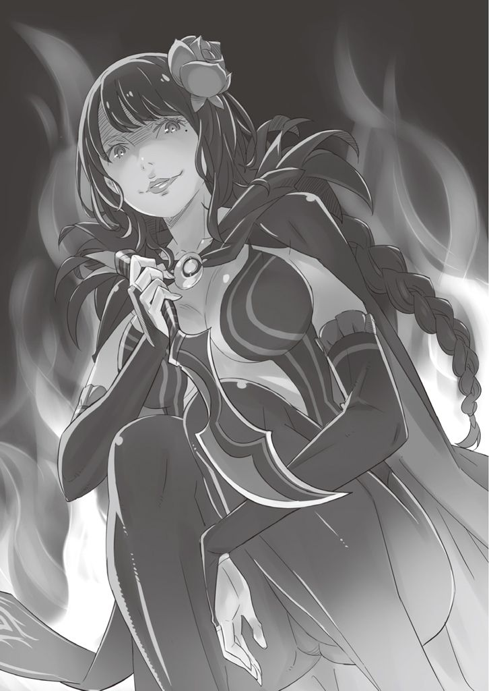
いつ命の灯が消えるかわからない世界で、襲いくる死への恐怖がスバルを離さない。
いつ死ぬ？ いつ死ぬ？ まだ生きているのか？ 死んでいるんじゃないのか？
何を生と定義する？ こんな虫以下の状態を生きていると呼べるのか？ 生死ってなんだ？ 死ぬってどうして恐いんだ？ 生きるのは必要か？ 否か？
恐い恐い恐い恐い恐い恐い恐い恐い恐い恐い恐い恐い恐い恐い恐い恐い恐い恐い。
とめどなく押し寄せてくる、絶対的な死への本能からの拒絶。
それが終わりに手をかけたスバルを埋め尽くし、視界はついに真白に染まり、
──あ、死んだ。
そんな感慨を最期に、ナツキ・スバルの命はあっけなく潰えた。
第三章 『終わりと始まり』
１
「──兄ちゃん、ボーっとしてんなよ。リンガ、食うのか？」
意識が覚醒した瞬間、スバルの目の前にあったのは赤く熟した果実だった。
リンゴそっくりなそれを見て、ふと知恵の果実という単語がスバルの脳裏を過った。
食べることで楽園から追放される禁断の果実。
今それにかじりついたなら、このわけのわからない状況から救われるのだろうか。
「おい、兄ちゃん？」
中年の男が眉をひそめて、なんのリアクションも返させないスバルに声をかけてくる。
判然としない意識の縁から現実にゆっくりと舞い戻り──跳ねるように顔を上げた。周囲に視線を巡らせ、心臓の拍動と呼吸の荒さを意識する。
昼下がりの大通り、場所は果物屋の店の前だ。色とりどりの野菜や果実が並べられており、それら商品の前に立つのは白い傷跡の目立つ強面の主人。
むせ返る人混みに見慣れた情景。スバルは自分の頭を掻き毟って、
「もう、わけわっかんねぇ......」
それだけを呟き、こみ上げてきた眩暈と吐き気に翻弄され、その場に崩れ落ちた。
２
頭からかぶった水の冷たさに頭を振り、スバルは混濁する意識をどうにか立て直す。
「────」
空になった水差し、それは突然に店先で倒れたスバルを心配し、介抱してくれた果物屋の店主によって手渡されたものだった。
親身になって心配してくれる心遣いがありがたいが、一緒にいたはずのサテラのことを聞かない優しさがかえってスバルの心に深い傷を生む。
地べたに座ったまま、前髪から滴る水を手で払い、スバルは震える歯の根を噛みしめる。脳裏に過るのは刃の輝きと、血臭の中を踊る艶めいた微笑。
「ひ......」
喉の奥がひきつり、体育座りのスバルは全身が小刻みに震え出すのを止められない。
あれほどの恐怖を、あれほどの絶望を、平々凡々と生きてきたスバルは味わったことがない。
もう何も考えたくない、何も思い出したくない。殻にこもって忘れさせてほしい。
──刃の煌めき。吹き飛ぶ太い腕。絶叫。血の海に沈む、銀色の髪。
「────」
考えたくないと思うほどに鮮明に蘇る記憶に、スバルは堪え難い激情をそのまま喉から吐き出そうと顔を上げる。絶叫が昼下がりの大通りに木霊する。──その直前、
「え......？」
張り上げるはずだった声が疑惑の色を帯び、スバルは呆けた顔でそれを見つけた。
見開く視界の中、爬虫類の肌を持つ長身がいて、スバルの腰ほどまでの背丈の獣人がいて、桃色の髪をした若い踊り子がいて、六本もの剣をぶら下げた剣士がいて、
──白いローブを羽織り、銀髪を揺らして歩く少女がそこにいた。
少女の紫紺の瞳がへたり込むスバルを一瞥。だが、すぐに興味をなくし視線が外れる。
アメジストの意思の強そうな瞳はただ真っ直ぐ、自分の進むべき道を見つめていた。
その凛とした佇まいに、震えるような美貌に、求め続けた姿に変わりはない。
「ま──」
とっさに声が出ず、スバルは掠れた息を吐いて足をもつれさせながら背中に追い縋る。
すいすいと、人波を縫うように少女は歩き続ける。逃げる銀髪を戸惑いと困惑、混乱の意識の中で追いかけながら、スバルは泣きそうな声で呼びかける。
「ちょ、待って......待ってくれ......頼む、待って......」
一瞬、その声に反応した少女の瞳がスバルを見る。他人を見るかのように冷たく。
少女の瞳の鋭さと冷たさに心を抉られる。言いつけを守れず、傷付けた。そのことを謝罪もしていない。許されているはずがない。それでもスバルは少女を追う。
どう思われているかわからない。ならばせめて、どう思っているか言ってほしい。
想像の中で傷付くくらいなら、痛みを伴う現実に傷付けられた方がずっとマシだ。
「待ってくれ。──サテラ！」
サテラを引き止めて、どんな言葉を交わしたいのか。
己の中で明確な答えが出た瞬間、スバルは思い出したようにサテラの名を叫んでいた。
その叫びは喧騒を追い越して少女に届いたのか、遠ざかる背中がぴたりと足を止める。
立ち止まった少女に人混みをかき分けて歩み寄り、サテラの細い肩に手を触れる。
「無視、しないでくれ。いなくなったのも言うことを聞かなかったのも俺が悪かった。でも俺も必死だったんだ。あれから盗品蔵にも行ったんだ。けど、会えなくて......」
肩に触れられたサテラがスバルを見て、その顔に驚きの表情を浮かべる。
振り返るサテラに対し、口を開けば飛び出したのは言い訳じみた自己弁護ばかりだった。
それを意識させたのは、スバルを見る彼女の透徹し切った眼差しが原因だ。
無感情な眼差し──それを浴びながら、しかしスバルは安堵の感情を得ていた。一目見たところ、サテラに目立った外傷がなかったからだ。それが救いだった。
「自分のことばっかでごめん。......でも、無事でよかった」
そして二人、またこうして出会えたことがなによりも嬉しかった。
話さなくてはならないことが多すぎる。確かめなくてはならないことも。でも、それらを前にスバルの心は報われた。せめて、この安堵を噛みしめるぐらいは──
「あなた......どういうつもり？」
だが、安堵するスバルにサテラが向けたのは、途方もない怒りの形相だった。
白い頬をわずかに紅潮させ、サテラは小さく身をよじると肩に触れるスバルの手を振り払う。一歩下がり、間を開けてスバルを見上げる瞳には強い敵意が光っていた。
思いのほか厳しい反応をされて、スバルは思わず息を呑んでしまう。
だが、当たり前の反応でもある。サテラからすればどの面を下げて、というところだ。
だからどんな罵声を浴びせられたとしても当然で──。
「誰だか知らないけど、人を『嫉妬の魔女』の名前で呼んで、どういうつもりなの!?」
放たれた想像の外からの怒声によって、スバルの覚悟は粉々に打ち砕かれていた。
予想外の言葉に、スバルは時が止まったような錯覚を得ていた。
雑踏から音が消えている。聞こえるのは自身の激しい拍動と、肩を怒らせる銀髪の少女の呼吸だけだ。それ以外の一切の音が消えたような錯覚──否、錯覚ではない。
「なん、だ？」
ぎこちなく首をめぐらせてスバルは気付く。
周囲、露天商と通行人で溢れ返るこの大通りにおいて、誰もが二人を注視していた。そこには色濃い動揺が浮かび上がり、皆が身じろぎすら禁じられたように押し黙っている。
まるで、スバルとサテラの二人の会話が、この場所の全てを支配しているように。
厳しい視線で、サテラはスバルの答えを待っている。だが、身に覚えのない糾弾にスバルは答えを返せない。スバルと彼女とで、問題としている点が食い違っている。
「もう一度、聞くわ。──どうして私を、『嫉妬の魔女』の名で呼ぶの？」
「いや、だって。そう呼べって......」
「......誰に言われたのか知らないけど、趣味が悪すぎる。乗る方も乗る方よ。──禁忌の象徴『嫉妬の魔女』。口にするのも憚られる、そんな名前を呼び名に選ぶなんて」
嫌悪感も露わにサテラ──銀髪の少女はスバルを混乱の海へと突き落とす。
少女の言に、周囲を取り巻いている群衆の全てが頷く。それはとりもなおさず、少女の言葉の正しさを証明しており、それがますますスバルの心を戸惑いに押し込める。
何を言われているのかわからない。
スバルはただ、彼女の名前を呼んだだけのこと。
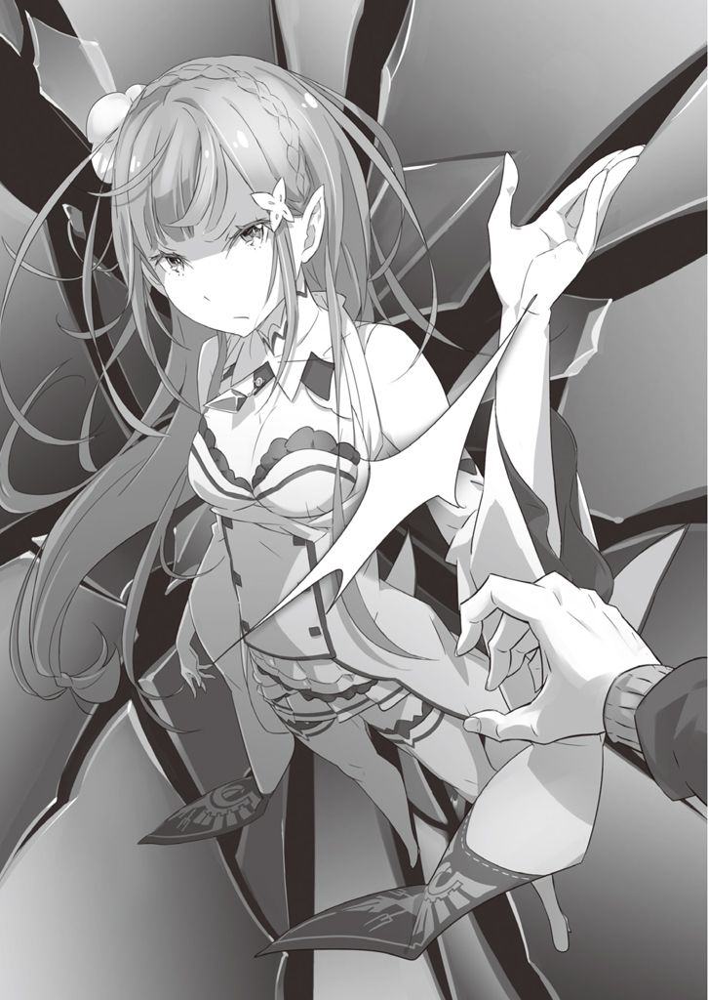
にもかかわらず、彼女はそのことを弾劾し、そして周囲もそれが正しいと肯定する。
「──用がないなら行くわ。私も暇じゃないの」
うなだれるだけのスバルに断ち切るように言って、銀髪をひるがえらせ颯爽と少女が歩き出す。その背中に声をかけようとして、とっさに名前を呼びかけた喉が凍る。
名前で呼べば二度目の過ちだ。だが、それなら少女をなんと呼べば。
その躊躇がスバルの判断を鈍らせた。
「────っ！」
小さく息を呑む声がしたのは、スバルの身長より頭一つ高い位置──露天商の屋台、その幌立ての屋根の上からだった。
跳躍。小柄な体が重力に引かれて軽やかに落ち、着地と同時に風に乗って加速する。
疾風は薄汚れた服を着て、金色の髪をなびかせていた。人込みを神がかり的な体捌きですり抜けると、スッと伸びた腕が鷹の刺繍の入ったローブの中へ侵入する。
接触は一瞬、しかし、風にとってはその刹那の邂逅で十分だった。
風がローブをはためかせ、身をよじる少女から跳ねるように飛びずさる。
「まさか──！」
銀髪の少女が驚愕の声を上げ、己のローブの内に手を入れる。
そこに目的のものが見つからず、見開く少女の目が追うのは急速に遠ざかる風の行方。
その風の手に握られた竜を象った徽章、そして後ろ姿を見てとっさにスバルは叫ぶ。
「フェルト!?」
呼びかけに風が戸惑うように揺れる。が、その速度はゆるまずに一気に大通りから細い路地へと飛び込んでいく。すさまじい早業。ほんの一瞬だけしか見えなかったが、あの姿はおそらく──
「やられたっ。このための足止め......あなたもグル!?」
棒立ちのスバルに悔しげに少女がうなる。
とっさに少女はこちらに掌を向けかけたが、すぐに思い直したように、風の消えた路地へと走り出していった。
「おい、待て！ 誤解だ！ 俺は......っ」
その誤解を解こうと、スバルもまた路地へと二人の影を追う。
走りながら、スバルの胸中は不可思議への疑問でいっぱいになっていた。
詰め込まれる情報量が多すぎて、焦る頭では処理し切れない。それでなくても、今日は二度も死ぬような目にあって混乱しているのだ。
「誰かもっと、俺に優しくしろよ！ 何のための異世界召喚だよ！」
理不尽に対して暴言を吐き、薄暗い路地をふらつきながら駆け抜ける。
持久力に自信はないが、短距離での瞬発力なら少女二人に引けをとらない。すぐに追いついてこの疑問を晴らしてやる。──そんな心積もりで走っていたのだが、
「しまった......壁か！」
吐き捨てるスバルの眼前、待ち受けるのは行き止まりの袋小路だ。
そこに二人の姿はない。フェルトの身軽さならば壁など楽々とよじ登れるだろうし、サテラも魔法を使えばその程度のことはわけがないはずだ。
「よじ登ってもいいが......追いつけると思えねぇ」
ここで時間を食うわけにはいかない。ただでさえ土地勘のない王都で、一度見失った相手を追い詰めるなどスバルには不可能だ。
「ここがダメなら盗品蔵か？ サテラとフェルトが生きてるんなら、ロム爺だって......」
自分で口にしながら、スバルの胸中を数多の違和感が掠めて入り乱れる。
撫で切りにされたフェルトが、首を切られたロム爺が、血の海に沈んだサテラが。
そしてなにより、二度にもわたって腹を裂かれたスバルはどうして今も生きて──
「違う。なんだ、それどころじゃない。やめろ、考えるな。今はとにかく──」
先回りして、ロム爺との合流を急ぐべきだと思考を後回しにする。
袋小路を出て、貧民街へ向かうのが最優先。そうしてスバルは振り返る。
「......嘘だろ、オイ」
視線の先には、路地の入口を塞ぐ人影があった。
三人。薄汚い身なり。野蛮で粗暴な荒々しい雰囲気。
路地裏を狩り場とするチンピラ三人組と、この日、三度目の遭遇だった。
３
「いい加減にしろよ！ 性懲りもないにもほどがあんだろうがぁ！」
見飽きた三つの雁首に向かって、スバルは地面を踏み鳴らして怒りをぶつける。
三度の邂逅、その全部が路地裏で三対一の状態だ。一度目、二度目とあれだけ徒労でしかない結果に終わっていながら、それでもスバルを獲物に選ぶ執念深さには驚嘆する。
「相手してやる時間も心の余裕もねぇんだよ。今すぐ、そこ通しやがれ！」
切迫した状況がスバルから冷静さを奪っているが、それでも前回の乱闘を思えば強めの恫喝で相手は怯むはず、という打算はあった。
「通せ、だってよ。気に入らねえ態度だな。命令すんのがどっちかわかってねえよ」
「三対一で無様に負けといて、どの面で大口叩くんだ、お前ら。......負け犬だってもうちょっと申し訳なさそうに遠吠えするぞ」
しかし、男たちはスバルを恐れることなく減らず口を叩く。予想と違う男たちの反応に唇を噛んだ。小悪党には小悪党なりのプライドがあるということか。
ここで時間を取られてサテラたちを見失うのは避けたい。揉み合いになった場合のリスクも、スバルにこの場を穏便に収めさせることを決断させる。
「わかった。抵抗しない。持ち物は全部置いてく。それでいいだろ」
苛立ちを堪えて両手を上げ、敵意がないことをアピール。
スバルの譲歩する態度に男たちは顔を見合わせると、その場で揃って爆笑した。
「んだよ、最初からビビってんならそうしろってんだよ、アホ」
「クソが。怖気づくくらいならでかい口叩いてんじゃねえ」
「いいんじゃねーの。なーんにもしないで言うこと聞くんだろ？ 腰抜け」
カチンとくるワードを「ハハハ」と乾いた愛想笑いで受け流す。懲りない三人組を心中で『トン・チン・カン』と名付け、ひそかに溜飲を下げながら、
「サテラと無事に合流できたら、パック借りて逆襲してや......る？」
男たちを刺激しないように、手持ちのものを広げようとしたスバルの動きが止まる。
「あれ──？」
それは異世界にきて最大級の、スバルを襲った違和感そのものであった。
「なん、で」
呻くように呟くスバルの指先、触れるのはビニール袋の中に入ったスナック菓子。お気に入りのコーンポタージュ味で、夜食代わりにコンビニでもつい手が伸びてしまった。
そしてロム爺との酒盛りの場で、夕餉の一品にと振舞って後悔したはずだったのだが。
──その菓子が、中身をいっぱいにした状態でコンビニ袋の中に詰まっている。
「無くなったはず、だ。ロム爺に全部食われて、文句言って......残ってなかった。絶対に」
なぜか袋の中身が戻っている。開けた形跡もない、異常な状況だ。
思考は八方ふさがり。だが、塞がった思考の中でスバルはこの現象にある種の結論を見つけていた。結論していながら発展を見せないのは、思い当たったその可能性が荒唐無稽すぎて、ありえないと理性が否定していたからだ。
「おいコラ、てめえ、なにしてやがる」
「──あ？」
ふいにすぐ近くで声をかけられ、スバルは呆気にとられた声を出していた。
男たちの中の一人。一番小柄で『カン』と名付けた男だ。いつの間にかすぐ傍らに立っている彼の手が肩に触れている。身をよじり、その手を跳ね除ける。
「どけ......」
「あぁ？」
「色んな意味で、お前らに構ってる暇がなくなった。確かめ、ねぇと」
「お前、本当にふざけんなよ？」
カンを押しのけて路地を出ようとするスバルに、殺気立った残りの二人が立ちはだかる。
「邪魔だ！ 俺はいかなきゃいけねぇところがあるんだよ！」
あまりに馬鹿馬鹿しい、常識外れな愚考を否定するために。
スバルの怒声にかすかに男たちが怯んだ。その隙に路地を駆け抜け、大通りに出てしまえば窮地は脱せられるだろう。そう結論し、スバルは力強く地面を踏む。
が──
「──ぇ」
踏み出した足がぐらりと揺れて、膝から力が抜けて躓いてしまう。前のめりに手をついて、このタイミングで転んだ自分の馬鹿さ加減を叱咤する。
「あれ、おかしいな......」
立ち上がるために力を込めようとして、立てた腕がガクガク震える。とてもではないが体を持ち上げられない。それどころか、上体を起こすこともできない。
「ああ、やっちまった......っ」
焦燥感を帯びた声に、スバルは首をそちらへ向ける。そして気付いた。
──倒れるスバルの背中、腰の後ろにナイフが突き刺さっているのだ。
「ごぁっ......がっ......」
意識した瞬間、堪え難い激痛が喉を塞いだ。極々純粋で原始的な苦痛の衝動。
──刺された！ 刺された刺された刺された刺された刺された刺された。
ナイフを持っていた『チン』が先走ったのだ。早々と凶器を抜いたチンに気付かず、無理やりに押しのけようとしたときに刺されたらしい。
この数時間でもはや何度も味わった類の激痛。しかし、何度味わったとしても、この痛みに慣れることなど未来永劫ありえない。
「おい！ 刺しちまったのかよ」
「仕方ねえだろ！ 表に逃げられてみろ。面倒なんて話じゃねえ」
「やめろ、馬鹿！ あー、こりゃ駄目だ。腹の中身が傷付いてっから死ぬぞ、オイ」
巨漢の『トン』がスバルの体を動かす。途端、ひっくり返された体に刺さっていたナイフがより深々と沈み、
「──ぉぅぐ」
激痛の上に別の痛みを重ねられて、断末魔の叫びすらもキャンセルされる。
助けを呼ぶことも、怒りを叫ぶことも、スバルには何も残されていなかった。
掠れた荒い息を繰り返し、こみ上げる血が喉を浸して溺れそうになる。手足の感覚が徐々に遠ざかり、思考は今にも途切れそうなほど弱々しく点滅していた。
またしても、視界が真っ暗に染まり出す。前回のように、今回も終わる。
──今回って、なんだよ。
馬鹿馬鹿しいと切り捨てたはずの考えに、縋っている自分がいるのが哀れだった。
その哀れな考えに縋るのなら、いっそとことん縋ってやろうとも思う。
──死ぬことから意識をそらせ。死ぬ前に、世界を把握しろ。
目は死んでいる。手足も終わっている。残っているのは鼻と耳ぐらいだ。ならばその両方を最後の最後まで酷使する。どんな残り香でもいいし、罵声を聞かされるのでも構わない。路地の泥の臭い。こみ上げてくる血の鉄臭い香り。今、鼻が死んだ。死んだ。耳も残りわずかしか活動できそうにない。
「......にか、金目......でも持っ......」
「......った！ 衛兵が......つけ......る！」
「............げろ！ ヤバい！ ......ったらシャレになら......!!」
拾えたのはそんなごくわずかの会話だけ。拾えたのはいいが、それをどういう意味か理解するための脳がすでに死んでいる。死んでいるから聞いただけ。聞いたそれを覚えておけるかはわからない。覚えておくってなんだろう。おぼえておいてどうしたいんだろう。どうしたいってなんだろう。なんだろうって──。
なによりも先に死んだ脳に従うように、他の機能も次々と息絶えて、最後には抜けるような掠れた音を吐いて、ナツキ・スバルは三度──命を落とした。
４
意識が覚醒したとき、スバルは闇の中にいた。
それが己の作った闇であると気付き、閉じていた瞼をそっと開く。眩しい日差しが瞳を焼いた。スバルは小さく呻いて掌でひさしを作る。
「兄ちゃん、リンガは？」
聞き慣れた声色が、聞き慣れた問いかけをスバルに投げかけていた。
耳は正常。大通りの喧騒は変わらぬ騒がしさで、終わる寸前の静寂とは程遠い。
距離にしてみれば通りを一本、横に折れただけの違いでしかないのに。
「その通りを一本、曲がるのもできねぇとは情けねぇな」
質問の返答でないことに果物屋の店主は不機嫌そうに顔をしかめる。白い傷跡が引きつるのが見えて、なんとも凶悪な面貌だ。
しかし、彼が実は意外と世話焼きで子煩悩な人物であることをスバルは知っている。
──もっとも、主人はそのことを覚えていないのだろうと思う。
そんな風に考えながら、スバルは改めて傷面の店主に向き直った。
「俺のこの顔を見るのって何回目？」
「何回もなにも新顔だろが。その目立つ格好と目つきなら忘れねえぜ？」
「目つきのことはうるせぇよ。ちなみに、今日って何月何日でしたっけ」
「タンムズの月、十四日だ。もう暦の上じゃ今年も半分だよな」
「へぇ、ありがと。──なるほどなぁ。タンムズの月なぁ」
聞いてもわからなかった。そもそもこの世界で、暦はどんな風に記録されているのだろうか。太陽暦と考えるのはさすがに無理があると思うが。
「で、兄ちゃん、リンガは？」
黙り込むスバルに辛抱強く付き合ってくれた店主だが、リンゴ一つでこれだけ手間取る相手への愛想はそろそろ限界らしい。頬がひきつり始めている。
ただでさえ、笑顔が似合わない顔つきの人物だ。精いっぱいのスマイルがかえって客足を遠ざける結果になりかねないあたり、神が店主に与えた天命はあまりに残酷だった。
そんな彼への返答を、スバルは腰に手を当てて胸を張り、
「悪いけど、天壌無窮の一文無し！」
「とっとと失せろ──！」
思わずのけ反るほどの怒声を浴びせられ、ほうほうの体でスバルは逃げる。
もうしばらくはあの店には寄れないな、と二つの意味で思いながら。
第四章 『四度目の正直』
１
「財布、ある。ケータイ、ある。コンポタとカップ麺も無問題。ジャージとスニーカーに綻びナッシング。そして当然......」
ジャージの裾をめくり、首を後ろに向けてえっちらおっちらと背中を確認。
正面の腹、そして腰の後ろあたり。どちらにも傷跡は見当たらず、そこからナイフが生えているというような異常事態も起こっていなかった。
「ふぅ、よかったぜ。背中の傷とかマジ剣士の恥だかんな。中学で剣道やってた身としては、人の道は踏み外しても剣士の道は踏み外せねぇ」
日差しは高く、柔らかな風が肌をくすぐる。大通りを賑わう人々が行き交い、今もまた一台のトカゲの馬車が通過する。
「さて、こんだけ状況証拠が揃うと認めるしかねぇか。ちょいと信じ難いことだけど......」
体からは負傷の一切が消え、ジャージもほつれや血の跡などどこにも見当たらない。手の中のビニール袋には、未開封のスナック菓子がスバルの小腹を癒すのを待っている。
「つまり、アレだな」
顎に触れていた手を前に向け、スバルは通りを行く人々に見えるように指を鳴らし、
「──死ぬたびに初期状態に戻ってる、ってことらしい」
馬鹿馬鹿しいと決めつけていた、そんな考えを結論とすることにした。
２
「名付けて『死に戻り』か......。負け犬前提な能力なのが実に俺らしいというか」
命を落として初めて発動する能力。敗北必至の状態から大逆転するのが王道だとすれば、敗北してからやり直しの機会を得る実に邪道な権能。
「もっとまともに言うと......『時間遡行』ってことになんのか、これ」
限定的な条件下でのループ現象。ゲーム的にいえばスバル自身の意思とは無関係に、オートセーブされた位置へ、死亡することで舞い戻っていると考えられる。
「ループ、あるいはタイムリープ、ね。漫画とかだとお馴染みだけど、確か理論的に難しいとかどっかで見たような......世界丸ごと作り直した方が楽みたいな」
広く浅くがモットーの、ネット上の波乗りとしての知識に頼れば、時間遡行など夢のまた夢の夢物語。もっとも、異世界召喚の時点で常識など今さらではあるのだが。
「それに『死に戻り』してたって考えると、これまでの不自然さが全部うまいこと辻褄合っちまうからな」
振り返ってみると、スバルはこの異世界ですでに三度命を落としたことになる。
一度目のサテラと共に盗品蔵を訪れたパターンと、二度目のロム爺やフェルトと共にエルザの凶刃の餌食になったパターン。そして、三度目の体感時間で十数分前の犬死に。
一度目、二度目の死と違い、三度目の死は言い訳無用の最低の展開だ。まさか最序盤の雑魚キャラに殺されようとは思わなかった。
「っていうか、半日で三回も死ぬってちょっとハイペースすぎるだろ」
普通の人生が一回こっきりなことを思うと、たった半日で三回の死亡は常識を覆したといえる。十七年間、わりと平凡に生きてきたつもりだったが、これまで十七年間×三百六十五日×三回もデッドオアアライブを掻い潜って生きてきたのだと思うと感慨深い。
「もしくは生きるのが絶望的にヘタクソだ」
元の世界とこちらの世界の生きる難易度の違いが大きすぎる。命の危機に瀕する場面が、スバルの行く先々に立ちふさがりすぎなのだ。
「一度目と二度目の共通項からして......たぶん、一度目もエルザだったんだろうな」
一度目の世界、盗品蔵の闇に潜んでいたのはエルザだったのだろう。
大柄な老人の屍はやはりロム爺であり、スバルとサテラが到着したのは彼らの交渉のあとのことだったのだ。
「たぶんだけど、フェルトの奴が欲掻いて交渉が決裂した結果......ってとこか」
エルザの口封じが終了した場面に、スバルとサテラは運悪く出くわしたというわけだ。
「二度目はもっと単純だな。その口封じの場面に俺が居合わせただけだ。......二回も同じ相手に殺されてるとか、エルザの奴は会った時点で死亡確定の地雷キャラかよ」
軽口めいた語調で誤魔化しながら、スバルはエルザへの恐怖を紛らわそうとする。
そもそも、エルザと出会った場合の可能性を考慮することすらおかしな話だ。エルザと遭遇する可能性があるのは『盗品蔵』のみ。
そしてスバルが盗品蔵に向かう理由は、盗まれたサテラの徽章を取り戻すためであり、その目的は『サテラに救われた恩を返す』という理由を発端にしている。
しかし、『死に戻り』によって時間を遡ったスバルにとって、サテラへの恩義は消えたはずの最初の世界に置き去りにしてきているのだ。
三度目の世界で、再会──接触したサテラの冷徹な反応がそれを物語っている。
サテラはスバルを知らない。返すはずだった恩義はもう、どこかへ消えてしまった。
ならばサテラのことなど全て忘れて、あの脅威を避ける方向に意識を向けるべきだ。
どうして『死に戻り』なんて状況が用意されたのかはわからないが、せっかく未来のことを知れる技能を得たのだ。避けられる地雷は避けて通る。それが正しい。
「そうとなりゃ、さっそく行動だ。幸い、携帯が金になるのはわかってるし、これ売っ払って軍資金作って、現代知識でウハウハライフだ。夢が広がるぜ、なあ、オッサン」
「さっきからブツブツ言ってると思ったらなんだネ、急に。なあ、とか言われても知らないヨ、ワタシは」
隣の露天商が、同意を求めるスバルに迷惑そうな顔で答える。
冷たい反応にスバルのナイーブな心が少し傷付く。行きずりの他人に接する人間の心のありようは、どの世界でもそうそう変わるものでもない。
「でもさ、自分が切羽詰まってても人のこと助けちまうお人好しもいんだよ」
大切なものが盗まれたあとで、それを盗んだ相手を追いかけている途中で。
無関係の役立たずを助けて、そんな奴を時間をかけて治療してやって、そのお礼も受け取らないで立ち去ろうとして。
役立たずの自己満足に付き合って、ひどい最期を迎えさせてしまったお人好しが。
「三回も繰り返してみると、色々とわかってくることもある。いや、それでわかってこなかったらだいぶ頭可哀想だけど、俺の頭はそこまで可哀想じゃない。ぷち可哀想だ」
「何を言い出したのヨ、今度は」
「たぶん、パターンがあんだよ。必然ってか──何度やり直しても、この展開は必ず起きるって強い強制力が。たとえば......」
一度目でも二度目でも、三度目でも、サテラはフェルトに徽章を盗まれる。
そして盗品蔵では一度目も二度目も、エルザによる惨殺が起きた。三度目の世界も、スバルの無駄死にとは無関係にきっと同じ惨劇が起きたことだろう。
「エルザに勝てるのかわからねぇ。わからねぇままだ。けど、わかることもある」
このまま四度目の今回も事態を放置しておけば、間違いなくフェルトとロム爺の二人はエルザに殺される。サテラも、エルザと一戦交えることは避けられない。
あの二人が死ぬからなんだというのか。盗品を裏で売りさばく小悪党と、盗んだ品物を悪びれもせずに高値で売りつけようとする剛腹な小娘だ。
二人まとめて犯罪者。いなくなって、清々するというものではないか。なのに──
「あー、やっぱ俺って現代っ子ってことなんだろうなぁ。こんな気持ち、パソコンの前じゃすっげぇ馬鹿にしてたくせによぉ」
同情とか慈悲とか、そんなの馬鹿馬鹿しいと振舞っていたはずだ。
少なくとも、スバル自身はそれを偽ってきたとは思っていない。自分は情が薄い人間だと思っていた。だからどんな事態に陥ったとしても、さほどの情動もなく淡々と受け止めるものと思い込んできた。知人が何人か死ぬぐらい、大したことじゃないと思ってきた。
「なのに、嫌なんだよ。気持ち悪ぃんだ。善人とは二人とも程遠いよ。──でも、いっぺん知り合った奴らが殺されるって知ってて、見過ごすのは無理だな」
けっきょくは、そう振舞っていただけという話なのだろう。
全てはバーチャル感覚でのお話。実際にそれがリアルな重みを伴えば、容易く宗旨替えしてしまう程度の薄っぺらさでしかない。
「それにやっぱサテラ......ってか、あの子も見捨てられねぇし」
名前を呼びかけて、彼女の名前が偽名なのだろうなとスバルは思う。
思い返せば一度目の世界で、彼女はその名前をあまり口にしたがってはいなかった。その上での三度目の世界のやり取りだ。嫌でも痛感させられる。
ようするに信頼が足りなかったということだろう。好感度不足だったため、名前獲得イベントの成否処理で失敗判定を食らったということだ。
「んだらば、今度は名前くらい、ちゃーんと教えてもらえるように頑張りますか」
屈伸して、スバルは体中の骨を鳴らしながら気合いを入れ直す。スバルの奇行に露天商の主人は驚き顔。そんな彼にスバルはシュタッと手を上げ、
「男にはやらなきゃならねぇときがある。──そうだろ、オッサン」
「そうネそうネそうヨその通りヨ。だからとっとと行ってヨ」
わりと決め顔で名台詞を口走ったつもりが、反応の悪さに頬が引きつりそうになる。
おざなりの手振りで背中を押されて、スバルはすたこらとその場を退去。そのまま人込みをかき分けて二百メートルほど走って立ち止まる。
「さて......」
スバルは短い前髪をかき上げるアクション。無駄に爽やかさを演出しつつ、右へ左へ視線を走らせ、自然な動きで壁に手を当てて体重を預け、
「偽サテラって、どこ行ったら会えっかな」
と、かなり先行き不安な発言で見切り発車が始まった。
３
考えてみると、偽サテラとの接触はかなり偶然に頼った部分が多い。
一度目、三度目が偽サテラと街中で遭遇したパターンだが、共通点はどちらもこの大通りからそんなに離れていないという点のみ。せめてフェルトによる盗難事件の発生時刻だけでもわかればよいのだが──
「あのとき、俺って果物屋の横でどんぐらい鬱モードしてたんかなぁ」
ほんの数分だった気もするし、小一時間ウジウジしていたような気もする。
「適当にうろついて、運命力に任せてみるか。俺とあの子の赤い糸に期待して」
頭の前で両手の小指を立てて、「みょんみょん」と言うスバルに周囲は奇異の視線を浴びせる。そのまま捜索を続行すると、次第にどこか見覚えのある景色になり始めた。
「案外、俺の運命力も捨てたもんじゃなくね!?」
自惚れつつ、ふと気付く。──いつの間にか、通りを外れて路地に入り込んでいた。
「ここって、最初に偽サテラと会った場所か......？」
似ている気がするが、イマイチ自信がない。ただ、同じ路地だとしても彼女がここへ駆け込んでくるかについては疑問が残る。
「三度目で殺された袋小路は完全に違う場所だったしな......」
偽サテラがフェルトに徽章を盗まれる出来事が確定事項だったとしても、フェルトの逃走ルートは状況によって異なるのだ。一度目、二度目は同じ路地だったかもしれないが、三度目はスバルの干渉があったことで運命が微妙にずれていた。
そこまで考えて、はたとスバルは自分の考えの浅はかさに気付く。
見覚えのある路地に入れば、偽サテラやフェルトと遭遇できるかもしれない。しかし、それはある意味、別の再会をも意味するのである。つまるところ、
「もういい加減、お前らの顔も見飽きたぜ、トン・チン・カン」
げんなりして振り返るスバルの正面、路地を塞ぐ毎度の三人が立っていた。
風貌も服装も人相も全部一緒。その目的も一緒なら装備も一緒だろう、進歩なしだ。同じところで足踏みしてるのだから当たり前だが。
「偽サテラとフェルトにはなかなか会えねぇってのに」
偽サテラたちに会えないのは、彼女たちの行動がかなりスバル以外のランダム要素の影響を受けるからだろう。逆に毎回スバルとトンチンカンが遭遇するのは、トンチンカンが最初からスバルを恐喝の標的に定めているからということらしい。
だから毎度毎度、違う路地を選んだとしても彼らとのイベントは不可避なのだ。
「全然、心ときめかない推測が成り立ったところで、どうしたいのよ、お前ら」
「さっきっからブツブツと、何を言ってんだ、あいつ」
「状況がわかってないんだろ。教えてやったらいいんじゃないか？」
トンとチンの会話ももはや定番をなぞったもので、さらにスバルの気分を沈ませる。が、げんなりする反面、舐めてかかってはいけない。
トンチンカンとの遭遇のクリア条件は緩めだが、それでも百パーセント突破が可能というわけでもない。事実、三度目の死因は彼らなわけで。
そうして、スバルはふと三度目の世界の死の間際の記憶に意識を向けた。
あの状況下で、死に瀕していた状況で、スバルは音だけを必死に拾い続けていた。
そのときにトンチンカンが最後に話していた内容を思い出す。トンチンカンは何を恐れていた？ 口走った単語が、今ならば理解できるはず。──確か、そう。
「衛兵さ───ん!!」
予備動作なしの救難信号に、虚を突かれたトンチンカンが思わず飛び上がる。
路地裏の静寂を打ち砕き、大通りの喧騒にまで間違いなく割り込んだだろう声量。剣道で慣らした阿呆のような神経は、大声を出すことへの羞恥心などとうに消している。
そして人生レベルで負け犬であることを自覚しているスバルにとって、誰かに助けを求めるために声を上げることなど、いささかもプライドを傷付けることではない。
「誰か───！ 男の人呼んで───!!」
「てめ......っ、ふざけんなよ!? ここで普通、いきなり大声出すか!?」
「状況的にこっちの命令聞かなきゃ痛い目見る流れだろうが！ 口上も聞かずに助け呼ぶとかやんねーぞ、普通は！」
「はぁー!? それどちらの世界の普通ですかぁ？ っていうかそれ、大声出されたら困ることしようとしてるってことじゃないですか、やだー」
「いいから黙れや！ っざっけんなよ！」
「やだ、聞こえなーい！ 誠意が足りなくて聞こえなーい！ お巡りさーん!!」
さらに大声を上げてトンチンカンを翻弄しつつ、しかしスバルの内心は冷や汗全開だ。
三度目の世界の最期、意識が落ちる寸前、トンチンカンは「衛兵」だの「逃げろ」だのと口走っていた。つまり、この世界にも警察機構的な存在があるということ。
助けを呼ぶ、というのはそこから着想を得た、我ながら非常にしょぼい作戦である。
しかし残念ながら、大通りからは人情味溢れるリアクションが見られない。
「やっぱ、失敗か......」
「おどかしやがって......ほんの少しばかりだが、ビビっちまったじゃねえか」
「ほんの少しだけな！」
「ほんのちょびっとだけだけどな！」
息の合った連携で、自分たちの小者ぶりを否定する小者ぶりを見せるトンチンカン。
スバルに持っていかれたペースを取り戻そうとするように、男たちは一度顔を見合わせると頷き合い、各々が獲物を手にし始める。ナイフ、錆びた鉈。そして、
「一人だけ素手ってなんなの？ 武器買うお金がなかったの？」
「うるっせえな！ 俺は武器ない方が強いんだよ！ 殴り殺すぞ、クソが！」
「そんなお前に二度目の世界が見せられるなら見せてやりたい」
綺麗な裏投げを思い返し、我ながら惚れ惚れする心境。その反面、「かなりヤバい」を胸中で連呼してしまう程度に状況は悪い。突破がかなり厳しくなってしまった。
「勘弁してくれよ。......痛いのはごめんだ」
三度死んだからわかる話だが、死ぬというのは何度やっても慣れるものではない。
ましてやスバルの死因は今のところ、全て刃物によるものだ。鋭い痛みはいつだって新鮮で、神経を削り取るように終わらせる感覚はいつでも衝撃的だ。
そんな死に方は二度とごめんだし、なにより──
「今まで『死に戻り』してきたからって、今回もできるとは限らねぇ......」
『死に戻り』の能力が回数制限付きでないなどと、どうして思えるだろうか。
体のどこかに数字が刻まれている形跡はないが、仏の顔も三度までともいう。この状況が御仏の慈悲の賜物なら、スバルのコンティニュー回数はすでに打ち止めだ。
「死んだら俺の異世界生活これにて完結。......傷負ってでも逃げるが正解か」
殺傷力が高いのは当然、信頼と実績のナイフ。鉈は意外と錆が強く、ビニール袋を盾にすれば打撲で済みそうな気配。そしてステゴロは安定のスルー。
歩み寄ってくるトンチンカンを見ながら、スバルは即行で腹を決める。
チンにのみ警戒を払って、その間を抜ける秒読みを頭の中で開始。──三、二、
「──そこまでだ」
その声は唐突に、しかし明確に、路地裏の渇いた緊迫感を切り裂いていった。
凛とした声音には欠片の躊躇もなく、一切の容赦も含まれていない。聞くものにただ圧倒的な存在感だけを叩きつけ、その意思を伝わせるそれは天性のものだ。
スバルが顔を上げ、トンチンカンが振り返る──その先、一人の青年が立っている。
まず何よりも目を惹くのは、燃え上がる炎のように赤い頭髪。
その下には勇猛以外の譬えようがないほどに輝く青い双眸がある。異常なまでに整った顔立ちもその凛々しさを後押しし、一瞥しただけで彼が一角の人物であると存在が知らしめていた。
すらりと細い長身を、仕立てのいい黒い服に包み、その腰にシンプルな装飾──ただし、尋常でない威圧感を放つ騎士剣を下げている。
「たとえどんな事情があろうと、それ以上、彼への狼藉は認めない。そこまでだ」
言いながら、青年は悠々とトンチンカンの隣を抜けて、彼らとスバルの間に割って入る。そのあまりに堂々とした態度にスバルは言葉を失うが、トンチンカンの反応は違う。
トンチンカンは顔を蒼白にし、唇を震わせながら青年を指差した。
「も、燃える赤髪に空色の瞳......それに、鞘に龍爪の刻まれた騎士剣。まさか......」
信じられないものを見る目で青年を見つめて、彼らは一様に声を揃えた。
「ラインハルト......。『剣聖』ラインハルトか!?」
「自己紹介の必要はなさそうだ。......もっとも、その二つ名は僕にはまだ重すぎる」
ラインハルトと呼ばれた青年は自嘲げに呟き、しかし眼光を決してゆるめない。
視線に射抜かれた男たちは気圧されるように後ろへ一歩。逃げるタイミングを見計らうように顔を見合わせる。
「逃げるのならこの場は見逃す。そのまま通りへ向かうといい。もしも強硬手段に出るというのなら、相手になろう」
腰に下げた剣の柄に手を当てて、ラインハルトは後ろに立つスバルを示すように顎をしゃくる。
「その場合は三対二だ。数の上ではそちらが有利。僕の微力がどれほど彼の助けになるかわからないが、騎士として抗わせてもらうよ」
「じょ、冗談!? わり合わねーよ！」
言い放つラインハルトにトンチンカンは慌てふためいた。得物を隠す配慮すら忘れて蜘蛛の子を散らすように大通りへ逃げ去って行く。一度目のときにあった捨て台詞すら残せない逃げっぷり。それだけ目の前に立つ青年の規格外さが際立つというものだ。
「お互い無事でよかった。ケガはないかい？」
トンチンカンが完全に消えたのを見計らって、青年が微笑を浮かべて振り返った。
途端、路地裏を席巻していた威圧感が消失。それすらも意識的に青年がやっていたことだと体感して、スバルはもはや絶句するしかない。
そしてなにより、
「あんだけのことしてこの爽やかさ......もはや同じ人類じゃねぇぞ」
顔と声と佇まいと行動、全てが高水準で人間純度が高すぎる。これで性格と家柄までよかったら、裏で何か悪事を働いてくれていないと釣り合いが取れないレベルだ。
そんな嫉妬心丸出しの心境はさて置き、スバルはその場に「へへー」と平伏する。
「この度は命を救っていただき、心からお礼申し上げる。このナツキ・スバル、その御心の清廉さに感服いたしますれば......」
「そんなに固く考えなくても構わないよ。向こうも三対二になって、優位性を確保できなくなってのことだ。僕が一人ならこうはいかなかった」
「いや、あのビビりようからしたら三対一どころか十対一。いや百対一でも逃げてそうだったけど......なんだこの爽やか指数。本気で身も心も聖人か。眩しくて目が潰れるわ！」
実際、造形美の差がありすぎて隣に並びたくない。
スバルはラインハルトを改めて観察するが、見れば見るほど神に選ばれたとしか思えない美男子だ。ただ、その格好を見るにどうも衛兵という感じではない。
「えーっと、ラインハルトさん......でいいんスか？」
「呼び捨てで構わないよ、スバル」
「さらっと距離詰めてきたな。えっと、改めてありがとう、ラインハルト。俺の叫びを聞いて駆けつけてくれたのはお前だけだぜ、マジ寂しい」
あれだけ通りに人がいて、聞こえたのがラインハルト一人ということはないだろう。人心の寂れっぷりを嘆くスバルに、ラインハルトはわずかに目を伏せる。
「あまり言いたくはないけど、仕方のない面もある。多くの人にとって、彼らのようなものと反目するのはリスクが大きい。その点、衛兵を呼んだ君の判断は正しかったよ」
「その言い方だと、ラインハルトって衛兵なの？ 全然、そうは見えないけど」
「よく言われるよ。今日は非番で制服を着ていないのもあるし、見た目に厳つさが足りないのは自覚しているところだからね」
苦笑いしながら両手を広げるラインハルトに、スバルは内心で反論。
ラインハルトが衛兵に見えない最大の要因は、そんな泥臭いイメージとかけ離れた雰囲気がなせる業だ。
「そういえば、『剣聖』とかって呼ばれてた気がするが......」
「家が少しだけ特殊でね。かけられた期待の重さに潰れそうな日々だとも」
肩をすくめて気軽さを見せる。どうやらユーモアも持ち合わせているらしい。
もはや心身ともに完璧超人であることに疑いの余地なし。スバルは神の不公平さに嘆くのを通り越して感心する。
「珍しい髪と服装、それに名前だと思ったけど......スバルはどこから？ 王都ルグニカにはどんな理由できたんだい？」
ラインハルトがスバルの格好をじっと見下ろして質問してくる。素姓の怪しい相手に対して、衛兵ならば当然の反応だろう。
「どこからって言われると答えづらいんだよな。東の小国は駄目だったから......さらに東、そう。誰も見たことのない、果てからきたのさ」
歯を光らせての戯言。我ながら安直な答えだと自省の限り。だが、スバルの答えにラインハルトは眉を上げて驚く。
「ルグニカより東......まさか、大瀑布の向こうって冗談かい？」
「大瀑布？」
聞き慣れない単語に首をひねるスバル。
瀑布、というと滝かなにかだったと思うが、このあたりの地理情報には疎いというか完全に無知のスバルには考えが及ばない。スバルにとってこの世界の地理情報は、大通りとこの路地裏。そして貧民街と盗品蔵で完結している。
「誤魔化してるってわけでもないようだけど、そこはいいか。とにかく、王都の人間じゃないのは確かなようだけど、何か理由があってのことだろう？ 今のルグニカは平時より少し落ち着かない状況にある。僕でよければ手伝うけど」
「いやいや、休日なんだろ？ それ返上してまで俺の手伝いなんてすることねぇよ。さっきので十分......だけど、ついでにちょこーっと聞きたいことはある」
ラインハルトの申し出に首を振ってから、スバルはふと思い出したように指を立てる。
「なんでも聞いてくれ。世情には疎い方だから、答えられるかどうかはわからないけどね」
「んにゃ、聞きたいことってのは人探しだから平気。ってなわけで聞きたいんだけど、このあたりで白いローブ着た銀髪の女の子って見てない？」
偽サテラの格好はかなり目立つ類のものだ。中でも頭髪の色と鷹の刺繍が入ったローブの取り合わせは目立つの一言。あの格好で王都を歩き回っていたのなら、街の衛兵であるラインハルトも気付いている可能性がある。
「白いローブに、銀髪......」
「付け加えると超絶美少女。で、猫......は別に見せびらかしてるわけじゃないか。情報的にはそんなもんなんだけど」
猫型の精霊を連れている、まで合致すれば彼女であることは疑いようもないが、通常時は銀髪の中で遊んでいるはずだからそれは高望みだ。
「......その子を見つけて、どうするんだい？」
「落し物、この場合は探し物か？ それを届けてあげたいだけだよ」
もっとも、それはまだスバルの手の中にはないし、ひょっとしたら少女はまだなくしてすらいないのかもしれないのだが。
スバルの答えにラインハルトはその空色の瞳を細め、しばし黙考してから答えた。
「ううん、すまない。ちょっと心当たりはないな。もしよければ探すのを手伝うけど」
「そこまで面倒はかけられねぇよ。大丈夫、あとはどうとでも探すさ」
手伝いを申し出るラインハルトに手を挙げ、スバルはとりあえず大通りから回ることに決める。うまくいけば三度目のように通りで見かけることもあるだろう。
なんなら盗まれるその場で、フェルトを捕まえて徽章奪取を阻止してもいい。後々のことを考えると、それが手っ取り早いような気もして、なおのこと急がなくてはと思う。
「問題はフェルトのはしっこさをどう捕まえるかだな。最悪、盗品蔵に衛兵ごとお宅訪問してしょっぴくのが確実な気もしてきたけど......」
「盗品蔵？」
「あ、いや、なんでもない。忘れてくれ。いい歳した爺さんの秘密基地の名前だ」
反応するラインハルトに適当な誤魔化しを入れつつ、スバルは思いついた案を却下。そもそも、エルザを相手に衛兵を引き連れていっても被害者が増えるだけの可能性が高い。それほど、あの殺人者の技量は人外の域にあった。
「この世界の衛兵が揃って超人でない限りな。......ともあれ、まずは大通りの確認か」
「行くのかい？」
「ああ、行く。ラインハルトには世話になった。この礼はいずれ。......衛兵の詰め所とか行けば会えるのかな？」
「そうだね。名前を出してもらえばわかると思う。君ならいつでも、どんな用件でも歓迎だ。また会えるのを楽しみにしているよ」
「俺、そんな好感度上がることしたっけ、言ったっけ？ ......まぁ、食い詰めて路頭に迷いそうになったらたかりに行くことにするわ」
軽口で応じて手を上げると、ラインハルトは「気をつけて」と最後まで爽やかに見送りの言葉を向けてきた。
その言葉に背を押されて、スバルは無傷の損害ゼロで路地裏からの脱出を果たす。
──その背中を青い双眸が、値踏みするように見ていることには気付かずに。
４
無事に大通りに戻ったスバルはさっそく、偽サテラ探しに精を出していた。
とはいえ、スバルにできるのは目を皿のようにして人波を睨みつけるぐらいだ。三度目の世界の記憶を頼りに、馴染みの果物屋の近くにポジショニングしている。
若干、視界に入る傷顔の店主の顔つきが険しい。
「今回は出会いがちょっとよくなかったかんな。......でも、実は心の優しい人だって俺は知ってるぜ！」
サムズアップして主人の凶悪な顔に笑顔を向けると、主人は「嫌なものを見た」とでも言いたそうな顔つきで視線をそらした。どことなく寂しい気持ちで親指を引っ込めて、スバルは改めて通りを見やる。相変わらず大通りは人種問わずの大人数でイモ洗い状態だ。
見張りを初めて十分以上が経過している。が、偽サテラの姿は一向に見えない。すでに四度目の世界が始まって小一時間。
「イマイチ時間感覚が信用ならねぇけど、そろそろ盗難は起きてないとおかしい気がするんだが......」
自分で言っていて、ふと嫌な予感が脳裏を掠めた。
「なあ、オッチャン」
「なんだ、一文無し」
正面、果物屋の主人は再び顔を見せたスバルに嫌な顔を隠さずに言った。
「一文無しは事実だから否定しねぇんだけどさ......オッチャン、ちょっと聞きたいんだけど、ひょっとしてこのへんでスリ騒ぎとかなかった？」
「何も買わずに質問とかいい度胸してんな、お前」
「いや、それでも前はちゃんと......あ」
会話の途中で、スバルは店主の好感度が低い原因に思い至る。一番最初、偽サテラとこの果物屋を訪れたときに発生した偶然の再会──店主の娘の救出を、やっていないのだ。
「やべぇ、ありえないポカやらかした。まさか捜しにいかなきゃいけないのか？」
「何をぶつぶつと......ああ、クソ。あのな、そんな騒ぎなんざ珍しくもなんともねえよ」
「答えてくれたのは嬉しいけど、マジで!?」
確かに、盗品蔵の中には王都の各所から盗まれた盗品が蔵を埋め尽くすほどあった。それだけの数の盗難があるとなれば、この街の治安のレベルは推して知るべしだ。
「こりゃ完全に道が途切れたか......？」
「が、さっきの騒ぎは珍しかったからな。通りで二、三発魔法がぶっ放された。見ろ」
身を乗り出し、店主は左へ四つほど進んだ先にある露店の方を指差す。視線を向けると、露店のすぐ脇の路地に通じる壁に穴が穿たれていた。
「おお、スゲーな」
「氷柱が矢みたいに飛んで突き刺さった跡だ。すぐに消えちまったがな」
四つもの穴はいずれも五百円玉程度の大きさだ。石材の壁に穴を開けるほどだから、当たったときのことを考えると背筋が凍る。
「初回に見たのとわけが違うじゃねぇか......今回はご機嫌ナナメなのかな、偽サテラ」
下手な接触の仕方をすると、アレを食らう羽目になるのはスバル自身かもしれない。額にぶわっと冷や汗が浮くのを感じる。
「しかしこうなると出遅れたな、今回も」
すでに盗難が起きてしまったとなれば、スバルが偽サテラと能動的に合流するのは難しいだろう。つまり、優先するべきなのは、
「徽章を持ったフェルトとの合流、だな。できれば盗品蔵にフェルトが入る前に捕まえて、携帯と徽章を交換しちまいたいけど」
二回も惨殺されている場所だけに、盗品蔵には近づきたくないのが本音だ。
「遅くいきすぎても一度目の二の舞。かといってロム爺と合流してフェルトを待つと、二度目をそっくりそのまま踏襲する羽目になるし......」
やはり肝になるのはフェルトの居場所だ。
現在、フェルトは偽サテラから逃れるために王都中を駆け回っているところだろう。最終的にフェルトが盗品蔵へ到着する前に接触してしまいたい。
「もしくは『死に戻り』ってんなら、いっそ今回は調べ回るために捨ててみるか......？」
有効的な手段にも思えたが、スバルはその案を首を振って即座に却下。
三度の死の経験を踏まえた上での結論だが、死ぬのは三度とも、文字通り死ぬほど辛かった。二度と、味わいたいものではない。
付け加えれば、やはり『死に戻り』の詳細がわからない不安がある。捨てる判断をして全てを見過ごし、死んでみてそこで残り回数ゼロでしたでは笑い話にもならない。
「結局は、生ある限りは精いっぱいに足掻くしかない。当たり前だけどな」
結論し、腰をひねってグラインドしながら準備体操。店の前でラジオ体操が始まって迷惑そうな主人に、スバルは軽くジョッギングしながら手を上げた。
「ありがとな、オッチャン。なんで急に助けてくれたのかわからねぇけど」
「大したこっちゃねえ。少し前に、坊主と一緒で無一文の子に迷子の娘が助けられたばっかりなんでな」
店主の答えにスバルは驚き、思わず噴き出す。運命の強制力。店主の愛娘はどれだけ困っても、誰かに助けられる。それがわかっただけでも、ここにきた甲斐があった。
「うっしゃ！ 今度こそ行くわ。次はきっと、リンガ買わせてもらうよ」
「ああ、買うならお客様だ。それなら歓迎だ。働けよ、無一文」
「ういうい。──次はホント、金持ってこられるのを祈ってるよ」
おざなりに見送られてスバルは走り出す。
向かう先は貧民街──ただし、盗品蔵とは別の方角だ。盗品蔵に向かった場合のＢＡＤフラグはさっきの考察通り。ならば、他の線から攻めることにしよう。
５
「フェルトの奴のねぐらか。そんなら、そこの通りを二本奥へ行った先だ」
「ありがとよ。助かったよ、兄弟」
「気にすんなよ、兄弟。──その、なんだ、強く生きろよ？」
苦笑いしながら軋む戸の向こうに中年の顔が消える。終始、そのひきつった笑みから同情の色が消えることがなかった。スバルは己の作戦が通じていることにそっと拳を握る。
「初回と二回目の貧民街経験から割り出した策だったんだけど......効果覿面だな」
言いながら、スバルは乾いた泥でカピカピになったジャージの袖を払う。
貧民街に辿り着き、フェルトの行き先を突き止めるためにスバルが思いついた妙案が、みすぼらしい姿を演出することであった。
一度目の世界、偽サテラと貧民街を回ったとき、トンチンカンにズタボロにされたスバルに対して、住人たちの対応はそれなりに同情的で協力的だった。
二度目、さしたるダメージもない状態での冷たくすげない反応とは雲泥の差である。それを思い返して、今回は多少、オーバーなくらい見た目ではっちゃけてみた。
「ま、なんの動物のかわかんねぇウンコとか踏んだけどな。さって、これで寝床というかねぐらは掴めたと思うが......問題はフェルトが戻ってくるか、だな」
幸い、住人四人から聞き出せたフェルトのねぐらの場所は一致している。ただし、フェルトが逃げ込んでくるかは五分五分だ。追跡者を恐れて戻らない可能性もある。
「考えてもしょうがない。答えが出ないことは悩まない、オーライ」
迷っても仕方ないことは迷わない。スバルの決断力がここでも光る。
固まった泥を叩き落としながら、スバルは小走りに貧民街の奥へと向かう。相変わらずの薄暗い路地、足下の得体の知れない水溜まりなどを跳んで回避。したところで、向こうから現れた人影とぶつかりそうになった。
慌てて身をかわし、通りの壁に背中からぶつかる。思わず「うぐぅ！」と息が詰まる。
「あら、ごめんなさい。大丈夫かしら？」
「大丈夫大丈夫。こう見えても俺って丈夫なのが取り柄──っ!?」
見栄を張ろうと顔を上げて、相手を確認したスバルの語尾がすっぽ抜ける。そんな甲高いスバルの声を聞いて、黒髪の女性は小さく「ふふ」と笑う。
「楽しい子ね。それで本当に大丈夫？」
耳にかかる髪をかき上げる。ただそれだけの仕草がどこか艶めかしく、相変わらず挙動の一個一個がやたらとエロいとスバルは内心で思う。
絶対に再会したくなかった相手だ。
二度にわたってスバルの腸をぶちまけた相手──エルザが立っている。
「──そんなに恐がらなくても、何もしないのだけれど」
「こわ......恐がるとか、してねぇよ？ 何を根拠にそんなこと......」
「臭い......」
虚勢を張るスバルを無視して、エルザはその双眸を嫣然と細める。
臭い？ と首をひねるスバルに、彼女はその形の良い鼻を小さく鳴らす。
「恐がってるとき、その人からは恐がってる臭いがするものよ。あなたは今、恐がっている。......それから、怒ってもいるわね。私に対して」
楽しげにこちらの内心を暴露して、上目で見上げてくるエルザ。スバルは無言の愛想笑いで応じながら、早鐘のような鼓動を殺そうと呼吸を深くする。
押し黙るスバルに対して、エルザの瞳が蛇のように細められた。その視線に射竦められながらも、しかし目をそらすような弱気だけはさらさない。
彼女はそんなスバルの虚勢に唇を舌で湿らせる。
「......少し気にかかるのだけれど、いいわ。今は騒ぎを起こすわけにいかないから」
「お、穏当じゃない発言だな。あんましビビらせると美人が台無しだぜ？」
「あら、お上手。──敵意が隠せればもっと上出来よ」
伸びてきた指がスバルの額を軽く押し、それだけで硬直していた体が解放される。
息を吐き、肩を上下させるスバルに、エルザは触れた指を唇に当てて、
「それじゃ、失礼するわ。また会えそうな気がするわね」
「次は明るくて人がいっぱいいる場所だと、俺もリラックスできるよ」
そんな皮肉を言うのが精いっぱいだ。
エルザは悩ましげな微笑だけを残し、黒い外套を翻して路地の闇に溶ける。文字通りに消えたエルザを見送って、スバルはドッと疲れを感じながら壁に身をもたれた。
「よそ......予想外の再会だったな。盗品蔵の前はこのへんうろついてやがったのか......」
ラスボスとの予期せぬ遭遇に心がへし折られそうになった。
心の準備という意味では、偽サテラ以上の衝撃をスバルに与えた存在だ。できる限り、エルザと会うのは今回が最後であるのを祈りたい。
「フェルトのねぐらってこの奥だと思うんだが......まさか、すでにエルザが暴れたあとって可能性はないよな......？」
人の腹をかっさばいて快感に浸る変態だ。
待ち合わせまでの暇つぶしに、ちょちょっと二、三人刻んでいてもおかしくない。ましてや場所が貧民街の奥地ともなると、嫌な想像を駆り立てられる。
「だ、大丈夫だろ、たぶん。血の臭いも返り血も見えなかった......と思ったし」
生ごみと腐臭で血の臭いはわからないし、暗くて血痕なんて見極める余裕は持てなかったけれど、きっとなかったと思う。思いたい。
エルザとの遭遇から五分後、小汚いボロ屋に行き着いた。
「情報じゃこれだと思うんだが......これ、人の住処か？」
扉と思しき木の板の前に立って、スバルは思わず首をひねる。
目の前のボロ屋の広さは、おおよそ工事現場などの仮設トイレ二つ分といったところだろうか。立って半畳、寝て一畳を地で行く感じだ。
「それこそねぐらっつーんだから、間違いじゃねぇと思うけどよ......」
それでも、あんな小さい女の子がここで暮らしているのかと思うと不憫に感じる。金にがめつい上昇志向も仕方ない、と許せるような気がしてきた。
「こんなとこで小さい体をよりちっちゃくして生きてるんだ。そりゃ性根がねじくり曲がってしまっても仕方がない。ああ、可哀想に。可哀想」
「言いすぎだろ、胸糞わりーな。人の寝床見て、どんだけだよ、兄ちゃん」
と、同情モードに入っていた背中に、声をかけられて振り返る。
視線の先、じと目でスバルを睨みつけるのは金髪の小柄な少女──フェルトだ。
格好、姿勢にはこれまでと違いがない。若干、いつも通りの小汚い格好がさらに薄汚れて見えるのは、よほど今回の逃走劇が熾烈を極めたということだろうか。
「なんでますます気の毒そーな顔すんだよ。薄汚い小娘だって舐めてんのか？」
「それとは別の感傷なんだけど......とりま、会えてなにより」
不快感を隠そうともしない少女に、スバルは思わず安堵に肩を落とす。
フェルトとの再会、それは素直に喜ばしいことだ。エルザとのニアミスがあってどうなることかと思わされたが、蓋を開けてみれば幸先はいいといえる。
スバルの呟きに対して、彼女は「なんだ、客か」と鼻を鳴らした。
「ここきたってことはアタシに用だろ？ 格好からしてここの住人じゃなさそーだしな」
「お。俺を同類扱いしないとは、見る目があんな」
「ここの連中でももうちょっと身綺麗にしてるっつーの。そんな汚してざーとらしすぎんだ。正直、うちの連中より小汚ぇよ今のアンタ。アタシ以上にな」
相変わらず、口の減らない小娘だなーとさっきの同情を早くも返上したくなる。
「で、用件は？ 盗みの依頼なら前金出せよ。相手の質次第じゃ、追加貰うけどな」
「盗みの委託って......あこぎな商売してんな。手癖の悪さが自慢か」
「生きる手段の問題さ。これがなけりゃ、体でも売るしかねー。で、どーすんだ。それとも他の用事か？ 場合によっちゃ......」
指を小刻みに動かし、手先の器用さをアピールしたフェルト。
その掌に、ふいに魔法のように小さなナイフが浮かび上がる。場合によっては、それを自衛の手段にするという戒めだろう。
実際、フェルトとやり合う羽目になれば、すばしっこさと刃物の合わせ技でスバルに勝ち目はない。もっとも、そんなつもりなど毛頭ない。
スバルは指を立てて、警戒する彼女に「ちっちっち」と舌打ちし、
「俺の用件は一つ。──お前が盗んだ徽章を、こちらで買い取りたい」
６
事ここに至って、余計な回り道は印象を悪くするだけだとスバルは判断する。
近くをエルザが徘徊していたこともあり、この商談を即行でまとめてしまいたい。
だが、フェルトは徽章を仕舞っていると思しき胸元を手で押さえると、
「なんで、アタシが徽章をギッたって知ってんだ？ 依頼人以外にゃ漏らしてねーはずだし、盗んだのはついさっきだ。小耳にはさむにゃ耳がでかすぎんじゃねーか？」
「そう言われると......そんな気もするな？ 俺迂闊すぎねぇ？」
「......もうちょい腹の中隠せよ、兄ちゃん。ちょっと突かれたぐらいでボロ出しすぎ」
うっかり失言に頭を抱えるスバルに毒気の抜かれた顔のフェルト。
フェルトはしゃがみ込むスバルに膝を曲げて視線を合わせる。
「それで？ 徽章を買い取る、っつーのはどーいうことだ？ もともと、これを頼んできた姉さんとアンタは別口だろ？ 商売敵かなにか？」
「商売敵っていうか親の仇のような相手というかむしろ俺の仇みたいな感じ？」
「わかんねーよ。ま、そこんとこはどーでもいいんだけど」
どう言い逃れるかと頭を悩ませるスバルに対し、あっけらかんと笑うフェルト。彼女は懐から竜を象る徽章を取り出し、スバルに見せびらかすようにゆらゆらさせながら、
「アタシとしては買い取り価格が高い方に売りつけるだけだ。依頼を反故にしたってことで向こうの姉さんが怒る可能性も十分あるけどな」
「そのキレ方が半端じゃない可能性もあるんですがー。いや、それはこっちの話だけど」
スバルは咳払いして真剣な顔をする。
「んじゃ、交渉に乗っかってくれるってこったな？」
「儲かる可能性のある話ならなんだって聞くさ。たりめーだろ？」
「たくましいこった。......こっちは聖金貨で二十枚以上の価値があるものを用意してる。その条件で、お前の徽章を買い取りたい」
ぴくん、とフェルトの耳が動き、赤い瞳が猫のように瞳孔を細める。動揺を悟られないようにしているようだが、見えない尻尾がバタバタしているのが見え見えで微笑ましい。
「へー、なるほど。けっこーな値段付けてくれるじゃん。アタシの苦労も報われるってもんだ。......けど、アンタの商売敵もそんぐらいの値段つけてくれてんぜ？」
「嘘こけ、聖金貨十枚の取引きだろ。欲かくと死ぬぞ、いやマジに」
実際、一回目の死因はそんな感じと予想される。死因：強欲だ。
正確な数字まで当てられては誤魔化せないと思ったのだろう。フェルトはスバルの言葉に軽く目を見開いたあと、仕方なさげに頭を掻く。
「んだよ、そこまで知ってんのかよ。......そーだよ、聖金貨十枚だ。といっても、交渉相手が出たと知れたらもっと出すかもしんねーけどな？」
そっちは嘘じゃねーぜ？ と唇の端をつり上げる推定十三、四歳。
「すれてやがんなぁ。素直にこっちで手ぇ打っておけ、って言っても聞かないんだろうな」
「たりめーよ。ってか、そもそもアンタのさっきの話も眉唾だ。アタシの耳は聞き間違えちゃいねー。アンタは聖金貨二十枚じゃなく、その価値があるものって言った。手札が一方的に知れてんのは不公平じゃねーかな、交渉としては」
「交渉までにどんだけ手札を用意できるかってとこに器量が現れるもんだと思うが......こっちの手札を切らなきゃ判断つかねぇのも事実だしな」
ごねられて時間が経過するのも避けたい。
スバルは懐から交渉のキーアイテムである携帯電話を取り出す。
小型の機械の出現に対し、フェルトはほんのわずかに眉をひそめるだけだ。相変わらず、金銭に直結していないと薄い反応しかしない子である。
「それが聖金貨二十枚か？ アタシにゃ手鏡かなんかにしか見えねーが」
「これは巷で大流行の『ミーティア』ってやつだ。時間を切り取って凍結させる──と」
連続シャッター機能をオン。機械的な撮影音と光を連発させる。
白光が路地を切り裂き、まともに光を浴びるフェルト。「わひゃっ」と珍しく女の子らしい反応を見せた。文句を言いたそうなフェルトにスバルは携帯の画面を突きつける。
「これがこの『ミーティア』の力だ。こうして精巧な絵を残すことができる。さらにＰＲさせてもらうと世界に一個だけの貴重品。さあ、どうよ」
いい加減にこなれてきたスバルの機能説明に、フェルトは「ふーん」と鼻を鳴らす。しげしげと手の中の携帯電話を眺め、一通り舐めるように見てから納得の頷きを作り、
「......嘘、じゃなさそーだな。でも、これがアタシか？ 綺麗に世界を切り取るって言うんなら、アタシはもっと美人だと思うぞ」
「劣悪な生活環境と貧弱な食生活による不摂生と商魂たくましいというより生き汚くて小ずるい性格がなければ素材はいいと思うぜ！ 飾り付けの問題だな！」
「言葉選んでそれなら兄ちゃんは人と会話する才能がねーよ。ったく」
いらぬ反感を買ったものの、好感触だ。もっとも、そう簡単に乗ってくれないのが、この貧民街の住人のたくましさでもある。
「ただし、物珍しさは認めるけど聖金貨二十枚だなんてのは眉唾だぜ？ 言っとくが、交渉相手の意見丸呑みしてやるほど頭空っぽってわけじゃねーんだ」
「......それはまぁ、当然だろな。俺としては脳みそスポンジでも全然構わねぇんだけど、第三者の意見は必要ですことよ実際」
ペースと勢いで持っていければ幸いだったが、そうもいかないだろうというのは予測の範囲内。問題は『善意の第三者』を誰にするか、なのだが。
「この貧民街の奥に、盗品蔵って場所がある。名前のまんまの場所なんだけど、そこにいる偏屈爺さんに聞くのが手っ取り早いだろーさ。物を見る目は公平だぜ？ それなりに場数も踏んでっから、『ミーティア』見ても判断つくだろーし」
「やっぱ、そうくるよなぁ......」
そして、フェルトの提案も予想されたことだった。
フェルトからすれば盗品蔵はエルザとの待ち合わせ場所でもあり、荒事になった場合に頼れるボディーガードジジイのいる拠点でもある。
『ミーティア』というカードの鑑定眼も含めれば、その選択肢以外はあり得ない。だが、盗品蔵に到着する前に決着しておきたいのがスバルの心からの本音であった。
「そのジジイに見てもらうのはまったく反対しねぇんだけど......」
「会ったこともない相手をいきなりジジイ扱いとか、会って後悔するかもしんねーぞ？ 意外とおっかねーんだよ、礼儀知らずには」
「そのわりには口悪い小娘にミルク出してやったりとか甲斐甲斐しいような......」
フェルトのことを穏やかな目で見つめる、禿頭の老人の横顔を思い出す。ロム爺からしてみれば、やはり孫可愛がりのような感情があるのだろう。
ともあれ、問題は相手ではなく場所である。
「何を問題にしてんのかわかんねーけど、急ぐならとっとと盗品蔵に行こうぜ。ホントはちょいちょいやりたいこともあったんだけど」
「やりたいことって？」
「いや、意外と徽章の持ち主が根性入ってて、逃げ切るの大変だから妨害工作をな。ちょっと金渡せば喜んで周りの連中がやってくれっからさー」
「よし行こうすぐ行こうパッと行こうちゃちゃっと行こう」
歩き出すフェルトの肩を後ろから押して、強引に盗品蔵への道を急ぐ。
「なんだよー」と頬を膨らませる彼女を急がせながら、スバルは無駄な被害が減らせたことに自分で自分を賞賛。徽章を追う偽サテラの邪魔など、小銭目当てには貧乏くじすぎる。氷塊をぶつけられて悶えるくらいなら、空腹抱えて家で寝てる方がいくらかマシだ。
「ただし、ちゃっと見てもらってスパッと終わらせてバシッと出るかんな」
「兄ちゃん、なんでそんな焦ってんだよ。汗ダラダラだぜ、強く生きろよ」
「貧民街だとみんなそれ言うんだけどなんかスローガンなの!?」
強く生きろ、じゃなくて強かに生きろ、に言い直した方がいいと思う。
そんな思惑も置き去りに、四度目の世界で三度目の盗品蔵へ。
──すぐに出る。もうダッシュで出る。置き去りにしてでも出る。
胸中をそんな決意で燃え上がらせて、スバルは強く目の前の背を押した。
「いてーっつの」
「痛い！」
蹴られた。
７
ねぐらでフェルトと合流し、盗品蔵を目指して貧民街を進む。
建物同士の間隔が狭く、細い路地は狙ったように日光が差し込みづらい。建築上の問題で発生した薄暗さは、貧民街の鬱々とした雰囲気を無闇に助長させていた。
「────」
足裏に湿った感触。路地の端には割れた酒瓶や紙くずなどが散乱しており、時折、鼻孔を突く刺激臭が漂っているのが嫌悪感を催させる。
偽サテラであれフェルトであれ、女の子と二人で歩くには向かない場所だ。
「どうせならもっと華やかな場所で、手でも繋いで歩きたいもんだな」
「気色わりーこと言ってんじゃねーよ。兄ちゃん、まさか少女趣味かよ」
「俺はどっちかっていうと年上属性持ちだよ。そんな警戒すんな。近う寄れい」
スバルの呟きに身の危険でも感じたのか、離れようとするフェルトを引き留める。しぶしぶと、険しい顔のまま距離を詰めるフェルト。
「ホントに怪しい真似すんなよ？ 話がおじゃんになって困るのは兄ちゃんだかんな？」
「警戒心が欠片もゆるまない子猫相手に、どうにか仲良くしようって頑張る心遣いだと思ってくんねぇかなぁ。それが嫌なら、遠回りとかやめてくれねぇ？」
「......なんで」
「気付いたのか、とかならあんまり馬鹿にすんな。正直、このあたりの地理はさっぱりっちゃさっぱりだけど、方向感覚には自信あんだよ。ぐねぐねこうも曲がりっ放しってんなら、さすがにおかしいってぐらい気付くっつの」
押し黙るフェルトを見下ろし、スバルは肩をすくめる。図星を突かれたフェルトは気まずげに目をそらすが、スバルはスバルで実は内心で心臓がバクバクである。
なにせ、今の発言は完全にスバルのハッタリだからだ。
フェルトの案内で貧民街を歩いていて、記憶にある盗品蔵への道筋との差異が気にかかったことと、一度見かけた目立つ壁の落書きを、いくつかの通りを抜けたあとで再び遠目に見かけたことが切っ掛けではあった。ただ、詰めにおいてはハッタリに頼るしかなく。
「まぁ、不審がるなってのが無理な話なのはわかるけどな。お前にしたら、うまい話が転がり込んできすぎって部分もあるだろうから、俺を見極める時間はほしいだろうし」
「そこまでわかってて、怒ったりしねーのかよ」
「疑われて当然の状況作ったの俺だし、それも理不尽すぎるわな。つっても、時間に余裕がないのはこっちも譲れないんだ。頼むから真っ直ぐ、盗品蔵まで頼むわ」
軽く手を上げて拝み倒すスバルに、フェルトは目を白黒させて驚いている。それから少女は自分の金髪を乱暴にがしがし掻いた。
「あー、クソ、わっかんねー。わっかんねーけど、借りは借りだ。いーさ、今度は真っ直ぐ案内してやるよ。何かあんなら、もうロム爺に丸投げだ」
「その他力本願な潔さ、嫌いじゃねぇけど......いや、どうなんだろうな」
説教じみた内容を続けそうな自分に気付いて、スバルは言いかけた言葉を濁す。
ロム爺に任せると、判断を投げたフェルトの本心はどこにあるのか。
ロム爺はフェルトを孫娘のように可愛がり、命を投げ出すぐらいの絆を感じていた。一方でフェルトの方は、ロム爺に対してどんな感情を持っているのだろう。
憎み切れない禿頭の老人が、いいように利用されているとは思いたくない。
話を中断したスバルにフェルトは目を細めたが、追及してくることはなかった。スバルへの態度を改めたフェルトが、今度は遠回りせずに盗品蔵への道を先導する。
ずんずん先を行く小さな背中を追いながら、盗品蔵へ辿り着いてからの流れにスバルは思いを馳せる。すでに世界も四度目だ。最善の選択肢、それを掴み取りたい。
考え事をしながら歩くスバル。と、ふいに目の前のフェルトが立ち止まった。少女は黙考していたスバルを睨みつける。
「下ばっか向いて歩いてんじゃねーよ、兄ちゃん。しみったれた性根が移るぜ？」
「上を向いて前向きに歩きたいとこだけど、足下の整理整頓がなってなさすぎて危なっかしいんだよ。......しみったれた根性って」
「決まってんだろ。ここに住んでやがる、人生の負け犬共のことだよ」
顎をしゃくって周囲──貧民街を示してみせるフェルト。吐き捨てるような言葉の端々には隠す気のない敵意と嫌悪感があって、スバルは何事かと目を丸くする。
「負け犬って......いくらなんでも言いすぎだろ」
「どこがだよ。こんな路地裏生活に浸り切って、どうにかしてやろうとか出ていってやろうとかいう気概もなくした連中だぜ？ アタシは、大嫌いだね」
スバルもいくらかの時間を過ごし、貧民街で暮らす人々と会話を交わしもした。住民は言葉が通じないほど荒んでいたりはしない。だが、フェルトの言う通り、ここでの暮らしで満足している──否、諦めてしまっていると感じることは否めない。
それを仕方ないと、そう言い切ってしまうのは簡単だ。しかし、フェルトはそれが嫌なのだろう。路地裏の薄闇の中、少女の紅の双眸の光は決して陰らない。
「アタシはこんな路地裏で一生を終わらせる気なんてさらさらねーんだ。機会があんなら食らいついて、絶対にモノにしてやる。今回だって、そーだろーが」
「それで、か......」
二度目の世界で、スバルとエルザの二人に対して足下を見るような真似をするフェルト。欲深だといえばそれまでの態度だったが、抱えた感情を知れば納得もできる。
貧民街を出て、スラムの孤児という立場から抜け出す。フェルトの行動の根底にあるのは、ある種の向上心だといえるだろう。
「それで？ 聖金貨二十枚で、お前のその夢は叶いそうなのかよ」
「......目標にでっかく近づくのは間違いねーよ。アタシ一人なら、無理すりゃやってけねーこともねーだろーけど」
「一人、なら？」
耳ざといスバルは聞き漏らさず、フェルトの呟きに眉を上げた。フェルトはスバルの反応に自分の失言を悟り、舌打ちして顔をそらす。
「なんでもねーよ。そこまで事情話す関係じゃ......アタシはなんでこんなペラペラと」
「目標のゴールが見えてきて気が緩んだんじゃねぇの？」
口が滑ったことに後悔を隠せないフェルトに、スバルはにやにやと笑いが込み上げる。
一人でなら抜け出す算段も立つフェルトが、貧民街に残していけない相手がいる。ここの住民に敵意に近い感情を持つフェルトにとって、心許せる相手がいるとすれば一人だ。
心当たりがあるスバルは、頬が緩み切ってしまうのを堪えられない。
「んだよ、そのにやけ面。腹立つな、オイ」
「いや、気にすんな。俺の杞憂っつか、思い過ごしが解消されただけだから。だよな、そうだよな。そりゃそうだよ。そうじゃなきゃ、おかしいもんな」
睨んでくるフェルトに歯を見せて笑い、スバルは膝を叩いて納得する。
二度目の世界での、フェルトとロム爺の家族同然のやり取り。エルザの手で二人の命は奪われてしまったが、死ぬ直前ですら二人は互いを思いやっていたはずだ。
そしてスバル自身、フェルトには間一髪のところで命を救われた恩義があった。
──偽サテラに対して恩義を感じるのなら、この少女にもそれはあるべきだ。
「先を急ごうぜ。さっきから時間のロスが多すぎだ」
「釈然としねーけど......ちょ、オイ、やめろって！」
踏み出し、フェルトの隣を抜けるときにその金色の髪を思い切り撫でつける。
整えるのと無縁のぼさぼさ頭だが、細い毛質に指を通す感触は悪くない。いずれ貧民街を出て、綺麗に着飾ればさぞ輝くことだろう。
そんな、フェルトの未来の夢を叶える道をつけるためにも──
「うまくやらなきゃいけねぇよな。......俺にしか、できないことだ」
「わけわかんねーこと言って浸ってんじゃねーよ！ 噛むぞ！」
嫌がるフェルトの頭に手を置いたまま、スバルは静かに決意を固める。
偽サテラだけでなく、フェルトやロム爺、スバルの心を動かした人たちの、待ち受ける運命を変えてやろうと。
──そのために、きっとスバルは世界をやり直してきたのだから。
「いい加減に、しろっつの──っ！」
噛まれた。
８
「大ネズミに」
「ホウ酸団子ってどこで売ってんの？ 毒」
「白鯨に」
「俺の船長の原点はやっぱりエイハブ船長です。釣り針」
「......我らが貴きドラゴン様に」
「ファンタジー世界だから実際いるんだろうけど、マジ対面したらなんにもできないこと請け合い。でもロマンだから会いたいのも事実という矛盾がクソったれな気分」
「余計な枕詞つけんと合言葉も言えんのか！ 余計に腹立たしいわ！」
扉が内側から蹴破られるように開いたが、それを予期していたスバルは後方に下がってノーダメージ。悔しげに喉をうならせるのは、入口の高さに身長が噛み合っていない見慣れたハゲ頭──ロム爺だ。顔を真っ赤にして、血圧が高そうな有様。
「あんま頭に血ぃ昇らせてると血管切れるぜ。現代医学でもかなり危険」
「体に悪いと思っとるなら怒らせるんじゃないわ！ なんじゃお前！ 今日は人払いしなきゃならんから入れんぞ！」
「あー、悪い。コイツもアタシの客なんだ。嫌だろーけど、入れてやってよ」
スバルの背後に隠れていたフェルトが申し訳なさそうに言うと、ロム爺ががっくりと肩を落とす。落ち込むロム爺と口笛を吹くスバル、フェルトは二人を見比べてため息。
「兄ちゃん、本気で性格悪いな。控えめに言って最悪だ。上がるぞ、ロム爺」
うなだれるロム爺の横を抜けて、フェルトが当たり前のように盗品蔵の中へ入る。
説明を求める視線をフェルトに無視され、ロム爺は困惑顔をスバルに向けた。
「マイペースな奴はこれだから困る。俺らみたいな一般人は置き去りだぜ、なあ？」
「言葉の定義付けからやり直したいとこじゃの......とっとと入れ」
何もかもを諦めたように投げやりな態度で、ロム爺は巨体を小さくして中へ戻る。その背中に続いて、埃っぽい盗品蔵の空気に歓迎されながらスバルも中へ。
ちらりと警戒しながら視線を中に送るが、幸いにもエルザや偽サテラが先に待ち構えているというような事態は起きていないようだ。呑気にカウンターの上に腰掛けて、フェルトは他人の住居で自分の家よろしくミルクを勝手に傾けている。
「なんだよ。冷えてんのはこれ一本だ。やんねーぞ」
「ふてぶてしすぎて神経ぶれねぇな、お前。俺は酒でいいよ、爺さん」
「お前さんも相当図々しいな！ 分けん！ 分けんからな！」
のしのしと床を軋ませて巨体が走り、カウンターの向こうの酒蔵らしき木箱を視線から守ろうとする。憐れみさえ誘う動揺に、スバルは「冗談だよ」と小さく笑う。
「さて、爺さん。かなり時間ロスしたんで、横道それる前にさっさと本題に入りたい」
「もうだいーぶ脇道走った気がしてならんが......なんじゃい」
「頼みたいのは鑑定、って感じになるかな。俺の持ってきた『ミーティア』に値段をつけて、その価値をフェルトに対して保障してもらいたい」
話が商談とわかったことで、ロム爺の灰色がかった瞳が真剣味を帯びる。
ロム爺は確認するようにフェルトを見やり、フェルトの頷きを見ると視線を戻した。
老人の瞳が鑑定品を求めているのが伝わり、スバルも懐から携帯電話を取り出す。メタリックな見た目がまずロム爺の興味を惹いたのか、大きすぎる手の中にあってはまさしく玩具のような機器を繊細な指触りで確かめるように撫でた。
「これが『ミーティア』。さしもの儂も見るのは初めてじゃが......」
「たぶん世界に一個しかない。あと、わりとデリケートな機械だから扱いには注意。ぶっ壊されるとマジで死ななきゃいけないレベル。やり直し的な意味で」
しげしげと外装を確かめるロム爺が、折り畳み式のケータイをゆるやかに開く。起動音が最初の驚きを誘い、さらに待ち受け画面が二発目の驚きを誘発する。
「この絵は......」
「タイミング的にちょうどいいかと思ってな。効果のほどを見せつける意味で、フェルトちゃんの一日──を待ち受けにしてみた」
待ち受け画像は路地裏で撮影したフェルトの画像だ。一番可愛く撮れたと思えるものをチョイスしたので、画質の良さもあってそれなりに見れる絵になっていると思う。
ロム爺はその画像とすぐ脇でミルクをすするフェルトを見比べ、
「これは驚いた。こんだけ精巧な絵を描けるもんはおらんじゃろうな」
「時間を切り取って、そこに封じ込める『ミーティア』さ。人が描いた絵じゃ、到底できない綺麗さだろ？ なんなら爺さんも撮影するけど」
「興味はあるが、おっかない感じもするのぅ。命とか取られんか？」
「やっぱどの時代のどの世界でも、写真見て思うのはそういう迷信なんだな......」
大正以前みたいなリアクションのロム爺に苦笑し、スバルは「撮影されても八十まで普通に生きる」と前置き。聞き耳を立てていたフェルトの反応が可愛らしくもあり、許可を得た上で撮影した画像を見せてロム爺が「ううむ」とうなる。
「これは確かに恐れ入ったわい。もしも儂が取り扱うなら、聖金貨で十五......いや、二十枚は下らずにさばいてみせる。それだけの価値はある」
売人としての職人魂が刺激されたのか、やたらと瞳を輝かせるロム爺。
盗品を売りさばく職人、という甚だ誇りに思うべきか微妙な職業の人物の太鼓判ではあるものの、素直に心強い。スバルは自慢げに鼻の穴を膨らませてフェルトを見やる。
「とまぁ、俺の手札はこんな感じだ。宣言通り、聖金貨で二十枚以上の品物。これでお前の徽章との物々交換を申し込みたい」
「その顔、ちょいちょい挟むけどムカつくなぁ」
スバルの思惑通りに事が進むのが面白くないのか、フェルトは不満げな顔つきだ。が、それでも自分の懐が温かくなる事情には代えられないのだろう。
「ま、その『ミーティア』が金になるって保障がついたのは素直に嬉しいさ。聖金貨二十枚ってのも疑わないで済みそーだし。アンタの手札は了解した」
「だろ!? んじゃ、交渉成立ってことで。うまく売るのはそっちのやりようだ。ガンバ！ それじゃ話は終わりとして、これからみんなで商談成立の祝いに一杯やりにいこうぜ！」
そそくさとフェルトに歩み寄り、「ん」と手を出して徽章を求める。が、フェルトはスバルの掌を上からやんわりと押さえた。
「ちょっと待て。なんでそんなに急いでんだ？」
「人生ってのは有限なんだ。一秒一秒を大切に、無駄を極力省くことで......」
「あー、はいはい。そーゆーのはいいんで。つかさ......」
フェルトはその赤い瞳を細めると、淡々とした態度でついに核心を突いた。
「そもそも、なんで兄ちゃんはこの徽章を欲しがんだよ？」
９
うぐ、と思わず息が詰まったのを見られて、スバルは己の失策を悟る。
今こそ、さっきまでのような軽口が発動すべきだったというのに言葉が出ない。
スバルの沈黙にフェルトはほんのわずかに口の端をゆるめた。
「アタシに依頼してきた姉さんも話したがらなかったけど、兄ちゃんもそーだな？」
「......そもそも、盗み自体がいかがわしい話なんだから、後ろ暗い理由があるのは誰でも一緒だと思うんですがー」
「でも、特にアンタは後ろ暗いわけだ。ま、落ち着いて考えてみりゃー、盗みを依頼された品物を横からかすめ取ろうってんだしな」
獲物をなぶる猫のような残酷さで、フェルトはスバルを攻め立てる。
「この徽章は、なんだ？ 実はこいつにはこの見た目以上の価値があるんだろ。だからみんな欲しがるんだ。つまり、こいつは『ミーティア』以上の金になるってことだ」
「待て、フェルト。お前、その考えはマジに危ないぞ。話の流れ的に何を言い出すのかだいたい予想がつくのがゲーム脳でアレだけど......それはマジにやめとけ」
フェルトの守銭奴ゲージが上がるのを見て、スバルは冷や汗を浮かべながらも制止する。このまま交渉が長引くと、待ち構えているのはＢＡＤ ＥＮＤの運命だ。
「聖金貨二十枚以上、その価値で手ぇ打っとけ！ それ以上は欲しがるな！ エル......お前に依頼した奴だって、聖金貨二十枚が限度だ！ それ以上は出してこない！」
「なんでアンタがそれを知ってんだよ」
「あ......」
「語るに落ちてるぜ。──関係者だってな」
『死に戻り』があるから知っているだけだ、と言い張れればどれほど楽か。
だが、実際にその説明をしたとしても、信じてもらえる証拠がない。
疑いの目を深めるフェルトに、もはやスバルの言葉は対案なくして信じられる価値はないのだろう。こうなってはいっそ、力ずくで彼女から徽章を奪い取るしかない。
「だけどそれには、こっちの筋肉ジジイが邪魔だ......」
「いいようにやられとるのぅ、小僧っ子。年下の小娘に情けない」
「あんたの手ほどきの所為だろ、これ。手強すぎて泣きそうだ」
暴力沙汰に持ち込めば、ロム爺に叩き伏せられるのがオチだ。
仮に奪い取るのに成功したとしても、かけっこでフェルトに勝てると思えない。風のように走るフェルトの姿をスバルは見ている。逃げ切れるはずがない。
「フェルト、頼む......」
「頼まれてもな。アンタを交渉相手としちゃ認めるよ。でも、依頼人の意見も聞かなきゃフェアじゃねー。徽章の本当の価値を話して、相応の対価を用意するなら話は別だけど」
問い詰める瞳には微塵の容赦も慈悲もない。
少女の双眸はスバルの態度から、真実を掴み取ろうと懸命な様子だ。だが、スバルが徽章を欲する理由はエルザと違い、ただの恩義に関わるものだ。
フェルトが交渉に懸命な理由も、それが誰のためなのかも知っている。
スバルは息を止めて、それから言った。
「俺がそれを欲しがるのは......元の持ち主に返したいからだ」
「──は？」
だから、本音をこぼすのがスバルの持てる誠意の全てだった。
「俺はそれを持ち主に返したい。だから徽章を欲しがってる。それだけだ」
目を見開くフェルトに対して、スバルは顔を上げて同じ言葉を告げる。
紅の双眸が敵意に光って威嚇してくるが、スバルはそれを受け止めて押し黙る。悪ふざけをする余裕もなく、誠意を込めて頭を下げるだけだ。
「......フェルト。どうもこの小僧、嘘をついてるようには見えんが」
「ロム爺までほだされんなよ。冗談に決まってんだろ？ 持ち主に返す？ 大金まで払って盗んだ相手から買い戻してかよ？ 馬鹿馬鹿しい。衛兵の一人でも連れてきて、アタシをとっ捕まえちまえばそれで済む話じゃねーか」
それはできない相談だ。偽サテラはこの件に、衛兵が関わることを是としていない。故に協力を申し出るラインハルトの厚意すら断ったのだ。
偽サテラの意思に沿わないことを、スバルにはできない。
それだけがスバルに尽くせる誠意であり、命を救われた恩義への答えなのだから。
「つくならもっとマシな嘘をつけよ。真剣なふりしても騙されねーよ。そうじゃなきゃ、アタシは......そうさ。アタシは騙されない」
「フェルト......」
何かを振り切るように、フェルトは絞るような掠れた声を出す。
気遣わしげなロム爺は彼女の胸中を知っているのか、その表情は痛ましげだ。
ただ、その頑なな態度から、フェルトの自分の心変わりを固く禁じているのがわかる。
つまり交渉は、失敗に終わったということだ。
「──誰じゃ」
ロム爺が表情を変えて、盗品蔵の入口を睨んだのはそのときだ。
交渉決裂のショックで呆然としていたスバルは、ロム爺の言葉に対する反応が遅れる。
「アタシの客かもしれねー。まだ早い気がするけど」
フェルトが扉の方へ向かい、まだ怒気の冷めやらない顔のまま戸に手をかける。
スバルは急速に込み上げてきた焦燥感に気付く。
盗品蔵、ノック、フェルトの客──それらが符合し、導き出される答えは一つ。
「──開けるな！ 殺されるぞ!!」
予定より早い。窓から差し込む日の光はまだ高く、日没というには輝きが強すぎる。
一度目の世界でも、二度目の世界でも、絶望は日没のあとにやってきた。
まだ時間はあると高をくくっていたわけではない。だが、早すぎる。
──まだ何一つ、世界を変える条件を満たしていないというのに。
制止の声は間に合わない。フェルトの手は戸にかかり、押し開かれる向こうから夕焼け色の光が盗品蔵の薄闇をぼんやりと淡く振り払った。そして、
「──殺すとか、そんなおっかないこと、いきなりしないわよ」
仏頂面で唇を尖らせて、銀髪の少女が蔵の中へと足を踏み入れていた。
第五章 『ゼロから始まる異世界生活』
１
「よかった、いてくれて。──今度は逃がさないから」
踏み込んできた少女──偽サテラの姿に、フェルトが声もなく後ずさる。
フェルトの表情は悔しげで、忌々しさに唇を歪めている。
「ホントにしつっこい女だな、アンタ。いい加減諦めろっつーのに」
「残念だけど諦められないものだから。......大人しくすれば、痛い思いはさせないわ」
歯軋りしそうなフェルトに対し、偽サテラの声の温度はひどく冷たい。
スバルは剣呑な方向に変わりつつある蔵の雰囲気に思わず身震いを堪えられなかった。
──どうして、ここに偽サテラが!?
時刻はまだ夕方に差し掛かったばかり。一度目の世界ではまだ貧民街の入口にも辿り着けていない時間だ。蔵へ到達したのは完全に日没後のはず。
「ってことはこの子、俺がいなけりゃこんだけ早く辿り着けたってことか」
路地裏でのスバルの治療イベントがなくても、サテラは自力でここまで辿り着くのだ。
時空を越えて自分の役立たずぶりが証明され、なんとも言えない気分になる。
そんな空しさを覚えるスバルを置き去りに、事態は刻々と進行している。
後ずさるフェルトはすでに部屋の中央から奥側へと移動し、偽サテラは自然な動きで扉を塞ぐ形に姿勢を入れ替え、掌をこちらへと向けていた。
かすかに空気のひび割れる音が鳴るのは、偽サテラの掌を起点に魔法が展開しているからだ。得意魔法が氷系統なのか、宙に氷柱が生み出されるに従って室温が低下していく。
「私からの要求は一つ。──徽章を返して。あれは大切なものなの」
宙に浮く氷柱の数は六本。先端が丸く潰されていて、威力は鋭さより重さを重視している。が、命中すれば飛礫と比較にならない打撃があるのは間違いない。
自然、その標的に自分が入っていることに冷や汗をかきつつ、スバルは下手を打たないように無言で眺めているしかない。
「......ロム爺」
「動けん。厄介事を厄介な相手ごと持ち込んでくれたもんじゃな、フェルト」
静かな呼びかけに、巨体を緊張させながらロム爺は首を横に振って答える。
ロム爺の手の中にはいつの間にか棍棒が握られていたが、その棍棒を持つ豪腕はどこか頼りない。迷うように、戸惑うように、握り手を開いては閉じてを繰り返していた。
「ケンカやる前から負けなんて認めんのかよ？」
「ただの魔法使い相手なら儂も引いたりせんがな。......この相手はマズイ」
挑発的なフェルトをたしなめ、ロム爺はその灰色の瞳を細めて偽サテラを見やる。
偽サテラを見下ろすロム爺の双眸──そこに浮かぶのは強い警戒と、畏敬の念だった。
「お嬢ちゃん。......あんた、エルフじゃろう」
唇を震わせてのロム爺の問いかけ。その内容にスバルは思わず顔を上げてしまう。
エルフ、と口にしたロム爺の推測は半分だけ正しい。スバルは一度目の世界で、彼女の口からその素姓を告げられている。
ロム爺の問いに偽サテラはしばし瞑目、それから小さく吐息して、
「正しくは違う。──私がエルフなのは、半分だけだから」
痛みを告白するような口ぶりに、スバルは眉をひそめる。
だが、偽サテラの告白に大きく反応したのは残りの二人だ。特にフェルトの反応は顕著なもので、彼女は大きく身じろぎしながら下がり、
「ハーフエルフ......それも、銀髪!? まさか......っ」
「他人の空似よ！ ......私だって、迷惑してるもの」
スバルにはわからないやり取りだったが、それがどれほど偽サテラにとって不本意なやり取りなのかはいくらか伝わってくる。
だが、偽サテラの否定はフェルトの警戒を解くには至らない。それどころか、フェルトはこの場でいまだ沈黙を守るスバルの方へ顔を向け、紅の双眸に敵意を宿す。
「兄ちゃん。さてはまんまとアタシをはめたな？」
「なに？」
「持ち主に返す、とかおかしなこと言いやがるから怪しいとは思ってたんだ。路地の連中に横ヤリ入れさせなかったのも作戦だろ？ グルだったんじゃねーか」
怨嗟すら込められたフェルトの追及に、スバルは誤解が生じていると気付く。
だがその一方で、偽サテラがこの短時間で盗品蔵まで辿り着けた背景が見えた。
やはり本来、偽サテラがこの時間にここに到着することはありえないのだ。本来ならばフェルトに雇われた貧民街の面々の邪魔があり、偽サテラの到着は遅れるはずだった。
フェルトを急かしたスバルの行動で足止めが発生せず、偽サテラは真っ直ぐここまで辿り着けたのだ。
フェルトの疑いは真実ではないが、一端を突いてはいる。そして事実、状況はスバルの望む方へ傾きつつあった。本音を言えばスバルの手で徽章を取り戻し、偽サテラへと渡して賞賛を得たいところだったが、持ち主のところに戻るのであれば贅沢は言えない。
この流れのまま押し切れれば次善の策と言えるだろう。しかし、
「......？ どういうこと？ あなたたち、仲間なんじゃないの？」
フェルトとスバルの仲違いを見て、偽サテラが反応する。
困惑している偽サテラに、フェルトは鼻で笑うような態度で「ハッ」と息を吐いた。
「小芝居すんなよ。追い詰められてんのはこっちだ。堂々と徽章を取り返して、アタシの間抜けさでも笑うといいじゃねーか」
「卑屈すぎんだろ、それ。形勢ちょっと不利なぐらいで大げさな」
「まんまとあの姉ちゃん引き込んでそれ言うかよ。あーあ、クソ。騙された！」
乱暴に金髪を掻いて舌打ちするフェルトと、その乙女っぽさ皆無の態度に眉を寄せる偽サテラ。微妙なすれ違いと険悪な空気にスバルは息を呑み、視線をさまよわせる。
そして、スバルは気付いた。──偽サテラの左胸に、赤い花飾りが揺れていることに。
「は──」
ここまでの自分の逡巡の全てが馬鹿らしくなってスバルは笑う。
偽サテラの厳しい表情と態度に、スバルは拒絶された前回のループを思い出して尻込みをしていた。だが、偽サテラの心根は世界を幾度繰り返しても変わっていない。
──迷子の女の子を助けたことの証が、それを証明している。
「まぁまぁ、ややこしくなるからもういいじゃねぇか。フェルトは徽章を返してやれよ。そんでサテ......君は早くここから出てく。もう盗られたりしないようにな」
「なんで急に親身になってくれてるの？ 私、すごーく釈然としないんだけど......」
「納得いかねーのはアタシも一緒だよ。兄ちゃん、アンタ、なんなんだよ？」
気持ち新たにとりなそうとしたが、渦中の二人の集中砲火を浴びて説得は失敗。スバルは目でロム爺に助けを求めるが、
「魔法使いが相手となると滅多なことでは動けん。早まるでないぞ」
と、こちらの意図とは違う注意を促してきた。使えないジジイだ、とスバルは内心の舌打ちを噛み殺し、女性陣二人からの厳しい視線にどう応じるべきか首をひねる。
そこに──滑るように黒い影がそっと、銀髪の少女の背後へと忍び寄っていた。
「──パック！ 防げ!!」
嫣然とした微笑みが影となって走り、銀色のきらめきが白いうなじへのたくるような動きで襲いかかる。刹那、見開くスバルの目の前で少女の首がはね飛ばされる。
──それが本来ならば、起こり得た未来だっただろう。
快音。それは鋼が骨を断つ音ではなく、鋼がガラスを割るような響きとして鼓膜を震わせた。わずかに身を屈める偽サテラの後頭部、そこに青白い輝きの魔法陣が展開される。
魔法の輝きが刃の先端を受け止め、銀色の少女の命をかろうじて繋ぎ止めていた。
身を飛ばして振り返る偽サテラ。彼女の流れる銀髪の隙間、灰色の体毛の小動物が立っている。ピンクの鼻を得意げにふふんと鳴らし、パックはちらとスバルを見ると、
「なかなかどうして、紙一重のタイミングだったね。助かったよ」
「ナイス、パック。助かったのはむしろこっちだ。あんがとよ」
親指を立てるような小猫の仕草に対して、スバルも動揺しつつもサムズアップ。
現在は日没前──つまり、偽サテラの心強いバックアップが勤務中の時間だ。
とっさに声が出たとはいえ、予想以上のパックのパフォーマンスに彼女の身は守られた。
そして、まんまと奇襲を防がれた形になった襲撃者は、
「──精霊、精霊ね。ふふふ、素敵。精霊はまだ、お腹を割ってみたことないから」
凶刃を顔の前に持ち上げ、恍惚の表情をする。見慣れた殺人鬼──エルザだった。
唐突な来訪者の出現にスバルと偽サテラが同時に警戒する。だが、エルザに対してアクションを起こしたのはどちらでもなかった。
「おい！ どーいうことだよ！」
叫び、前に踏み出して怒声を張り上げるのはフェルトだ。
フェルトはエルザに指を突きつけて、自分の持つ徽章を懐から取り出す。
「こいつを買い取るのがアンタの仕事だったはずだ！ ここを血の海にしようってんなら、話が違うじゃねーか！」
「盗んだ徽章を買い取るのがお仕事。持ち主まで持ってこられては商談なんてとてもとても。だから予定を変更することにしたのよ」
怒りに顔を赤くしていたフェルトが、エルザの殺意に濡れた瞳に見つめられて息を呑む。そんなフェルトの恐怖を、エルザは愛おしげに見下した。
「この場にいる関係者は皆殺し。徽章はその上で血の海から回収することにするわ」
慈母の微笑みのまま、酷薄に告げて彼女は首を傾け、
「──あなたは仕事をまっとうできなかった。切り捨てられても仕方がない」
「────ッ」
フェルトの表情が苦痛に歪む。ただそれは、恐怖ではない別の感情に見えた。
エルザの言葉がいかなる彼女の琴線に触れたのかはわからない。わからなかったが、
「てめぇ、ふざけんなよ──!!」
実力差も忘れて怒鳴りかかるくらい、スバルを怒らせる原因にはなった。
驚いたようにスバルを見るエルザ。フェルトやロム爺、偽サテラも例外ではない。だが一番驚いているのは誰でもない。スバル自身だった。
自分でも、なんでこんなに怒り狂っているのか原因がわからない。
わからないから、込み上げてくる感情に任せて、全部吐き出すことにした。
「こんな小さいガキいじめて楽しんでんじゃねぇよ！ 腸大好きのサディスティック女が!! 予定狂ったからちゃぶ台ひっくり返して全部オジャンってガキかてめぇは！ 命を大事にしろ！ 腹切られるとどんだけ痛いか知ってんのか、俺は知ってます!!」
「......何を言ってるの、あなた」
「自分の中の思わぬ正義感と義侠心に任せてこの世の理不尽を弾劾中だよ！ 俺にとっての理不尽はつまりお前でこの状況でチャンネルはそのままでどうぞ！」
意味不明なスバルの怒声に、エルザが珍しく呆れたような小さな吐息。そんなエルザの態度に微妙に傷付きつつ、スバルは唾を飛ばした勢いのままに、
「はい、時間稼ぎ終了──やっちまえ、パック!!」
「後世に残したい見事な無様さだったね。──ご期待に応えようか」
地面を踏み鳴らすスバルに飄々とした声が応じて、エルザがはっと顔を上げる。
立ち尽くすエルザの周囲、全方位を囲むのは先端を尖らせた氷柱、それが二十本以上。
「まだ自己紹介もしてなかったね、お嬢さん。ボクの名前はパック。──名前だけでも、覚えて逝ってね」
直後、全方位からの氷柱による砲撃がエルザの全身に叩きつけられていた。
２
「────！」
交錯する氷柱は白い霧を巻き上げ、黒い外套の影を低温の嵐の中に覆い隠す。
氷柱の速度は路地で見た速度をゆうに超え、着弾をかろうじて目で追えるレベルだ。先端の鋭いそれは人体を容易く貫き、透明な弾頭を鮮血で赤く染め上げるだろう。
しかも氷柱は実に二十本。命中すれば致命傷は免れない。なのに、
「やりおったか!?」
「なぜここでその台詞を言ってしまった──!?」
ここまで沈黙を守っていたくせに、肝心なタイミングで最悪な口を挟んだハゲ頭。
スバルの叫びに呼応するように、
「──備えはしておくものね。重くて嫌いだったけれど、着てきて正解」
白煙を切り裂くようにして、黒髪を躍らせてエルザが飛び出していた。
ククリナイフを振りかぶり、身軽にステップを踏む体に負傷は見えない。羽織っていた黒の外套を脱ぎ棄て、その下の肌にフィットした黒装束だけになっている以外、先ほどまでと違いは見られなかった。
「まさか、コート自体が重くて、脱ぐことで身軽になる感じの展開!?」
「それも面白いのだけれど、事実はもっと単純なこと。──私の外套は一度だけ、魔を払うことのできる術式が編まれていたの。命拾いしてしまったわね」
スバルの懸念に丁寧に応じて、低い姿勢からエルザが刃を正面へ突き出す。
刃の先に立つのは大技を放ったばかりの偽サテラだ。
真っ直ぐに、先端を偽サテラの胸へと突き込もうとする刃。思わず声を上げそうになるスバル。
だが──
「精霊術の使い手を舐めないこと。敵に回すと、恐いんだから」
胸の前で手を合わせる偽サテラ。その正面に多重展開された氷の盾が、エルザの刃を易々と食い止めていた。一撃を止められたエルザは即座にバク転で後ろへ回避。
エルザを追うように地面に突き立つのは、ややサイズを小さくした氷柱の連撃。
追撃は銀髪の真横、指揮者のように腕を振るうパックによるものだ。
「攻撃と防御の役割分担──実質、二対一の状況だ」
「アレが精霊使いの厄介なところじゃ。片方が攻撃して、片方が防御。場合によっちゃ片方が簡単な魔法で時間を稼いで、もう片方が大技をぶっ放す......なんてのもできる。『精霊使いに出会ったら、武器と財布を投げて逃げろ』ってのが戦場のお約束じゃな」
感嘆するスバルの横で、棍棒を握りしめてロム爺が重々しく呟く。
その言い分に素直に頷く。なるほど、精霊術師の連携はそうそう崩せるものではない。
「ところで、爺さんは何をしようとしてんだ？」
「機を見て、エルフの娘に助太刀をな。まだ向こうの方が話がわかりそうじゃ」
「待て待て待て待て待て待て待て！ やめとけーって！ 絶対、足引っ張るだけだから！ 右腕と首を切られてやられんのがオチだ、ジッとしてよう！」
「不吉なこと言い出すでないわ！ なんでか本当に切られた気がしてきたじゃろが！」
実際、二度ほど切られたところを見ているので真実味のある発言。別次元でバッサリやられたのが伝わるのか、腕と首を押さえるロム爺。
そんなやり取りの最中にも、戦闘は続行している。
軽口でロム爺をいさめた反面、事実として割り込む隙の見出せない戦闘が続いていた。
──無数の氷塊が次々と生み出され、室内を縦横無尽に乱舞している。
が、そんな氷の暴力の中に身を置きながら、エルザの身のこなしは人域をはるかに超越していた。
身を回し、地を這うように身を伏せ、ときには壁すら足場にして重力を無視した回避行動をとる。それでも避け切れないと判断すれば、しなる刃で氷を砕き、白い結晶を粉砕して霧散させる。相手の物量を圧倒的な技量で補う、すさまじい戦闘技術だ。
「戦い慣れしてるなぁ、女の子なのに」
エルザの神業、と表現するしかないセンスに、攻撃している側のパックすら感嘆する。
「あら。女の子扱いされるなんてずいぶんと久しぶりなのだけれど」
「ボクから見れば大抵の相手は赤ん坊みたいなものだからね。それにしても、不憫なくらい強いもんだね、君は」
「精霊に褒められるなんて、畏れ多いことだわ」
賛辞を素直に喜びつつ、エルザのうなる刃が取り巻く氷塊を打ち払う。
発射された氷の数はすでに百に近いはずだが、最初の先制攻撃を除いてはエルザの身に直接届いたものは一つとしてない。
「このまま物量で押してけば消耗戦で勝てると思うけど......不安は尽きねぇ」
「あの黒い娘の身のこなしが尋常でない。とはいえ、二対一なら負けると思えんが......。精霊がいつまで顕現できるかが勝負じゃ。精霊抜きじゃと一気に形勢が傾くぞ」
「うげ、そういやそうだ。......そろそろ五時を回るか!?」
一度目の世界でパックが眠ったのは、日没から少し経った頃だったはずだ。
夕刻の戦闘開始からそれほど時間は経過していないが、これだけ魔法戦をやらかせば溜め込んでいたマナとやらも盛大に使っているのではあるまいか。
「楽しく、なってきたのに。心ここに非ずなんてつれないわ」
身をねじって氷柱を回避したエルザの呟きが、スバルの懸念を肯定していた。エルザの言葉を受け、パックは己のヒゲを軽く手で弾く。
「モテるオスの辛いところだね。女の子の方が寝かせてくれないんだから。でもほら、夜更かしするとお肌に悪いからさ」
エルザの挑発を軽くかわすパックだが、それは否定の言葉ではない。
やはり限界が近いのか、と焦燥感がスバルを焼くが、ふいにエルザの動きが止まった。動きを止めたエルザに対し、パックはその黒い眼で器用にウィンクする。
「そろそろ幕引きと行こうか。同じ演目も、見飽きたでしょ？」
「──足が」
踏み出そうとした瞬間、エルザがつんのめるようにして手を置いた。エルザの右足が、凍結した床に縫いつけられていた。
砕かれた氷塊の破片が降り積もり、エルザの足を絡め取る楔の役割を果たしている。
「無目的にばらまいてたわけじゃ、にゃいんだよ？」
「......してやられたってことかしら？」
「年季の違いだと思って、素直に賞賛してくれていいとも。オヤスミ」
胸を張り、少女の肩の上でパックの小さな体が小刻みに揺れる。
まるで必殺技でも放つかのようなポージング、両手が前に突き出され、そこからこれまでで最大級の魔力が集中──照射されるのがスバルにも見えた。
魔法力はもはや氷の形をまとわず、ただ純粋な破壊のエネルギーとして発射された。
青白い光が射線上の全てを凍てつかせ、盗品蔵を一挙に白く染め上げる。
エネルギーはエルザを通過して盗品蔵の入口にぶち当たる。立てつけの悪い扉を弾き飛ばして、凍結の余波を外にまで及ぼす規格外ぶりだ。
極光の通り過ぎたあとには氷結だけが残り、盗品も家財もカウンターも、みんなまとめて根こそぎ凍土の中へと放り込まれている。
もちろん、直撃を受ければ人間すらも氷像となるのは免れない。
ただし──、
「嘘、だろ......」
「嘘じゃないわよ。ああ、素敵。死んじゃうかと思ったわ」
直撃を受けていれば、の話だ。
「......女の子なんだから、そういうのはボク、感心しないなぁ」
奥の手をかわされた形になったパックだが、その言葉には言葉面以上の怒りなどは含まれていない。純粋に、エルザの行為自体に不満を抱いている口調だ。
──血が滴り、凍結した床の上に、ほのかに湯気が立つのがスバルにも見えた。
血の発生源はエルザの右足だ。氷結魔法の射線上からわずかに離れ、素足で立つ彼女の右足からはおびただしい出血が見られる。
当然だろう。なにせ、彼女の右足の底は、ばっさり削がれているのだから。
「早まって切り落とすところだったのだけれど、危ういところだったわ」
「それだけでも相当、痛いだろうに」
「ええ、そうね。痛いわ。だけど素敵。生きてるって感じがするもの。それに......」
気遣わしげなパックの言葉に恍惚の眼差しで頷き、エルザはその出血する足を躊躇なく傍らの氷塊へ押しつける。大気のひび割れる音に艶めかしくエルザの喉が鳴り、直後に振るわれるナイフが氷の表面を削る。それだけで、足裏を氷で塞ぐ乱暴な止血は完了だ。
「ちょっと動きづらいけど、十分よ」
硬質な足音を響かせて、氷の靴を履いたエルザがいっそう愉しげに笑う。
自傷すらいとわない戦闘中毒ぶりにもはやスバルは言葉も出ないが、さらに深刻なのは彼女と相対している偽サテラたちの方だった。
「パック、いける？」
「ごめん、スゴイ眠い。ちょっと舐めてかかってた。マナ切れで消えちゃう」
少女の呟きに答えるパック、その声から初めて余裕が消えていた。
銀髪の横、肩の上の小猫──その姿が淡くぼんやりと輝き、今にも消えそうなほど儚げにうつろっている。時間切れ、ということだ。
「あとはこっちでどうにかするから、今は休んで。ありがとね」
「君に何かあれば、ボクは契約に従う。──いざとなったら、オドを絞り出してでもボクを呼び出すんだよ」
忠言を残し、パックの体がふいに霧状と化して消える。
その離脱にスバルは唇を噛む。だが、スバルよりも肩を落として失望したのは、
「──ああ、いなくなってしまうの。それはひどく、残念なことだわ」
まさしく、命の取り合いを演じていたエルザだったろう。
ククリナイフを構え直し、エルザは高い靴音を鳴らして偽サテラへ向かう。
向かい合う偽サテラの周囲に氷柱が次々と生み出されるが、氷柱の数はパックが放ったものに比べればだいぶ減っている。
機動力が削られたエルザが相手だとしても、勝算は五分五分というところだろう。
「そろそろ、ただ見てるだけというわけにはいかんな」
状況を不利と見たのか、棍棒を握りしめ、重い腰を上げたのはロム爺だ。
「勝算はもうわからん。なら黙って見とるのも機を逃すだけじゃ。......わかっとるじゃろ、フェルト」
「わかってるっつーの。逃げるにせよ、そろそろ動かねーといけねーってな」
最初のエルザの恫喝からここまで、一言も口を利いていなかったフェルト。
フェルトはロム爺の隣に並ぶと、ふとスバルの方を見た。
「さっきはなんだ......ちょっと、救われた」
「──あ？」
「ちょっとだけだけどな。っつか、ガキとか言うんじゃねーよ。アタシはこれでも十五だ。兄ちゃんとほとんど変わんねーだろ」
「......俺は今年で十八だ。車に乗れれば結婚もできる」
「見えねー！ 顔がガキすぎ。もうちょっと人生刻んどけよ、面に」
──平凡な日常をスローガンに、治安の良い日本でぬくぬくと過ごしてきました。
その覚悟のなさを笑われたような気がして、スバルは不甲斐なさに下を向く。
この場でもっとも弱いのが自分だ。それに欠けているのが戦闘力だけならまだしも、
「足が震えて動きゃしねぇ。......覚悟も足りてねぇときたもんだ」
参加資格以前の問題で、スバルはこの戦闘には関わり合いになれない。
ロム爺は腕力で、フェルトは脚力で、そして偽サテラはその魔法力で戦いに臨むことができる。だが、エルザの異常性はそれらを凌駕して余りあるものだ。現に、
「押され始めたの」
ロム爺の端的な感想が全てだ。
氷の弾幕は途切れることなく放たれているが、エルザの剣舞の前に打ち砕かれて届かない。踊るようなエルザの斬撃を氷の盾で防ぎ、偽サテラは続く連撃を足下を凍らせて滑走。紙一重で回避する。再び氷柱の弾幕で距離を開けるが、劣勢は否めない。
状況を変えるには、加勢が必要不可欠だ。
「いくぞ──ッ！」
スバルと同じ想像をしたのだろう、雄叫びを上げてロム爺が戦線に参加する。
振り上げた棍棒が豪風をまとって振り抜かれ、屈んで避けるエルザの後ろ髪をわずかに巻き添えにする。
「あら、ダンスに横入りなんて無粋じゃないのかしら」
「そんなに踊りたければ最高のダンスを躍らせてやるわ！ そら、きりきり舞え！」
棘付きの棍棒を突き出し、線から点への攻撃範囲の変更。奇をてらったとっさの攻撃はエルザの喉元を目指して進み──その結果にロム爺の喉が凍る。
「なん、じゃそらぁぁ!!」
「あなたが力持ちだから、こんなこともできたのよ」
突き出された棍棒の先端、そこに軽くつま先を乗せたエルザの姿がある。
神がかり的なバランス感覚があって、初めて成立する軽業だ。その絶妙な均衡が崩れるより前に、エルザの刃が真横に振られる。
位置はロム爺のこめかみの高さ。直撃すれば、そのまま頭部が吹っ飛ぶ勢いだ。
「させっかーっ！」
カインッ、と横一文字の斬撃を叩いたのは投擲された小型のナイフ。
真下からの衝撃にエルザの刃の動きはわずかに乱れ、刀身の腹が高速のまま巨体の頭部を打つ。鋼が骨を打撃する鈍い音が響き、ロム爺の体は弾かれるように横倒しになった。
「悪い子」
「──ぁぅ」
身軽に着地して、視線だけで振り返るエルザがフェルトを見た。
ロム爺を致命の刃から救ったのは、フェルトが持っていた小型のナイフだ。本来はエルザの腕を狙ったのだろうが、とっさのことで狙いが甘かったらしい。
むしろ、今回の場合はそれがかろうじてロム爺の命を救ったともいえるが。
「覚悟も戦う力もない。ならばせめて部屋の隅で、小さくなっているべきだったのに」
踏み込みの音は高く、エルザの黒影は一瞬で滑るようにフェルトの眼前へ。
ロム爺は頭部を打たれて気絶し、偽サテラは距離を取っていたのが裏目に出て間合いが遠い。そしてフェルトは蛇に睨まれた蛙状態で動けず──
「はいだらぁぁぁぁぁぁ──っ!!」
とっさにその体を横抱きにできたのは、傍らで縮こまっていた臆病者だけだった。
３
フェルトの腰あたりに飛びついて、軽い体を抱き寄せながら地面を転がる。
床にぶつかる寸前に、鋼が後頭部を掠める感触に総毛立つ。が、腕の中の重みを理由に無理やり気のせいにして、転がるままに距離を取った。
膝立ちで振り返るスバルを、驚いた顔をしてエルザが見つめている。エルザから一本取ってやったような気がして、してやったりと引きつる笑みで勝ち誇る。
「大丈夫か!? 必死だったんだから、変なとこ触ってても大目に見ろよ!?」
「それ言わなきゃ素直に感謝してたってのに。──っつか、どうして」
「知らねぇよ！ 体が勝手に動いたんだよ！ しいて言うならお前は知らねぇだろうけど、これで貸し借りはなしだかんな！ 覚えとけ！」
フェルトを解放し、スバルは拳を握りしめる。
二度目の世界でエルザの凶刃からスバルを守ってくれたフェルト。この世界では意味のない記憶だが、その借りを返すことができた。
──受けた恩義は消えてなくならない。そして、やるべきことも。
「よく聞け、いいか、フェルト。俺は今から討ち死にしたロム爺と同じ感じで時間を稼ぐ。どうにか隙の一個でも作ってみせっから、その間にお前は全力で逃げろ。いいか？」
「──！ よくねーよ！ なんだそりゃ、アタシにケツまくって逃げろってのか!?」
赤い双眸が睨むように見上げてくるのを、スバルは顔を近づけて受けて立つ。
そして一瞬、スバルの気概にフェルトが怯んだような顔をするのを見逃さない。
「そうだ、ケツまくって尻尾巻いて逃げちまえ。本当なら俺がそれやりてぇんだぜ。こんな暴力空間、一秒だって長居したくねぇよ」
スバルは目の前の少女の金髪を力任せに撫でつけ、「でも」と息継ぎし、
「お前は十五で俺は十八。たぶん、お前がこの中で一番年下ってことになる。したら、お前が生きる確率が一番高いとこを選ぶのが当たり前だ。当たり前なんだよ」
「な、んだよそれ......ふざけんな、さっきまでぶるってた癖に！」
「さっきはさっき！ 今は今！ 今、ぶるってねぇからそれでよし！ っつか、思い出して動けなくなる前にやるんだよ。っつーわけで、とっとと逃げろや」
まだ反論したがるフェルトの額を押して黙らせ、スバルは屈伸しながら立ち上がる。足下に転がっているのはロム爺の手を離れた棍棒だ。やたら重いが、振れないこともない。
正面、偽サテラの氷の弾幕の中で踊るエルザの動きに淀みはない。もともと、実戦経験皆無のスバルに超人の隙のあるなしなどわかりはしない。できるのは意識がこっちから外れたと確信できるタイミングで、声も上げずに奇襲をぶちかますことだけ。
一際大きな氷柱を切って落とし、エルザの視界が完全にスバルを死角に入れた瞬間、呼吸すら忘れて飛びかかり、棍棒を振り下ろしていた。
火事場の馬鹿力が出たのか、棍棒の速度は想像以上。真っ直ぐにエルザの後頭部を目指して風を切り──
「──狙いは上々。でも、殺気が出過ぎていて見え見えなのが残念」
「殺気か！ それの引っ込め方は知らねぇや！」
真後ろからの打撃に対し、エルザは刃の峰で棍棒を叩き、軌道をそらして回避を実行。その瞬間、スバルは牙を剥いて叫ぶ。
「今だ！ 行けよ、フェルト──!!」
「──ッ!!」
弾かれるように、フェルトの矮躯が風に乗って駆け出す。
まさに目にも留まらぬ速さで室内を駆け抜け、風となる少女は出口へ突っ込む。
「行かせると思う？」
フェルトの疾走を真横から阻むのは、エルザが懐から抜き放った投げナイフだ。
先ほどのフェルトへの意趣返しか、シンプルな装飾のナイフは真っ直ぐフェルトの背中を狙い撃つ。が、
「行かせてほしいなってのがこっちの気持ちだ！」
スバルが真横にあったテーブルを蹴り上げた。放たれたナイフは跳ねたボロ机に弾かれて、軒並み役目を放棄する。
「俺すげぇ！ でも思いのほかつま先が痛......ぶふがるっ!?」
火事場の馬鹿力か、あるいは三度死んでも目覚めなかった覚醒の時が訪れたか。
だが長い足に側頭部を蹴り飛ばされて、自己賛美の言葉が中断。壁に激突させられる。
あまりの威力に目が回り、痛みと血の味が遅れてやってくるのをスバルは吐き出す。
「珍しく、少しだけ腹立たしいと思ったわ」
「むかっ腹上等！ ははーん、ざまーみろ！ まんまと一人、逃がしたったぜ！」
立ち上がって気丈に振舞い、エルザの注意を惹くために煽ってスバルは挑発する。
スバルの意を察したようにエルザは微笑み、逃げるフェルトを完全に意識から外した。
「いいわ、乗ってあげましょう。その代わり、ダンスの退屈はさせないでね」
「言っとくが、俺と踊るなら覚悟しろよ。教養ねぇからバンバン足踏むぜ」
盛大に切った口から血を吐き捨てて、スバルは手放していなかった棍棒を握り直す。
何度もチャンスはないだろう。接近してくるエルザを迎え撃つのみに心血を注ぐのみだ。
「こっちの相手も、忘れないでよねっ！」
背後から急襲する氷の飛礫。
後ろを振り返りもせずに刃を振るい、礫をことごとく打ち落とすエルザ。エルザの人知を超えた超感覚に、さしものスバルも軽口を続けられない。
「そのお遊びもそろそろ見飽きたのだけれど......まだ私を楽しませられそう？」
問いかけは低く、微笑は血の色をしていた。背筋にゾッと寒気が走るようなエルザの笑みを見て、スバルはちらりと偽サテラとアイコンタクト。
「秘められた真の力とかがあるなら、今のうちに出しといた方がいいと思うぜ」
「......切り札はあるけど、使うと私以外は誰も残らないわよ」
「自爆技は勘弁。わかったよ、チクショウ。お願いだから早まらないでね？」
臆病な自分を振り切るつもりのスバルの冗談に、いたって真面目な偽サテラの返答。深々と息を吐いて覚悟を決めるスバルを見て、偽サテラはほんのわずかに唇をゆるめると、
「使ったりしないわよ。まだこんなに一生懸命、あなたが頑張ってるのに。足掻いて足掻いて足掻き抜くの。──親のスネをかじるのは最後の手段なんだから」
仕方なさそうに、そう語る偽サテラの表情を見て、スバルの中でふいに火がついた。
諦めてしまいそうな顔だった。弱さを受け入れてしまいそうな顔だった。
スバルの中で偽サテラは、自分がどんな苦境にあっても下を向かない少女だった。そんな少女だからこそ、スバルはその微笑む顔が見たいと思って頑張ったのだ。
何度となく命を落として、それでもスバルは偽サテラを助けるためにここまできた。ここまでの道のりは、こんな少女の弱々しい顔を見るためじゃない。
「今、俺は何も見なかった」
「──え？」
「今のやり取りは全部なしだ。全部なし！ なんで俺がここにいるのかやっと思い出した。やってやるぜ、クソだらぁ！ 切り札なんざ絶対に切らせねぇ!!」
指を突きつけ、偽サテラとエルザの両方に宣言する。足を踏み鳴らし、唾を飛ばし、感情のままに、魂が吠えたけるままに。
「てめぇぶっ飛ばしてハッピーエンドだ。お呼びじゃねぇんだ、とっとと帰れ！」
「......元気が有り余っているようね」
「やる気もみなぎってきたとこだ。今度の俺はクライマックスだ。勢いが違うぜ」
軽く身を前に傾けるエルザに、ホームラン予告のように棍棒を突きつける。
嫣然としたエルザの微笑みが闇に溶けた。這うような低い姿勢から、滑るような動きでエルザが迫る。鈍く輝くナイフを目に入れながら、スバルは全力で棍棒を振るう。
容赦ゼロのフルスイングは撲殺覚悟の渾身の一発。
しかしエルザは慣れた動きでさらに姿勢を低くし、それこそ地を舐めるような移動でこれを回避してきた。
「蜘蛛女が──！」
「あなたが糸に絡め取られるのは間違いないけれどね」
伸び上がってくる刃が見えて、スバルはとっさに体を後ろへ倒す。が、迫ってくる刃の攻撃範囲からは逃れられない。背筋を恐怖が駆け上がる。何も考えず膝を跳ね上げた。
狙いもつけずに放たれた膝が、真正面にいたエルザの胴体を打つ。刃の進路がわずかにぶれた。そこへ割り込む青白い輝き。甲高い音が響く。
「氷の盾！ ナイスカバー！」
「狙ったところに作るのは得意じゃないの！ 危うく氷像ができるところだったわ！」
「俺のじゃなくてあいつのだよね!?」
お礼と軽口を言いながら飛びずさるスバル。偽サテラは氷の弾幕でエルザへの牽制を再開する。
「羽虫がそろそろ目障りになってきたわ。──落とし所かしら」
「おうおう、虫けら舐めんなよ。刺されてかぶれても知らねぇぞ！」
「安全地帯からものすごーく、えらっそうね」
弾幕避けに集中するエルザ、その集中を乱してやろうと挑発するスバル。
本来ならば弾幕に紛れてエルザの背中を狙いたいのだが、うっかり攻撃に混ざろうとするとフレンドリーファイアしそうでなかなか踏み出せない。
偽サテラの援護がスバルの攻勢のときに薄いのもそれが原因だろう。いわゆる、即席チームならではの問題である。
氷塊を弾く動きを目で追い、たまに割り込んで一撃離脱を繰り返しながらスバルはじり貧な状況に歯噛みする。しかしエルザがその気になれば、スバルもまたロム爺のようにあっさりと撃沈するのは火を見るより明らかだ。
こうしていくらか『打ち合えて』いるように見えるのは、エルザの意識がスバルに集中し切れていないからだ。エルザの注意は、姿を消した精霊の再出現に向いている。そちらへ割いた警戒の影響がかなり大きいからだ。
付け加えるなら、スバルの臆病さがあと一歩、致命的な範囲へ踏み込むのを避けているのも要因の一つに上げられるだろう。
もしもスバルが勇猛果敢なド素人であったなら、一太刀でこの均衡は終わっていたはずだ。とはいえ、その小心っぷりが有効に働くのもそう続きはしない。
次第に斬撃の苛烈さは増し、スバルの緊急回避も間に合わずに切り傷が増える。
二の腕、ふくらはぎ、脇の下、かろうじてうなじと浅い傷が増え始め、灰色のジャージにも血痕が目立ち始めて行く。
「痛ぇ、クソ！ ──っだらぁ、これならどうだ!!」
痛みに涙目になりながらも、罵声を上げた直後に回し蹴りを放つ。これまでの棍棒のパターンから一転、奇をてらっての格闘技。だが、
「はい、掴んだ」
「げ」
蹴り足がゆうゆうと避けられ、おまけにエルザに軽く掴まれる。振り上げるククリナイフはスバルの足の付け根を狙っている。
勢いはばっさりと足を切り落として余りある速度と鋭さだ。
大腿部切断による出血と痛みのショック死──ＢＡＤ ＥＮＤ４の文字が見える。
──判断しくじった！
とっさに棍棒をガードに回すが、片足立ちのハンディキャップで間に合わない。
声にならない偽サテラの悲鳴が走り、斬撃が容赦なくスバルの足に到達。激痛の鮮血の予感に文字通り、血を吐くような絶叫が上がり──、
「──そこまでだ」
──屋根を貫き、盗品蔵の中央に燃え上がる炎が降臨する。
焔はすさまじい鬼気でもって室内を席巻し、エルザすらもその蛮行を止めた。
足が解放され、たたらを踏んで下がったスバルは思わず尻もちをつく。
眼前、もうもうと噴煙をたなびかせる中に、赤く燃え盛る輝きを見た。
「危ないところだったようだけど、間に合ってなによりだ。さあ──」
「お、お前は......」
炎が揺らぎ、足を前へ踏み出す。
スバルも、偽サテラも、エルザすらも表情を凍らせる存在感。
室内の視線を一身に集めて、なお欠片も揺らがない確立された絶対的な意志。
ただひたすらに純粋な、『正義感』を空色の瞳に映した青年がかすかに微笑み、
「舞台の幕を引くとしようか──！」
紅の髪をかき上げて、一人の英雄が高らかにそう謳った。
４
入口を風となって駆け抜けた瞬間、フェルトは絶望から解放されたのを感じていた。
背後からは大気の凍てつく音が、鋼が弾ける音が飛び散っている。鈍器が空気を殴り抜け、時たま「ひょえっ」やら「ふわっ」やら無様な回避声も響いていた。
戦いは、なおも続いているのだ。
逃げる足が揺らぎそうになり、フェルトは自分の思考の乱れを頭を振って否定する。
あの場にいれば、自分が命を落としていたことは明白だ。
ロム爺すら一撃で打倒した相手に、フェルトが報いるチャンスなどあるはずもない。それは銀髪のハーフエルフも同じことで、精霊の援護なしで太刀打ちできるものか。
スバルなど、もっとわかりやすくダメダメだ。
見た目明らかに素人で、場馴れしている気配も欠片もない。手指が綺麗で武器なんて握った試しもなさそうな上に、綺麗な黒髪と肌は傷付いた経験もないのだろう。
つまり箱入りだ。戦いに出るなんて考える必要もない身分だ。
バカ高い『ミーティア』を持ってきたのだって、そう考えれば辻褄が合うのだ。
いい気味だと思えばいい。世間知らずがちょっとばかりの義侠心で、身の程知らずの真似をしでかしたのだと、無謀さをせせら笑ってやればいい。
スバルだって勝手にかっこつけて自分を逃がしたのだから、逃げ切ってもらった方が浮かばれるに決まっている。決まっているのに──、
「──誰か、誰かいねーのかよ！」
細い道を選べばいいと脳が訴えていたのに、フェルトの足が駆け抜けるのは大通りへ繋がる貧民街の本道だ。切羽詰まった顔をして、息を切らすフェルトの視線は定まらない。
おかしな感情だった。フェルトは涙目になりそうな自分の瞼を必死で擦る。ロム爺ならいざ知らず、あんな出会ったばかりの少年が死んだところで何が悪い。
でも、彼はフェルトの代わりにエルザの言葉に怒ってくれたし、今もこうして自分を生かすために捨石にすらなってくれている。
わけのわからない感覚だ。しかし、フェルトの心はそれがあるから走るのを求める。
少年の行動に、何かを感じてしまった自分がいるのだ。それがあるから、それが熱を求めてやまないから、叫び出したい激情を抱えたままフェルトは走った。
そして、通りをいくつも駆け抜けた先で彼女は──、
「──お願い、助けて」
「わかった。助けるよ」
赤い炎のような青年と出会い──世界の運命を変えた。
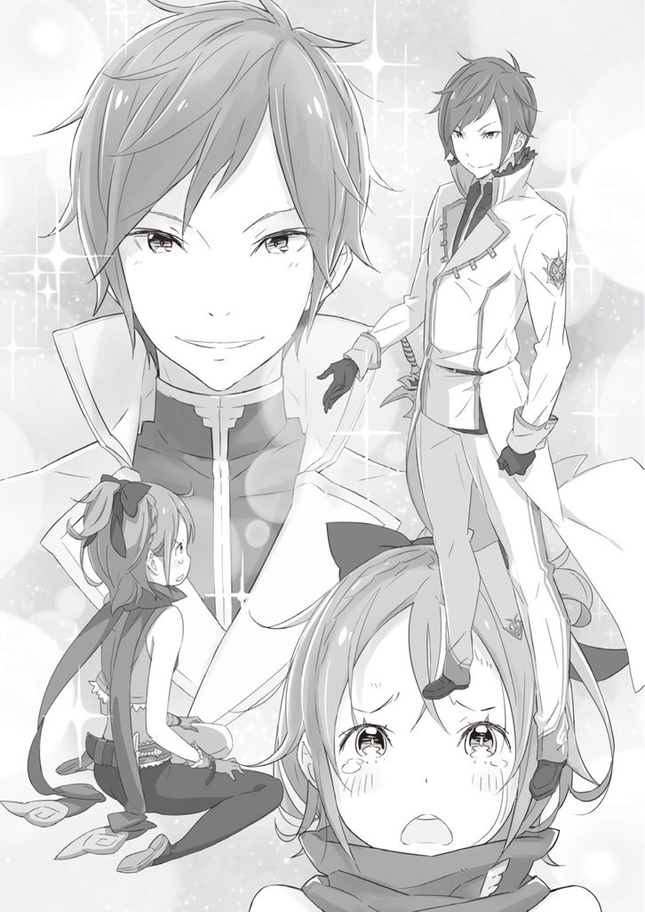
５
「......ラインハルト、か？」
「そうだよ、スバル。さっきぶりだね。遅れてすまない」
腰砕けになったままのスバルを振り返り、赤毛の美青年──ラインハルトが申し訳なさそうに薄く微笑む。
埃を払う一動作にすら洗練されたものを感じ、スバルは路地裏でのトンチンカンとの相対とは一味違う、彼の本質の一端に触れた気がした。
ラインハルトは油断ない仕草で前を見て、自身に敵意をぶつけてくる黒衣の麗人を見やる。ふと、その青い瞳が何かを思い出すように細められる。
「黒髪に黒い装束。そしてくの字に折れた北国特有の刀剣──それだけ特徴があれば見間違えたりはしない。君は『腸狩り』だね」
「なんだその超物騒な異名......」
「その殺し方の特徴的なところからついた異名だよ。危険人物として、王都でも名前が上がっている有名人だ。実際は、ただの傭兵らしいという話ではあるけど」
スバルの呟きに律儀に応じて、ラインハルトは透き通る青い双眸でエルザを見据える。
「ラインハルト──そう、騎士の中の騎士。『剣聖』の家系、ね。すごいわ、こんなに楽しい相手ばかりだなんて。雇い主には感謝しなくてはいけないわね」
「色々と聞き出したいこともある。投降をお勧めしますが」
「血の滴る極上の獲物を前にして、飢えた肉食獣が我慢するとでも？」
薄い唇を赤い舌で艶めかしく舐め、エルザが恍惚の眼差しでラインハルトを見つめる。ラインハルトはエルザの視線を受けて、「そうですか」と困った仕草で頬を掻く。
「スバル、少し離れていて。それと、あの老人を安全圏へ。そのあとはあの方の側にいてくれると助かる」
「合点承知。......化け物みてぇな女だから、油断しないでな？」
「幸いなことに、怪物狩りは僕の専売特許でもあるんだ」
頼もしく言い残して、ラインハルトは気負う様子もなく歩き出す。
腰に下げた剣には手も触れず、無手のままの前進だ。
「──しっ」
鋭い呼気を放ち、エルザが手にしたククリナイフを首目掛けて一閃。
走る銀色にスバル相手の手加減はなく、空気すら殺してラインハルトの細い首へ襲いかかる。対するラインハルトは完全に無防備で、防御どころか回避の姿勢にすらない。
あわや、そのままラインハルトの首が吹っ飛ぶ光景をスバルは幻視した。だが、
「女性相手にあまり乱暴はしたくないんですが......」
心なしか声のトーンを落として、ラインハルトは紳士的に前置き。
「──失礼」
踏み込みだけで床が破裂し、衝撃波が発生するほどの蹴りがエルザを吹き飛ばしていた。
爆風の余波がスバルにまで襲いかかった。スバルは絶句する。
なんの変哲もない前蹴りが、家屋を揺るがす風を生んだのだ。直撃を受けたエルザは木の葉のように吹き飛びつつも、壁を足場に勢いを殺す。そうして受け身を取ったエルザの顔にも驚愕が張り付いていた。
「いやいやいやいや、マジかよ。......なんじゃ、そら」
規格外、という言葉をこれまでも何度も使ってきたが、スバルは今ここで初めてその言葉の定義が完全に間違っていたと確信する。
規格外という言葉はまさしく、この目の前の英雄のためにあるのだ。
彼の存在の前では、これまでこの異世界で目にしたあらゆる現象の全てがかすむ。
「噂通り......いえ、噂以上の存在なのね、あなたは」
「ご期待にそえるかどうか」
「その腰の剣は使わないのかしら。伝説の切れ味、味わってみたいのだけれど」
エルザはラインハルトの剣を指差し、本気の彼との対面を望む。しかし、ラインハルトはそのエルザの希望に首を横に振る。
「この剣は抜くべきとき以外は抜けないようになっている。鞘から刀身が出ていないということは、そのときではないということです」
「安く見られてしまったものだわ」
「僕個人としては困らされる判断ですよ。ですから──」
ついと視線をそらし、ラインハルトは盗品蔵の中を見渡す。と、彼は壁際に立てかけてあった古びた両手剣に目をつけた。ラインハルトは柄を足で跳ね上げて、回転する剣を易々と掴むと、確かめるように軽く振った。
「こちらでお相手させてもらいます。ご不満ですか？」
「──いいえ。ああ、素敵。素敵だわ。楽しませてちょうだい、ね！」
得物を握ったラインハルトに対し、先制するのは身を横に回したエルザだ。
斬撃に跳躍の速度を乗せるエルザ。受けて立つラインハルトは剣を真下から上へと振り抜く構えだ。その刹那の攻防を、スバルははっきりと捉える事ができた。
神々しさすら感じさせる、魔技じみたラインハルトの洗練された斬撃。
彼の手の中にあっては、場末の蔵の中で眠っていた粗悪品の剣ですら、まるで伝承に語り継がれる宝剣のような輝きを放ってみせる。
まさしく、その剣に込められた性能を余すところなく絞り出す剣技。
ラインハルトの刃は狙い通りにククリナイフの刃元に命中──鋼同士の衝突にもかかわらず、あり得ない切断力でもってエルザの手から刀身を舐めるように奪い去っていた。
手の中の得物の末路にエルザは言葉もない。
刀身だけが切り落とされたナイフは柄だけが残り、そして切り落とされた刀身は、
「武器を失ったのなら、投降をお勧めします」
振り返るラインハルトの片手が掴み取っていた。
掴んだ刀身を手首のひねりで投じて、鋭い音で壁に突き立てるラインハルト。ごくり、とエルザの喉が息を呑む音がスバルにも聞こえた。
「尋常じゃ、ねぇな。俺も茶化す気力もわかねぇよ」
絞るように感想を漏らして、スバルはいそいそと戦場から距離を置く。
そのまま倒れているロム爺の側に近寄り、巨体を引きずってどうにか壁際へ。
「ロム爺、ロム爺。おい、ハゲ、コラ、生きてんのか？」
「うぅ......誰が......ハゲ......」
「あんたに決まってんだろ、他にいるか。俺はハゲとデブにならないことだけが人生の目標なんだぞ。あんたは俺にとって反面教師その一だ」
弱々しいながらも返答をする額を叩いて、スバルは安堵の吐息をこぼす。
ちょっと強めに頭を打った以外、ロム爺の体に問題はなさそうだ。少しばかり記憶は残念になったりするかもしれないが、命があるなら些細な問題と割り切れる。
「その人、大丈夫そうなの？」
スバルに駆け寄ってきた偽サテラが声をかけてくる。
偽サテラは長い銀髪を背中に流し、昏倒するロム爺のケガの具合を確かめて、「これは治療しないと」と呟き、淡く青い輝きを掌にまとい始めた。
「おいおい。言っとくけどこの爺さん、お前の徽章を盗んだ一味だぜ？」
「だからよ。無事に治ってもらって、その恩を逆手に情報を聞き出すの。命の恩人相手なら嘘なんてきっとつかないわ。これも私のための行為よ」
いちいちそうやって言い訳しないと、自分の行為を正当化できないのだろうか。
ほとほと遠回しな偽サテラに苦笑しつつ、スバルは戦局の方に視線を送る。
膝を屈したままのエルザの表情は見えない。ラインハルトは戦意を奪ったと判断したのだろうか。ボロ剣を持つ手を下げたまま、無防備にエルザに歩み寄る。
技量差に自信があってこその行動だろうが、慢心が生むのは常に最悪の結果だ。スバルの中でなにがしかの警鐘が鳴る。
「二本目があるぞ、ラインハルト！」
エルザの腰から引き抜かれた二本目のククリナイフが、のけ反るラインハルトの赤い前髪をわずかに切り捨てる。奇襲を回避されたエルザはその黒瞳をスバルに向けた。
「よくわかったわね」
「実体験があったんでな！」
中指を立てて自慢にならない自慢。エルザはそれを戯言と判断したのか聞き捨てて、
「ただし、牙は二本だけではないの。......仕切り直しに付き合っていただける？」
「全ての武器を切り落とせば、満足してもらえるかな」
「牙がなくなれば爪で。爪がなくなれば骨で。骨がなくなるのならば命で。──それが『腸狩り』のやり方よ」
「それなら、その看板を折らせてもらうとするよ」
腰から三本目のナイフを抜き、二刀を構えるエルザが再び跳躍。蜘蛛女、と罵倒した通り、エルザは重力を無視した機動で縦横無尽に室内を飛び回る。
しなる刃と刃が交錯し、鋼同士の激突に火花が飛び散った。壁を蹴り、天井を蹴り、エルザは一撃離脱の戦法を繰り返す。それを迎え撃つラインハルト。
一進一退の攻防が眼前で繰り広げられる。スバルは息を呑んで見守る他ない。
「まさかラインハルトですら、決め手に欠けるってんじゃねぇだろうな......」
エルザの技量は人外の領域に足を踏み入れており、もはや目で追うことすら困難。ただし相対するラインハルトは、その実力が根本から伝説級のものだ。
天上人同士の激突にこそ違いないが、それでもラインハルトの方が実力的に勝っているとスバルは見ている。それだけに、ラインハルトの現状には首を傾げるのだが、
「......こっちに気を遣ってくれてるのよ、彼は」
スバルの疑問に答えるように、ロム爺を治療する偽サテラが呟く。「え？」と声を上げるスバルを横目で見て、偽サテラは悔しげに唇を噛む。
「私が精霊術を使ってるから、彼は本気が出せないの。せめて治療が終わるまでは」
「どういう因果関係？」
「ラインハルトが本当に戦うつもりになれば、大気中のマナは私にそっぽ向くもの。──そろそろ治療が終わる。合図したら、彼に声をかけて」
「あ、ああ」
イマイチ要領を得ない説明だったが、頼まれたスバルは戸惑いつつも了承する。
青い輝きはロム爺の頭部に浮いていた打撲と、小さな出血のあった傷を癒し続けている。次第に血の跡や傷口が消えてゆき、感嘆するスバルの前で偽サテラが深い息を吐いた。
「お願い」
「お任され。──ラインハルト！ よくわからんが、やっちまえ！」
防戦一方だったラインハルトに対し、スバルが治療完了の報を投げ込む。
ちらりと視線だけで振り返るラインハルト。スバルと視線を合わせるとかすかに顎を引いて応える。
「──何を見せてくれるの？」
「アストレア家の剣撃を──」
跳ねるエルザの問いかけに、ラインハルトが短く厳かに応じた。
──直後、盗品蔵の中の空間が引き歪むような感覚をスバルは得た。
６
「は？」
視界に入る大気が歪み、心なしか部屋の明るさが一段階失われたように思える。
それどころか氷結魔法の連続で低下していた気温がさらに下がる。思わず起きた身震いにスバルは己の肩を抱いた。
「え、あれ、おい」
「ごめんなさい......ちょっと、肩を貸して」
寄りかかってくる銀髪の少女を、スバルはわたわたと慌てながら支える。
華奢な体はひどく熱く、スバルは自分の鼓動がこれまでと違う原因で跳ねるのを自覚する。しかし偽サテラの表情を見て、そんな男の子としての感慨も一瞬で吹き飛んだ。
小刻みに浅い息を繰り返し、苦しげな少女。まるで高熱を発した病人だ。
「どうした、急に体調でも悪く......」
「違うの。マナが......わかるでしょ？」
──さっぱりわからん。
腕を組んで断言してやりたいところだったが、そんな雰囲気でもない。
なにより、スバルの言葉を封じたのは肩にかかる重さではなく、変貌した室内の雰囲気──その根源に当たる存在だ。
部屋の中央で、ラインハルトが両手剣を低い姿勢で構える。
いや、構え自体は戦いが始まってからずっと取っていたはずだ。そのはずなのだが、スバルはその光景を『初めて剣を構えた』と呼ぶのにふさわしいと肌で感じていた。
「『腸狩り』エルザ・グランヒルテ」
「──『剣聖』の家系、ラインハルト・ヴァン・アストレア」
すさまじい剣気が室内を押し包み、向かい合う二人の戦意が大気を震わせる。
唇を舐めて名乗り上げを行うエルザに、ラインハルトもまた厳かに頷いてそれに応じた。
このほとんど廃墟と化した場所で、黒衣の殺人者と軽装の英雄が向き合い、打ち合う鋼は血に濡れた短刀と錆すら浮いた古びた両手剣──にもかかわらず、スバルは息を呑む。
互いに名乗りを上げて、これから一騎打ちに臨もうとする二人。
その姿がまるで、英雄譚の一節のように輝かしいものにすら思えたからだ。
「────ッ」
息を詰める叫び、それはエルザのものか、ラインハルトのものか、それとも果たしてスバルのものだったのか定かではない。
極光が屋根を失った盗品蔵を引き裂き、空間ごと真っ二つに切り裂いた。
世界がずれたとしか思えない光景、放たれた極光は一瞬の間、室内を白く塗り潰していたが、光が晴れた直後に世界が激変する。ずれた空間が元に戻ろうと収束を始め、大気が歪曲するほどの威力の余波が部屋の中を暴風となって荒れ狂う。
逆巻く風が盗品を、家財を、廃材を巻き込んで暴れ回り、その二次災害からスバルは必死で偽サテラとロム爺の巨体を守り切る。
「なん──ッ!? おい、おい、おい──ッ!!」
暴波の意味はわからない。わからないが原因はわかる。
『剣聖』がたったひと振り、全力で剣を振るった──それだけでこの有様だ。
声を上げて、痛みと風を耐えしのぐ。やがて、暴威はその威力を弱め、吹き散らされた廃材や盗品が床に落ちる音、家屋が軋む鈍い音などが連鎖して終焉を告げる。
頭に落ちてきた掛け軸のような残骸を放り捨て、スバルは体を張って守った二人が無事なのを確認。カバーが足りなかったのか、多少ロム爺がミルクやらなんやらで汚れている気がするが、そこは勘弁してもらおう。
「なにが化け物狩りは自分の領分だ。お前のが十分、化け物じゃねぇか！」
「そう言われると、さすがに僕も傷付くよ、スバル」
苦笑しながら破壊の原因、ラインハルトが振り返って言った。
暴風に燃えるような赤い頭髪は乱れ、さすがの涼しい顔にも汗が浮かんでいる。そして彼の手の中の両手剣は──、
「無理をさせてしまったね。ゆっくり、おやすみ」
手の中で崩壊していく両手剣。その粗末な作りではラインハルトの一撃に耐えることができなかったのだ。鋼の刃が朽ちるほどの一撃、それをまともに受けたエルザは、
「死体どころか影も残ってねぇ......これが剣振っただけの現場か？」
世界ごと切り裂くような斬撃のあとには、本当の意味で何も残っていない。
破壊は盗品蔵の入口付近をカウンター席ごと吹き飛ばし、余波は蔵の前の広場にも及んでいる。吹き荒れた暴風は建材を軒並み崩壊させ、今にも建物が崩れそうだ。
エルザの立っていたはずの場所は、当然斬撃の範囲内であり、黒衣の長身の姿はどこにもない。
「でもこれで......」
緊張にかちこちに固まった体を伸ばし、スバルは大きく息を吐いた。
そしてどうにも実感を得ていなかった事実を確かめるように、隣の存在を思う。
スバルに肩を預ける銀色の少女──偽サテラはまだ少し浅い呼吸を繰り返しながらも、スバルの視線に気付くと紫紺の瞳をこちらに合わせた。
「無事に、終わったの？」
「ああ、ホントの意味でどうにかな」
弱々しい問いかけに答えて、スバルは立ち上がろうとする少女を支える。立ち上がった少女は己の銀髪を梳き、まだ頼りなげな足でスバルの庇護を離れた。
自分の手を離れる偽サテラを、スバルはしげしげと眺めて、
「じろじろと、どうしたの？ すごーく失礼だと思うけど」
「手足はもちろん、首もちゃんとついてるよな」
「......当たり前でしょ？ 恐いこと言わないでくれる？」
スバルの感想は偽サテラには意味がわからなかったのだろう。
じと目でこちらを睨んでくる偽サテラにスバルは親指を立てて歯を光らせる。
「そうだな、当たり前だよな。もちろん、俺の手足もついてるし、背中にナイフが生えてもいなけりゃ、腹にでかい風穴が開いてたりもしないぜ！」
「生えてたり開いてたりした時期があるみたいな言い方するわね」
──そんな時期があったのです。
スバルが役立たずなせいで、偽サテラも命を吹っ飛ばしたり、ロム爺も腕と首が飛んだり、フェルトもばっさりやられたりと散々なものだった。
「そういや、ラインハルト。まだ礼を言ってなかった。マジ助かった。さっきの路地のことといい、俺の心の叫びが聞こえたのかよ、友よ」
「それができたなら僕も胸を張るんだけどね、友達くん」
肩をすくめるラインハルトは心苦しげな顔で、顎の動きで一方を示す。
彼の仕草に従ってそちらを見ると、
「お」
そこにいた人物の姿を見て、スバルは自分の口が思わぬ綻びを得たのを感じた。
盗品蔵の、今はもはやなくなってしまった入口。かろうじて残る柱の陰からおずおずとこちらを見ているのは、八重歯の目立つ金髪の少女だ。
「彼女が必死で路地を走り回っていたんだ。そして僕に助けを求めた。僕がここにこれたのは彼女のおかげだよ。その後は騎士の務めを果たしただけさ」
「騎士の務めって、ボロボロの廃屋を平たくすること？」
「それって意地悪過ぎやしないかい、スバル」
痛いところを突かれた、と胸を押さえるラインハルト。これほどの惨状を生み出しておきながら、その変わらぬ親しみやすさはどこか空恐ろしくもある。
「あの子は......」
偽サテラもまた、おぼつかない足取りの中でフェルトの姿に気付いた。
スバルはフェルトを守るように、偽サテラの前に回り込む。
「待った待った。あいつがラインハルトを呼んでくんなきゃ、俺たちはきっと全滅してたんだぜ？ ここは俺の顔に免じて、氷の彫像の刑は見送ってくれよ」
「そんな乱暴しないわよっ。というか、あなたの顔に免じてって......」
疲れたように眉間を揉む偽サテラ。
そんな仕草の一つすら、どこかスバルには喜ばしいものに感じられる。
こうしてお互いが生きている状態で、軽口が叩いていられるのだ。
「あとは俺のネゴシエーション次第か......そこが一番、信用できねぇ！」
「さっきからどうしたの？ わたわたして、すごーくみっともないけど」
ぐさりとくる一言、スバルもまた胸を押さえてラインハルトと同じリアクション。もっとも、そこにはひょうきんさがあるだけで、彼のような凛々しさは微塵もない。
そんなこちらのやり取りを見て、ラインハルトは小さく嫌味なく笑う。それから黙してこちらをうかがうフェルトの方へ、片手を挙げて迎えにいった。
颯爽とした後ろ姿には嫉妬心すら浮かばず、スバルは肩を落とすしかない。これが持てるものと持たざるものの違いか。警戒しつつも、助けに応じてくれたことへの恩義を感じているのか、歩み寄ってくるラインハルトからフェルトは逃げようとはしない。
そんな二人を若干、微笑ましいような感じでスバルは見守り──
「──スバル！」
ふいにこちらを振り向いたラインハルトの叫びに、窮地を脱していなかったことを悟る。
「────ッ!!」
廃材が跳ね上げられ、その下から黒い影が出現する。
影は黒髪を躍らせて、血を滴らせながらも力強く足を踏み出し、加速を得る。
ひしゃげたククリナイフを握りしめ、無言で疾走するのは流血するエルザだ。
「てめぇ──ッ！」
あの苛烈な斬撃を掻い潜り、命を拾った殺人者の目には漆黒が宿っている。
これまでの相対でもっとも、スバルの背筋に氷を差し込む殺気を放っていた。
接触までのわずかな数秒、その間にスバルの思考はめまぐるしく回転する。
一瞬の邂逅。たった一発に賭けている。ラインハルトは間に合わない。一撃だけしのげば、ラインハルトがどうにかする。偽サテラは振り返る余裕もない。狙いはどっちを。二度の経験。二度の死。恐怖。痛み。俺は三度目、彼女を守る。
──彼女を、守れ!!
「狙いは腹ぁぁぁぁぁっ!!」
偽サテラを突き飛ばすように庇い、腕の中に残っていた棍棒を引き上げ、とっさに腹の上をガード──衝撃。
横薙ぎの一発の威力は斬撃というより、重厚な鈍器による打撃に近かった。
土手っ腹への衝撃で地から足が離れ、世界が百八十度回転する感覚を、血を吐きながらスバルは味わった。ぐるぐると視界が回る。実際に吹き飛ぶ体が回転しているのだ。
どれだけ飛ばされたのかもわからないまま、受け身も取れずに壁に激突させられる。
「この子はまた邪魔を──」
ぶっ飛んだスバルを見ながら、エルザが悔しげに舌を鳴らす。
「そこまでだ、エルザ！」
駆け戻るラインハルトを前に、戦闘続行の無意味さを悟る。
エルザは手の中、スバルへの最後の一撃で完全に歪んだククリナイフをラインハルトへ投擲。大きく狙いを外したそれは、しかし牽制の役目だけはしっかり果たし、
「いずれ、この場にいる全員の腹を切り開いてあげる。それまではせいぜい、腸を可愛がっておいて」
廃材を足場に、エルザが跳躍する時間を稼ぐには十分だった。
屋根を踏み、身軽に建物を飛び越える細身を追うのは骨が折れる。これ以上の戦闘を望まないラインハルトは、エルザの背を追うことをしなかった。
遠ざかる背中を見送って、ラインハルトは銀髪の少女に駆け寄る。
「ご無事ですか──」
「私のことはどうでもいいでしょう!? それより......」
偽サテラはふらつく足を叱咤して壁際──逆さまに倒れているスバルの側へ向かう。
「ちょっと大丈夫!? 無茶しすぎよっ」
「お、ぉぉお......ら、楽勝楽勝。あそこってば無茶する場面だろ？ 動けんの俺しかいねぇし、あいつがとっさに狙う場所もこっそり当てがあったし」
心配そうに顔を寄せてくる偽サテラに手を掲げ、スバルは一撃をもらった腹を軽く撫でる。尋常でない打撲傷に、服をめくった下が真紫になっているのが見えた。
うええ、とその見た目の悪さに舌を出し、それからスバルは逆さまの体をひっくり返した勢いで立ち上がる。
「今度はもう、完璧にいなくなったよな？」
「すまない、スバル。さっきのは僕の油断だ。君がいなければ危ないところだった。この方が傷付けられていたら大変なことに......」
「待て待て待て待て、言うな言うな言うな言うな！ そっから先は発言禁止だ。こんだけ色々もったいぶって、お前の口から聞かされたんじゃ俺が報われん」
謝罪を口にしかけるラインハルトを制止して、押し黙る彼にスバルは笑みを向ける。それからゆっくりとした動きで振り向き、自分を見上げる銀髪の少女と視線を合わせた。
彼女は身じろぎし、それから立ち上がる。二人の間の距離は二歩分、手を伸ばせば届く位置だ。ずいぶんと遠回りしたものだと、ここまでの道のりを感慨深く思い出す。
突如、瞑目して黙り込んだスバルに少女は物言いたげな顔をする。
しかし、少女が口を開くより先に、スバルが指を天に突きつける方が早かった。
左手を腰に当て、右手を天に向けて伸ばし、驚く周りの視線を完全に意識から除外して、スバルは高らかに声を上げる。
「俺の名前はナツキ・スバル！ 色々と言いたいことも聞きたいことも山ほどあるのはわかっちゃいるが、それらはとりあえずおいといてまず聞こう！」
「な、なによ......」
「俺ってば、今まさに君を凶刃から守り抜いた命の恩人！ ここまでオーケー!?」
「おーけー？」
「よろしいですかの意。ってなわけで、オーケー!?」
ＯとＫを上半身の動きで表現するスバルに、銀髪の少女はひきつりながらも、「お、おーけー」と応じる。
「命の恩人、レスキュー俺。そしてそれに助けられたヒロインが君。そんなら相応の礼があってもいいんじゃないか？ ないかな!?」
「......わかってるわよ。私にできることなら、って条件付きだけど」
「なぁらぁ、俺の願いはオンリーワン、ただ一個だけだ」
指を一本だけ立てて突きつけ、くどいくらいにそれを強調。
スバルの言葉に少女が不安に瞳を揺らしながらも、決意を瞳に宿して頷いた。
「そう、俺の願いは──」
「うん」
歯を光らせて、指を鳴らして、親指を立てて決め顔を作り、
「──君の名前を教えてほしい」
呆気にとられたような顔で、少女の紫紺の瞳が見開かれた。
しばしの沈黙が二人の間に落ちる。スバルの眼差しは揺れない。ただ真っ直ぐに、目の前に立つ銀色の少女のことだけを見つめている。そして、
「ふふっ」
口元に手を当てて、白い頬を紅潮させ、銀髪を揺らしながら少女が笑った。
それは諦めた笑みでもなく、儚げな微笑でもなく、覚悟を決めた悲愴なものでもない。ただ純粋に、楽しいから笑った。それだけの微笑みだ。
「──エミリア」
「え......」
笑い声に続いて伝えられた単語に、スバルは小さな吐息だけを漏らす。
彼女はそんなスバルの反応に姿勢を正し、唇に指を当てながら悪戯っぽく笑い、
「私の名前はエミリア。ただのエミリアよ。ありがとう、スバル」
「私を助けてくれて」と彼女は手を差し出した。
その差し出された白い手を見下ろし、おずおずとその手に触れる。指が細く、掌が小さく、華奢でとても温かい、血の通う女の子の手だった。
──助けてくれてありがとう。
そう言いたいのは彼女だけではない、スバルの方だった。スバルの方が先に彼女に恩を受けていたのだ。だからこれは、それがようやく返せただけのこと。
通算して三回、刃傷沙汰で命を落として辿り着いた結末。
あれだけ傷付いて、あれだけ嘆いて、あれだけ痛い思いをして、あれだけ命懸けで戦い抜いて、その報酬が彼女の名前と笑顔一つ。
ああ、なんと──。
「ああ、まったく、わりに合わねぇ」
言いながらスバルもまた笑い、固く少女──エミリアの手を握り返したのだった。
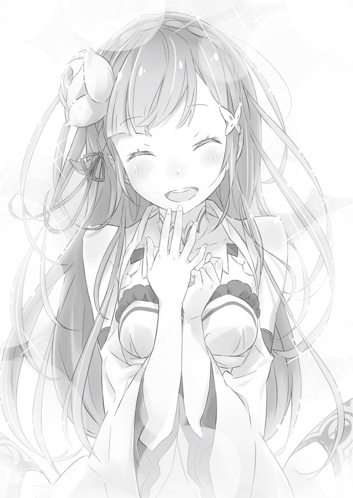
７
──と、ここで終わっていればいい話で終われたのだが。
「それにしてもスバル、よく無事だったね」
一通り、エミリアとのやり取りを終えるタイミングを待っていたのだろう。
強制的にお黙り、とされていたラインハルトがスバルの無事を言葉少なに驚く。彼ほどの使い手から見ても、エルザの最後の一撃はそれだけのものだったということか。
スバルは痛む腹部を軽く押さえて、それから床に転がる棍棒を指差す。
棘付きの棍棒はその太くたくましい見た目通り、立派な盾として働いてくれた。本来の用途とは違うものの、そこは納得してほしい。
「そいつでとっさにガードしたかんな。それがなきゃ、今頃は胴体真っ二つだ」
「そうだね。これがなければ──」
ＢＡＤ ＥＮＤ４は回避できなかった、とあっけらかんとスバルは笑う。それに追従するように笑いながら、ラインハルトは何気なく落ちていた棍棒を拾い、
「あれ」
その手の中で棍棒は滑らかな切断面をさらして、鈍い音を立てて地面に落ちた。
ど真ん中で二つになったそれは、その役目を完全に終えている。
ゆっくりと、ラインハルトがスバルの方を気まずそうな顔で見た。
スバルもその視線に従って、嫌な予感を感じつつもジャージの裾をまくる。胴体は先ほどと同じ、打撲で真紫の超変色状態だが、そこに変化が生まれた。
──ふいに、横一線に赤い線が引かれたのだ。
「あ、やばい、これ、俺にも先が読めた」
戯言の直後、鋭い痛みが先鋒として訪れる。
そして次の瞬間──スバルの腹部が横一文字に裂け、大量の鮮血が噴出した。
「──ちょ、スバル!?」
すぐ近くで、エミリアの切羽詰まった声が聞こえる。
ああ、やっと本当の名前が聞けたっていうのに、下手したらまた終わりか。
視界が大きく傾く。体が倒れ込んだのかもしれない。
──たとえそうであったとしても、俺はまたここへくるだろう。
ラインハルトが焦りを浮かべ、すぐ近くで顔を覗き込んでくるエミリアがその整った面に悲痛な表情を象っている。
──ああ、焦ってたりしててもマジ可愛いな、異世界ファンタジー。
そんないつかと同じような感想を最後に、激痛とショックがスバルの意識を波濤の如く押し流していった。
エピローグ 『お月さまが見てる』
淡く輝く青い光──癒しを司る水の波動を遠目に見ながら、ラインハルトは周囲には気付かれないほどささやかな吐息をこぼした。
端正な横顔には憂いが浮かび、戦いの名残がかすかに装いには残っている。廃墟を前に佇むその姿を切り取れば、ただそれだけで名画の一枚が完成しそうな立ち振舞いだ。
しかし、ラインハルト自身には言葉を尽くしてもなお足りない無念があった。
「──よし、これで大丈夫」
瞑目し、己を責めるラインハルトの鼓膜に銀鈴のような声が届く。
額を拭うような仕草をして、壁に寄りかからせたスバルの前髪を軽く払う。スバルの顔に赤みが差しているのを確認。立ち上がるエミリアは「うん」と納得の頷きで振り返る。
「治療は完了。──どうにか、峠は越えたでしょ」
「それはなによりです。その上でエミリア様......」
満足げなエミリアに足早に歩み寄り、ラインハルトはその足下に膝をついて頭を垂れる。所作一つ一つによどみのない、完璧に礼式に則った姿勢だ。
「此度は自分の至らなさにより、エミリア様に多大な心労をおかけいたしました。この失態に対する罰はいかようにもお受けいたします」
立てた膝の前に腰に預けていた剣を置き、ラインハルトは己の失態を謝罪する。
騎士として、最大の謝意の示し方だ。この上でいかな沙汰が下されようと、甘んじて受け入れる覚悟がラインハルトにはあった。
だが、立てた指を振って、どこか不満げに銀髪の少女は唇を尖らせる。
「そういうところ、よくわからないのよね、あなたたちって」
「は？」
「危ういところを助けにきてくれて、こうしてみんなが無事に切り抜けられた。それなのに、その間の苦労や痛みの責任まで全部抱え込もうとするんだもの」
エミリアは立てた指を、安らかな寝顔を浮かべているスバルの方に向ける。
「あの子の方がよっぽど素直じゃない。助けてやったんだからお礼を寄こせ、って言ってきたぐらいなんだから。全然、欲張りじゃないお礼だったけどね」
名前を教えてほしい、とスバルがかっこつけて言っていたのはラインハルトも見ていた。思い出し笑いを浮かべるエミリアに、思わずラインハルトの唇も綻びかける。
「だから、助けてくれてありがとう。──私があなたに言うのはそれだけ。罪が見当たらないから罰も与えようがない。納得できないなら、次また誰かを助けるときうまくやって」
「──わかりました。そのお言葉、ありがたく」
さらに深く頭を垂れ、敬意を表してからラインハルトは立ち上がる。
互いに向き合えば、ラインハルトの方がはるかに上背があり、エミリアを見下ろすような形になる。にもかかわらず、先ほど感じさせられた大きさはなんなのか。
器の差なのだろう、とラインハルトは己の狭量さを推し量る。
やはりエミリアも『選ばれている』だけの人物なのだと再確認した。
「そうだ。助けにきてくれたってことで思い出したけど......どうやってここに？」
「今日は休日で、目的もなく王都を散策していたんです。勝手に見回りなどしては団長に怒られるので、本当に散策していただけだったんですが......彼に会いまして」
エミリアの疑問に答えながら、ラインハルトは眠るスバルをそっと視線で示した。
ラインハルトがこの場に間に合った経緯は、スバルとの出会いの場面までさかのぼる。
路地裏での語らいの中、スバルが口にした探し人の特徴と『盗品蔵』という名称。既知と未知の情報が重なり、それを追ううちにラインハルトもまた貧民街へ足を踏み入れ、
「途中で彼女と出会い、今に至るというところです」
「そう、あの子に」
話題に名前が上がったことで、エミリアの視線が広場の隅──そこで、いまだに意識の戻らない老人を看護しているフェルトへと向かう。
金髪の少女はその視線を受けて振り返り、気まずげにその瞳を伏せた。
「エミリア様、彼女とは......」
「ラインハルト。色々と力になってもらってありがとう。助けてもらって感謝してる。でもその上でお願い。ここから先のことに、口出ししないで」
強い口調で言い切られ、それ以上の言及をラインハルトは諦める。
エミリアはフェルトに対して、話をどう切り出すか迷うように目を閉じている。エミリアの美しい横顔を見ながら、ラインハルトは小さく吐息をこぼす。
「詳しくはお聞きしませんが、大事なお体です。身辺にはくれぐれもご注意を。──帰りは騎士をつけますので、同行させてください」
「そこまでお世話にって言っても、ここまできたらもうおんなじよね。お願いします」
ラインハルトは「心得ました」と返答。含み笑うエミリアの視線を辿ると、安らかな寝顔をさらしているスバルに辿り着いた。
「彼──スバルとは、どういうご関係ですか？」
「行きずり」
間髪入れずにそう答えられて、ラインハルトは思わず鼻白む。
たじろぐラインハルトの様子がよほどおかしかったのか、エミリアは唇を綻ばせる。
「だって、本当に行きずりとしか言いようがないの。今までスバルと会った覚えはないわ。ここで、ついさっき会ったのが初めてのはずなんだけど......」
「ですが、彼はあなたを探していました。渡したいものがあると。事実、こうしてこの場にいることですし、それに......」
身を呈してエミリアを守った、と言いかけて、ラインハルトは口ごもる。
声高にそう主張することが、彼の行動の気高さを貶めるように思えたからだ。
「だから不思議なのよね。......今はちょっと、あの変態が何かしら関わってるんじゃないかって疑ってるんだけど」
「ロズワール辺境伯のことを、あまり悪く言われませんよう。あの方は立派なお方です。多少、変わり者であることは事実ですが......」
「変態で通じちゃった時点で、ラインハルトがどう思ってるかもわかるんだけど」
「......失礼しました。ロズワール伯にはご内密に」
ウィンクして謝意を表明すると、エミリアは「はいはい」と曖昧に返答。それからラインハルトは改めてスバルのことに水を向ける。
「彼の身柄はどうしましょうか。よろしければ、当家の方で客人として扱いますが」
「......ううん、こっちで連れ帰ります。その方が事情もはっきりするし、仮に変態の関係者じゃなくても、私を助けてくれたことには変わりないもの」
結びに「心遣いはありがとう」と声をかけられ、ラインハルトは目礼で応じる。
それでラインハルトとエミリア間の話し合いはほぼ終了だ。このあとはエミリアに騎士をつけて無事に邸宅へ送らせ、この場所の事後処理に当たらなくてはならない。
崩壊してしまった盗品蔵を見やり、ラインハルトは被害の大きさに瞑目する。
相変わらず、自制の足りない自分が恨めしい。ほんの少し、力加減を誤っただけでこの有様だ。下手を打てば一帯ごと消しかねない力、自重自戒の一言である。
「ここはどういう扱いになるの？」
「付近はしばらく立入禁止にして、しばらくは彼女──『腸狩り』の手配書を出します。もとから後ろ暗い噂の絶えない人物なので、無駄骨になる可能性の方が高いですが」
「あの女の子や、お爺さんは？」
「......事情はわかりかねますが、彼女やあのご老体のやっていたことは自分の職務上、見逃すことはできない部類であると考えます。ですが」
間を開けて息継ぎ、ラインハルトは小さく肩をすくめる。
「自分は今日は非番でして。付け加えて、被害者が被害を訴えない場合、証拠不十分でこれも難しい。はは。いえまったく、事情はわかりかねますが」
「ふふっ。悪い騎士様ね」
「恐れ多くも、これが騎士の中の騎士なんて呼ばれている男の本性ですよ」
ラインハルトが砕けた態度でそう口にすると、エミリアはその口元に手を当てて笑う。そうしてひとしきり笑い、その笑みが消えた頃、エミリアの考えもまとまったようだ。
歩き出すエミリアが向かうのは、老人を介抱する金髪の少女の下だ。その接近に気付いた少女も顔を上げ、エミリアの歩みに覚悟を決めたように向き直る。
「そのお爺さんは、あなたの家族？」
腰を折り、しゃがんでいるフェルトに視線を合わせてエミリアは問う。
問いかけにフェルトは唖然とした顔を作った。おそらく、予想していたどんな言葉とも違う言葉をかけられたからだろう。二人の事情を知らないラインハルトであっても、彼女たちの間にあるのが友好的な親交の積み重ねでないのはうかがい知れる。
出鼻をくじかれた形になったフェルトは気を取り直すように頬を掻き、すぐ傍らに寝ている老人の頭を照れ隠しするようにぺしぺし叩く。
「そ、そーみたいなもんだ。ロム爺はアタシにとって、たった一人の......うん、じーちゃんみてーなもんだな」
「そう。私の家族も一人だけ。肝心なときに眠りこけてるし、起きてるときには絶対にそんなことは言えないけど」
「アタシだって、起きてるロム爺にこんなこと言えねーよ」
心なしか、老人への打撃の威力がぺしぺしからびしびしへと上がっている。無意識なのだろう。速度も加速、白い禿頭が赤くなり始めている。
それからフェルトはエミリアを見上げ、その赤い双眸に弱々しい光を灯す。
「もっと、すげーきつくくるかと思ってた」
「そう、ね。さっきまでのままなら、そうだったかもしれないけど。毒気抜かれちゃったのかもね。だから少しだけど、あの子の顔に免じてあげる」
仕方ない、と苦笑してエミリアは肩をすくめる。
そんなエミリアの仕草と、眠るスバルを指差されて金髪の少女はしばし顔を伏せ、それから「ごめん」と小さく謝罪を口にした。
「命を助けてもらったんだ。恩知らずな真似はできねー。盗ったもんは返す」
「ん。そうしてもらえると助かるわ。私も、このお兄さんをけしかけるのはすごーく気が咎めるから」
片目をつむったエミリアが背後に立つラインハルトを手で示す。その言葉と赤毛の青年を見比べて、フェルトはその顔を盛大にしかめた。
「騎士の中の騎士。そんな奴と追っかけっこなんて正気じゃねー。アタシより足が速い奴なんて初めて見たぜ、びっくりした」
その言葉にラインハルトは無言の微笑み。フェルトは小さく舌を鳴らすと、立ち上がってエミリアの前へ。同じく立ち上がるエミリアに、フェルトは懐をまさぐりながら、
「んじゃ、返す。──大事なもんなら、今度から盗られねーようにちゃんと隠せよ」
「あなたにその忠告されるのってへんてこな気分ね。......できれば、今回だけじゃなくてもうこんなことはやめてほしいけど」
「そりゃ無理な話だ。言っとくが、アタシは今回だってアンタが命の恩人だから返すって考えてるだけ。悪いことしたとは思ってねーし、やめる気もねーよ」
エミリアの願いをすげなく断って、フェルトはその表情に強かな笑みを浮かべる。
少女の年齢でするには痛ましさすら感じる横顔だ。そんなフェルトの主義主張を聞きながら、ラインハルトはしかし無言でこれを受け入れる。
職務上、決して見逃すべき状況でないのはわかっている。が、他に少女たちにどんな生き方ができるというのか。対案も出さずに正論だけ振りかざすのは都合がよすぎる。
そう考えられる程度には、ラインハルトは王都を見てきたつもりだ。
それはエミリアにも察せられたのだろう。少しだけ儚げに目を伏せると、そのことについてエミリアは言及せずに手を出し、
「わかった。......強情ね」
「何もしねーで食い物がわいてくるならやらねーかもな。そんじゃ、ほらよ」
取り出したそれを掌に乗せ、フェルトはエミリアに盗品と思しきものを返す。
一瞬、赤いきらめきがラインハルトの瞳を過った。その眩い光は見覚えのあるもので、刹那の間だけ目を細めるラインハルトは記憶の海を探る。
そして思い当たる記憶を見つけ出し、
「──え」
「ラインハルト......？」
徽章を握る少女の手を、横合いから掴み取っていた。
驚きを瞳に浮かべるのは当事者二人だ。彼女たちは揃ってラインハルトを見上げ、そして彼の表情に浮かぶ真剣な眼差しを前に口ごもる。
「い、痛いっつの......放して......」
いやいやと、首を振るような弱々しい仕草で抵抗するフェルト。だが、手を握るラインハルトの力はゆるむ気配がない。本気になれば鋼すらひしゃげさせる力だ。加減されてはいても、華奢な少女に振りほどけるものではない。
「なんてことだ......」
震える呟き。それはラインハルトの口から紡がれたものだ。
その言葉に反応したのはエミリアだった。紫紺の瞳に動揺を浮かべ、
「待って、ラインハルト。確かに、お咎めなしで済ませるのが難しいことなのはわかってるの。でも、この子は徽章の価値を知らなかったのよ。そして盗られた私自身はそれを問題にしてない。盗られた私に落ち度があったことだから。だから」
「違います、エミリア様。僕が問題にしているのは、そんなことじゃない」
強い口調で上から言われ、エミリアは困惑した顔で押し黙る。
エミリアへの無礼な態度も忘れて、ラインハルトは自分が腕を掴む少女を見た。その紅の双眸と同じ頭髪の色を持つ青年を見上げ、フェルトの瞳が不安に揺れる。
「......君の名前は」
「ふぇ、フェルト......だ」
「家名は？ 年齢はいくつだい？」
「こ、孤児だぜ？ 家名なんて大層なもんは持っちゃいねーよ。年は......たぶん、十五ぐらいって話だ。誕生日がわかんねーから。っつか、放せよ！」
話している間にいくらか調子を取り戻し、乱暴な口調でフェルトは暴れる。が、巧みな力加減で少女を抑制し、ラインハルトはエミリアを見つめると、
「エミリア様、先ほどのお約束は守れなくなりました。──彼女の身柄は自分が預からせていただきます」
「......理由を聞いても？ 徽章盗難での罰というなら」
「それも決して小さくない罪ですが......今、こうして目の前の光景を見過ごすことの罪深さと比べれば些細なことに過ぎません」
戸惑いと無理解に眉をひそめるエミリア。
そんなエミリアの困惑を、ラインハルトは仕方のないことと受け止める。なにせ彼女には見慣れた状況でしかないのだ。気付け、という方が酷なのだろう。
「ついてきてもらいたい。すまないが、拒否権は与えられない」
「ふざけ......助けたからってあんまり調子に......っ？」
ラインハルトの言葉に口汚く応戦しようとして、ふいにフェルトの体勢が崩れる。
言葉尻も怪しく肩の力が抜け、フェルトは最後に恨めしげにラインハルトを睨んだ。
「地獄、落ちろ......ちくしょう」
憎まれ口を言い切って、フェルトはがくりと頭を下げた。意識を失ったフェルトの体を支え、横抱きにして持ち上げるラインハルト。
「また騎士様らしくないやり方......あんまり手酷くやると、ゲートに後遺症が残るわよ」
「幸い、生まれてからの付き合いなので加減は心得ております。──エミリア様、また近いうちに呼び出しがあるかと思われます。ご理解を」
意識のないフェルトの手から徽章を優しく奪い、エミリアに対して差し出す。
竜を象った徽章はまさしく、『親竜王国ルグニカ』の象徴そのものだ。ラインハルトの手の中で、うっすら鈍い光を放っている赤い宝珠──それがエミリアの手に渡ると同時に、持ち主の下へ戻ったのを喜ぶかのように眩く輝く。
「スバルのことを、どうかよろしくお願いします」
徽章を受け取り、無言で自分を見つめてくるエミリアにラインハルトは一礼。
腕の中、軽い少女の重みを感じながら、ふと手で彼女の額にかかる金髪をよける。あどけない白い顔立ちは、気を張る必要のない無意識であれば年相応に愛らしい。
衣服を着替え、路地の垢を落とせば、さぞや輝くことだろう。
強い風が吹き、ラインハルトの赤い前髪が踊る。
その隙間から空を見上げ、すでに夕闇に沈んだ王都の上空──月が浮かんでいる。
うっすらと青白く輝く満月、その美しさはどこか妖しげな魅力をはらんでおり、
「落ち着いて月を見れるのは、今日が最後かもしれないな──」
ラインハルトの囁きは、彼らを見下ろす月だけにしか届かなかった。
〈了〉
あとがき
書籍版からの方は初めまして、長月達平と申します。
ＷＥＢ版から引き続きの方はこんにちは、鼠色猫です。
どちらからおいでの方におかれましても、まずはこの本を手にとってくださり、ありがとうございます。
何がなにやら、とお思いの方もいらっしゃると思いますので説明します。
当作品『Ｒｅ：ゼロから始める異世界生活』はもともと、「小説家になろう」というサイト様の方で連載していた作品を、書籍用に手直ししたものとなっております。
基本的な流れはＷＥＢ投稿版をなぞりつつ、読みやすく、イベントを増やして、ヒロインをもっと可愛くして、主人公をもっと痛めつけて、とそんな形でのお目見えです。
ＷＥＢ版をご存知の方もそうでない方も、表紙を始めとして数々の美麗イラストにうなっていることと思いますが、誰であろう作者が一番うなっています。銀髪ヒロイン最高。
痛めつけられる主人公と、可愛らしいヒロインを描いてくださったのは大塚真一郎先生です。作者の頭の中に具体的なイメージのない登場人物たちを、大塚先生が溢れ出るデザイン力で描き出してくれたとき、キャラクターたちが本当の意味で生まれました。
つまり自分がお母さんで、大塚先生がお父さんです。共同作業です。
初めての共同作業が今後も続いていけますよう、皆さまのご協力をお願いいたします。
早い話、立ち読みの人は買ってください。続刊も、立て続けに出ますので是非（笑）
さて、露骨な販促も入れつつ、作品の内容に少し触れようと思います。
この作品は異世界ファンタジー。いわゆる『異世界トリップ』と言われるタイプの作品で、数々の名作を生んできた一大ジャンルでもあります。
剣と魔法のファンタジー世界には男の子なら誰でも、女の子でも一部抜粋して憧れたことがあると思います。この作品の主人公も、そんな平凡な日本男児の一人です。
剣も使えない。魔法も使えない。知恵も回らなければ体力勝負でも勝ち目がない。
八方ふさがりの状況で、ただ諦めの悪さだけが武器の主人公が、諦めない物語です。
諦めないことが武器になるのなら、それをどう描くか──その答えの一つです。
主人公があがき、もがき、諦めないで何を掴むのか。その答えをぜひ、皆様にも見届けていただきたい。そして銀髪ヒロイン最高と、声高に叫んでもらいたい。
作者の嗜好がダダ漏れになりつつあるので、謝辞に移ってお口直しをば。
まず、この作品をＷＥＢ界から引っこ抜き、「ちょっと一発かましてみようや」と誘ってくださった担当の池本さん。本当に、池本さんには足を向けて寝られません。
いい大人がトンカツ屋で二人して互いのキャベツにソースをかけ合いながら、「ヒロインに『たん』付けするのは是か非か」と牽制し合うのは正直どうかと思いますが、あの激論もこうして本になる喜びの前では良い思い出です。ありがとうございます。
そしてお忙しいスケジュールの中、すさまじい速度でイラストを仕上げてくださる大塚先生。一枚一枚、イラストが仕上がるたびに悶えすぎて足がつります。
今後、キャラが増えるのが楽しみでなりません。ありがとうございます。
他にも編集部の皆様、校閲さん、営業さんと関わってくださった全ての方々にお礼を。
この物語がこうして一つの形になったのには、多くの方のご尽力あってのことです。
今後も末永くお付き合いいただけるよう、頑張る所存です。
では、本当に最後になりますが、この本を手にとってくださった皆様、そして「小説家になろう」で当作品を応援し続けてくださった皆様、本当にありがとうございます。
また次巻、『Ｒｅ：ゼロから始める異世界生活２』でお会いできますよう！
２０１３年11月 長月達平
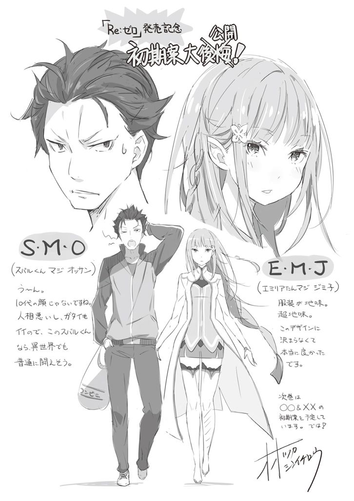
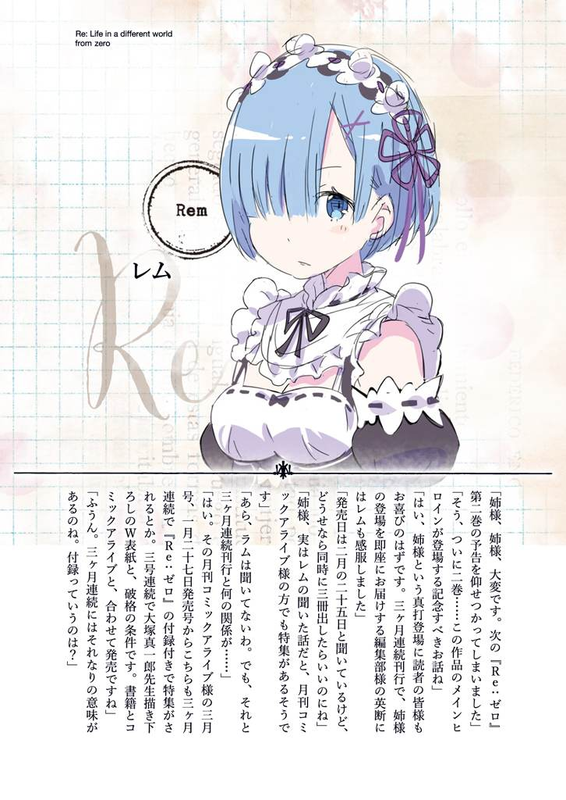
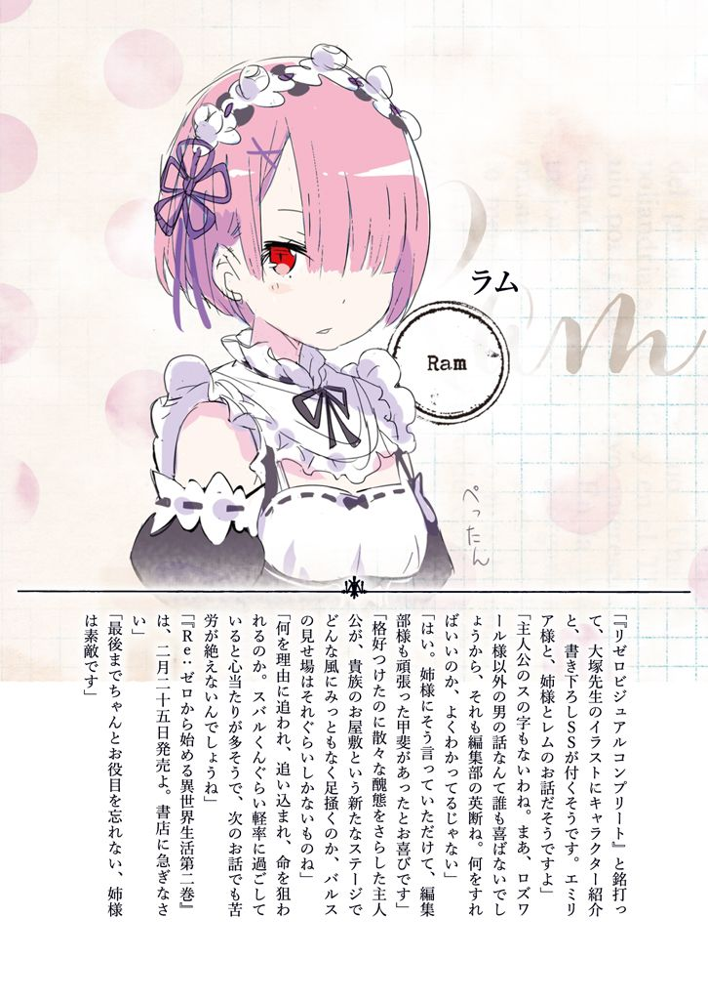
著者
長月達平（ながつき・たっぺい）
１９８７年３月生まれ。
埼玉の片田舎で、文章を書いたり肉を切ったりして日々を過ごす。日中より日没後の活動が盛んで、食欲も旺盛。物語に過敏に反応する習性があり、しばしば地方の本屋で目撃される。近頃は自分の本が本屋に並ぶことを夢見て、慢性的ににやけ面であることが多い。近づくと噛まれる危険性があります。
イラスト
大塚真一郎（おおつか・しんいちろう）
熊本出身のイラストレーター。ゲームを中心に小説の挿絵なども描いてます。代表作は「コンセプション」、「サモンナイトクラフトソード物語」など。
Ｒｅ：ゼロから始める異世界生活１
2014年1月31日発行 ver.1.0
著者 長月達平
発行者 三坂泰二
編集長 万木 壮
発行所 株式会社ＫＡＤＯＫＡＷＡ
〒102-8177
東京都千代田区富士見2-13-3
03-3238-8745（営業）
編集 メディアファクトリー
0570-002-001（カスタマーサポートセンター）
年末年始を除く平日10:00～18:00まで
©Tappei Nagatsuki 2014
※無断で複製・複写・データ配信などをすることは、かたくお断りいたします。
本電子書籍は下記にもとづいて制作しました
ＭＦ文庫Ｊ
Ｒｅ：ゼロから始める異世界生活１
発行日 2014年1月31日 初版第一刷発行

本作品の全部または一部を無断で複製、転載、配信、送信したり、ホームページ上に転載することを禁止します。また、本作品の内容を無断で改変、改ざん等を行うことも禁止します。
本作品購入時にご承諾いただいた規約により、有償・無償にかかわらず本作品を第三者に譲渡することはできません。
本作品を示すサムネイルなどのイメージ画像は、再ダウンロード時に予告なく変更される場合があります。
本作品は縦書きでレイアウトされています。
また、ご覧になるリーディングシステムにより、表示の差が認められることがあります。